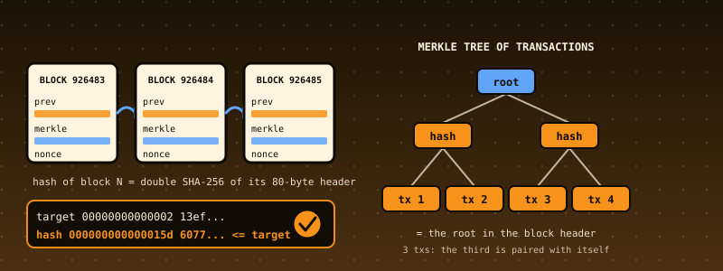

50. A Bitcoin Block Validator: Double SHA-256, Merkle Roots, Proof of Work, and What a Block Must Satisfy Before Anyone Looks at the Chain¶

What you will understand: what a Bitcoin block is at the byte level and which of its rules can be checked from the block alone. A validator (050_btc.h/050_btc.c) that parses a raw block and its transactions (legacy and SegWit serialisation), computes the block hash and transaction ids with double SHA-256, expands the compact difficulty target into a 256-bit number and checks proof of work, builds the Merkle root (and refuses the duplicated-transaction trick of CVE-2012-2459), checks the coinbase, every transaction's own rules, the BIP 34 height and the SegWit witness commitment; eleven real blocks validated inside the kernel against the hashes published in Bitcoin Core's own test data; Core's 214 transaction test vectors; and independent verification in Python with hashlib and unbounded integers.
What you need to know first: Chapter 30's SHA-256 (reused here), Chapter 47-49's testing discipline and the cumulative kernel carried forward, and Chapters 19-23's FAT16 (a report per block is written and read back).
Scope: three confirmed choices before writing any code¶
This is the second of the four case studies requested together. One AskUserQuestion round of three questions:
- Core feature: "Blocks + transactions + Merkle + PoW" (recommended). Signature verification (secp256k1) and script execution were offered and not chosen.
- Data: "Real blocks from public repos + Core vectors" (recommended).
- Hardening: "Full discipline" (recommended).
What this chapter does not do¶
It never runs a script, never checks a signature, never checks whether an input was already spent, never checks the block reward or the difficulty adjustment against the chain, and never looks at the clock. A block this code calls VALID satisfies the context-free rules. It is not thereby a block the Bitcoin network would accept: that needs the chain, the coin database and the script interpreter. Bitcoin Core's tx_invalid.json makes this concrete: 84 of its 93 invalid transactions are invalid only at the script level, and this validator correctly passes them (see Part 3 of the output).
Where the data comes from, said plainly¶
- Ten real testnet3 blocks (heights 0, 2, 3, 15007, 49291, 180480, 926485, 987876, 1263442, 1414221) are copied from Bitcoin Core's
src/test/data/blockfilters.json(github.com/bitcoin/bitcoin, commit66776840beb558f7e84451c2c55457f0e06242f0, MIT licence), together with each block's published hash. Two of them (926485, 1263442) carry SegWit witness data. - The mainnet genesis block is rebuilt byte by byte from its published fields (the coinbase text "The Times 03/Jan/2009 Chancellor on brink of second bailout for banks", the 50-coin output, time 1231006505, nonce 2083236893) and proved by its well-known hash
000000000019d6689c085ae165831e934ff763ae46a2a6c172b3f1b60a8ce26f;make_btc_data.pyasserts it. - Core's transaction vectors:
tx_valid.json(121) andtx_invalid.json(93), the nine "Tests for CheckTransaction()" entries labelled with the reason Core gives. - A synthetic chain: twelve blocks mined by
make_btc_data.pyat easy difficulty (bits1f00ffff), plus one block with a duplicated transaction. They are labelled synthetic everywhere. They exist to exercise linkage, BIP 34 heights and a SegWit commitment that the sparse real data does not cover.
The sandbox cannot reach block explorers; nothing was downloaded from the Bitcoin network. Eleven real blocks is a small sample, and the chapter claims nothing beyond it.
The rules¶
- A block is an 80-byte header (version, previous hash, Merkle root, time, bits, nonce) then a count and that many transactions. Its hash is SHA-256 of SHA-256 of the header, shown in reverse byte order.
- Proof of work.
bitsis a compact number (exponent byte, three mantissa bytes) that expands to a 256-bit target. It is refused if negative (sign bit), overflowing, zero or above the network limit. The hash, read as a 256-bit little-endian number, must not exceed the target. - Merkle root. Leaves are transaction ids; an odd level duplicates its last hash. The root must equal the header's. If two equal hashes sit side by side the tree is mutated:
[a, b, c, c]has the same root as[a, b, c], so a block could be altered without changing its root. Bitcoin refuses such blocks and so does this code. - The first transaction, and only the first, is the coinbase: one input with a null hash and index
0xffffffff, script 2 to 100 bytes. - Each transaction: has inputs and outputs, no output negative or above 21,000,000 coins (2,100,000,000,000,000 satoshi), outputs not summing above it, no duplicate input, no null input outside the coinbase, weight at most 4,000,000.
- A block's weight (3 x its non-witness size + its size) is at most 4,000,000.
- BIP 34: from version 2 the coinbase script begins with the block height.
- SegWit: the txid hashes the transaction without witness data, the wtxid with it. A block with witness data must carry in its coinbase an output beginning
6a24aa21a9edwhose 32 following bytes equal double-SHA-256(witness Merkle root || the coinbase's 32-byte witness reserved value), the witness tree using zeros for the coinbase's own leaf.
The validator: 050_btc.h and 050_btc.c¶
No libgcc in this kernel, so the reporter divides by shift-and-subtract; 256-bit numbers are compared as byte arrays, never divided.
/* Chapter 50: a Bitcoin block and transaction validator -- the CONTEXT-FREE rules, the ones that need only the bytes of the block itself (no chain, no coin database, no clock). Bitcoin's consensus is a set of rules every node applies
* to every block; this chapter implements the first layer of them, from Bitcoin's published formats and rules (the block and transaction serialisation, BIP 34 for the height in the coinbase, BIP 141 for the witness serialisation and the
* witness commitment, and the checks of Bitcoin Core's CheckBlock/CheckTransaction):
* * a block is an 80-byte HEADER (version, previous block hash, Merkle root, time, difficulty bits, nonce) followed by a count and that many transactions;
* * its identity is the SHA-256 of the SHA-256 of the header ("double SHA-256"), written in reverse byte order;
* * PROOF OF WORK: that hash, read as a 256-bit number, must not exceed the TARGET encoded in the header's "bits" (a compact floating-point form: one exponent byte, three mantissa bytes);
* * the MERKLE ROOT in the header must equal the root of the binary hash tree over the transactions' ids (an odd level duplicates its last hash -- which is also how a block with a DUPLICATED transaction can have the right root; Bitcoin
* rejects those, and so does this code);
* * the first transaction, and only the first, is the COINBASE (the one that creates the new coins);
* * every transaction passes its own checks: inputs and outputs present, no negative or over-limit amount (21,000,000 coins is the hard cap), no duplicate input, a coinbase script of 2 to 100 bytes, no null input outside the coinbase;
* * if the block carries SegWit witness data, the coinbase commits to the witness Merkle root, and the commitment must match.
* What this chapter does NOT do, stated here and again on the page: it never runs a script, never checks a signature, never looks up whether an input was already spent, never checks the block reward or the difficulty adjustment against the
* chain, and never looks at the clock. A block this code calls VALID satisfies the context-free rules; it is not thereby a block the Bitcoin network would accept. */
#ifndef BTC_H
#define BTC_H
#include <stdint.h>
#define BTC_MAX_TX 512
#define BTC_MAX_IN 4096
#define BTC_MAX_MONEY 2100000000000000ll /* 21,000,000 coins in satoshi */
#define BTC_MAX_WEIGHT 4000000u
enum { BTC_OK = 0, BTC_ERR_SHORT = -1, BTC_ERR_TOO_MANY_TX = -2, BTC_ERR_TOO_MANY_IN = -3, BTC_ERR_TRAILING = -4, BTC_ERR_FLAG = -5, BTC_ERR_SUPERFLUOUS_WITNESS = -6, BTC_ERR_VARINT = -7, BTC_ERR_NO_TX = -8 };
typedef struct {
int32_t version; uint32_t n_in, n_out, lock_time, size, stripped_size, weight; uint8_t has_witness, is_coinbase; int64_t value_out;
uint8_t txid[32], wtxid[32]; /* raw digest order; shown reversed */
uint32_t cb_script_off, cb_script_len; /* the coinbase's scriptSig, as an offset into the block bytes */
uint8_t wit0_items; uint32_t wit0_item0_off, wit0_item0_len; /* the first input's witness: item count and where item 0 is */
uint8_t commit_found; uint32_t commit_off; /* the last output whose script starts 6a24aa21a9ed: offset of its 32 commitment bytes */
const char *check; /* NULL when the transaction passes every context-free check, else Bitcoin Core's reason string */
} btc_tx_t;
typedef struct {
uint32_t version, time, bits, nonce; uint8_t prev[32], merkle[32], hash[32]; uint32_t size, weight, n_tx; btc_tx_t tx[BTC_MAX_TX];
uint8_t computed_merkle[32]; uint8_t merkle_mutated; uint8_t target_ok; const char *target_why; uint8_t target[32]; /* big-endian, as printed */ uint8_t pow_ok; uint32_t zero_bits;
uint8_t first_is_cb, other_cb, height_ok; int64_t height; /* BIP 34 height from the coinbase script; height_ok is 0 when there is none */ uint8_t witness; /* 0 none, 1 PASS, 2 FAIL */
const char *reason; /* NULL = VALID, else the first rule broken */
} btc_block_t;
void btc_dsha(const uint8_t *data, uint32_t len, uint8_t out[32]); /* double SHA-256 */
int btc_tx_parse(const uint8_t *b, uint32_t len, uint32_t pos, btc_tx_t *t, uint32_t *next); /* parses and checks one transaction at b+pos; BTC_OK or an error (the context-free checks never abort parsing: see t->check) */
int btc_block_parse(btc_block_t *B, const uint8_t *b, uint32_t len, uint32_t pow_limit_bits); /* parses and fully checks a block; B->reason is the verdict */
void btc_merkle(const uint8_t (*leaves)[32], uint32_t n, uint8_t root[32], uint8_t *mutated); /* Bitcoin's Merkle root; *mutated set when two equal hashes sit side by side */
int btc_compact(uint32_t bits, uint32_t limit_bits, uint8_t target_be[32], const char **why); /* 1 and the target when valid; 0 and the reason when not */
int btc_report(char *buf, uint32_t cap, const char *name, const btc_block_t *B); /* the canonical text btc_ref.py prints; its length or -1 */
const char *btc_strerror(int rc);
#endif
/* Chapter 50: the Bitcoin context-free validator (see 050_btc.h). Freestanding: no string.h, no libgcc division. */
#include "050_btc.h"
#include "050_sha256.h"
static uint32_t rd32(const uint8_t *p) { return (uint32_t)p[0] | (uint32_t)p[1] << 8 | (uint32_t)p[2] << 16 | (uint32_t)p[3] << 24; }
static int64_t rd64s(const uint8_t *p) { uint64_t lo = rd32(p), hi = rd32(p + 4); return (int64_t)(lo | hi << 32); }
static int same(const uint8_t *a, const uint8_t *b, uint32_t n) { for (uint32_t i = 0; i < n; i++) { if (a[i] != b[i]) { return 0; } } return 1; }
static void cpy(uint8_t *d, const uint8_t *s, uint32_t n) { for (uint32_t i = 0; i < n; i++) { d[i] = s[i]; } }
const char *btc_strerror(int rc) {
switch (rc) {
case BTC_OK: return "ok"; case BTC_ERR_SHORT: return "the data ends inside a structure"; case BTC_ERR_TOO_MANY_TX: return "more transactions than the table holds"; case BTC_ERR_TOO_MANY_IN: return "a transaction has more inputs than the table holds";
case BTC_ERR_TRAILING: return "bytes after the last transaction"; case BTC_ERR_FLAG: return "unknown transaction flag (only 0x01, the witness flag, exists)"; case BTC_ERR_SUPERFLUOUS_WITNESS: return "witness flag set but every witness is empty";
case BTC_ERR_VARINT: return "a variable-length integer is not minimal or does not fit"; case BTC_ERR_NO_TX: return "a block with no transactions";
}
return "unknown error";
}
void btc_dsha(const uint8_t *data, uint32_t len, uint8_t out[32]) { uint8_t t[32]; sha256_hash(data, len, t); sha256_hash(t, 32, out); }
/* a "CompactSize" integer; -1 when it runs past the end */
static int rd_varint(const uint8_t *b, uint32_t len, uint32_t *pos, uint64_t *v) {
uint32_t p = *pos; if (p >= len) { return -1; }
uint8_t n = b[p];
if (n < 0xfd) { *v = n; *pos = p + 1; return 0; }
if (n == 0xfd) { if (p + 3 > len) { return -1; } *v = (uint64_t)b[p + 1] | (uint64_t)b[p + 2] << 8; *pos = p + 3; return 0; }
if (n == 0xfe) { if (p + 5 > len) { return -1; } *v = rd32(b + p + 1); *pos = p + 5; return 0; }
if (p + 9 > len) { return -1; }
*v = (uint64_t)rd32(b + p + 1) | (uint64_t)rd32(b + p + 5) << 32; *pos = p + 9; return 0;
}
static uint32_t g_in_off[BTC_MAX_IN]; /* offsets of the current transaction's inputs, for the duplicate-input check */
int btc_tx_parse(const uint8_t *b, uint32_t len, uint32_t pos, btc_tx_t *t, uint32_t *next) {
uint32_t start = pos, p = pos; uint64_t v;
if (len - p < 10 || p > len) { return BTC_ERR_SHORT; }
t->version = (int32_t)rd32(b + p); p += 4; t->has_witness = 0;
if (b[p] == 0 && p + 1 < len && b[p + 1] != 0) { if (b[p + 1] != 1) { return BTC_ERR_FLAG; } t->has_witness = 1; p += 2; }
uint32_t vin_start = p;
if (rd_varint(b, len, &p, &v) != 0) { return BTC_ERR_SHORT; }
if (v > BTC_MAX_IN) { return BTC_ERR_TOO_MANY_IN; }
t->n_in = (uint32_t)v; t->cb_script_off = 0; t->cb_script_len = 0;
for (uint32_t i = 0; i < t->n_in; i++) {
if (len - p < 36 || p > len) { return BTC_ERR_SHORT; }
g_in_off[i] = p; uint32_t q = p + 36; uint64_t sl;
if (rd_varint(b, len, &q, &sl) != 0 || sl > len - q || len - q - sl < 4) { return BTC_ERR_SHORT; }
if (i == 0) { t->cb_script_off = q; t->cb_script_len = (uint32_t)sl; }
p = q + (uint32_t)sl + 4;
}
if (rd_varint(b, len, &p, &v) != 0) { return BTC_ERR_SHORT; }
uint64_t n_out = v; t->n_out = (uint32_t)(n_out > 0xffffffffu ? 0xffffffffu : n_out);
uint32_t vout_first = p; t->value_out = 0; t->commit_found = 0; t->commit_off = 0; const char *bad = 0; int64_t total = 0;
for (uint64_t i = 0; i < n_out; i++) {
if (len - p < 8 || p > len) { return BTC_ERR_SHORT; }
int64_t val = rd64s(b + p); uint32_t q = p + 8; uint64_t sl;
if (rd_varint(b, len, &q, &sl) != 0 || sl > len - q) { return BTC_ERR_SHORT; }
if (!bad) {
if (val < 0) { bad = "bad-txns-vout-negative"; }
else if (val > BTC_MAX_MONEY) { bad = "bad-txns-vout-toolarge"; }
else { total += val; if (total > BTC_MAX_MONEY) { bad = "bad-txns-txouttotal-toolarge"; } }
}
if (sl >= 38 && b[q] == 0x6a && b[q + 1] == 0x24 && b[q + 2] == 0xaa && b[q + 3] == 0x21 && b[q + 4] == 0xa9 && b[q + 5] == 0xed) { t->commit_found = 1; t->commit_off = q + 6; }
t->value_out = (int64_t)((uint64_t)t->value_out + (uint64_t)val); /* the plain sum of every output value (wraps only for absurd inputs) */
p = q + (uint32_t)sl;
}
(void)vout_first; uint32_t vout_end = p;
t->wit0_items = 0; t->wit0_item0_off = 0; t->wit0_item0_len = 0; int any_witness = 0;
if (t->has_witness) {
for (uint32_t i = 0; i < t->n_in; i++) {
uint64_t c; if (rd_varint(b, len, &p, &c) != 0) { return BTC_ERR_SHORT; }
if (c) { any_witness = 1; }
if (i == 0) { t->wit0_items = (uint8_t)(c > 255 ? 255 : c); }
for (uint64_t k = 0; k < c; k++) {
uint64_t l; if (rd_varint(b, len, &p, &l) != 0 || l > len - p) { return BTC_ERR_SHORT; }
if (i == 0 && k == 0) { t->wit0_item0_off = p; t->wit0_item0_len = (uint32_t)l; }
p += (uint32_t)l;
}
}
if (!any_witness) { return BTC_ERR_SUPERFLUOUS_WITNESS; }
}
if (len - p < 4 || p > len) { return BTC_ERR_SHORT; }
uint32_t lt_off = p; t->lock_time = rd32(b + p); p += 4; t->size = p - start; *next = p;
/* the txid hashes the serialisation WITHOUT witness data; the wtxid hashes everything */
if (t->has_witness) {
sha256_ctx_t c; uint8_t d1[32]; sha256_init(&c); sha256_update(&c, b + start, 4); sha256_update(&c, b + vin_start, vout_end - vin_start); sha256_update(&c, b + lt_off, 4); sha256_final(&c, d1); sha256_hash(d1, 32, t->txid);
t->stripped_size = 4 + (vout_end - vin_start) + 4;
} else { btc_dsha(b + start, t->size, t->txid); t->stripped_size = t->size; }
btc_dsha(b + start, t->size, t->wtxid);
t->weight = 3 * t->stripped_size + t->size;
static const uint8_t zero32[32] = {0};
t->is_coinbase = (t->n_in == 1 && same(b + g_in_off[0], zero32, 32) && rd32(b + g_in_off[0] + 32) == 0xffffffffu);
/* the context-free checks, in Bitcoin Core's order */
t->check = 0;
if (t->n_in == 0) { t->check = "bad-txns-vin-empty"; }
else if (n_out == 0) { t->check = "bad-txns-vout-empty"; }
else if (t->weight > BTC_MAX_WEIGHT) { t->check = "bad-txns-oversize"; }
else if (bad) { t->check = bad; }
else {
for (uint32_t i = 0; i < t->n_in && !t->check; i++) { for (uint32_t j = i + 1; j < t->n_in; j++) { if (same(b + g_in_off[i], b + g_in_off[j], 36)) { t->check = "bad-txns-inputs-duplicate"; break; } } }
if (!t->check) {
if (t->is_coinbase) { if (t->cb_script_len < 2 || t->cb_script_len > 100) { t->check = "bad-cb-length"; } }
else { for (uint32_t i = 0; i < t->n_in; i++) { if (same(b + g_in_off[i], zero32, 32) && rd32(b + g_in_off[i] + 32) == 0xffffffffu) { t->check = "bad-txns-prevout-null"; break; } } }
}
}
return BTC_OK;
}
void btc_merkle(const uint8_t (*leaves)[32], uint32_t n, uint8_t root[32], uint8_t *mutated) {
static uint8_t lv[BTC_MAX_TX + 1][32]; uint8_t pair[64]; *mutated = 0;
if (n == 0) { for (int i = 0; i < 32; i++) { root[i] = 0; } return; }
for (uint32_t i = 0; i < n; i++) { cpy(lv[i], leaves[i], 32); }
while (n > 1) {
for (uint32_t i = 0; i + 1 < n; i += 2) { if (same(lv[i], lv[i + 1], 32)) { *mutated = 1; } }
if (n & 1u) { cpy(lv[n], lv[n - 1], 32); n++; }
for (uint32_t i = 0; i < n; i += 2) { cpy(pair, lv[i], 32); cpy(pair + 32, lv[i + 1], 32); btc_dsha(pair, 64, lv[i / 2]); }
n /= 2;
}
cpy(root, lv[0], 32);
}
/* the compact "bits" -> a 256-bit target, big-endian; validity as Bitcoin Core's SetCompact + range checks */
static void expand(uint32_t bits, uint8_t t[32], int *neg, int *over) {
uint32_t size = bits >> 24, word = bits & 0x007fffffu; for (int i = 0; i < 32; i++) { t[i] = 0; }
*neg = (word != 0) && (bits & 0x00800000u) != 0; *over = (word != 0) && (size > 34 || (word > 0xff && size > 33) || (word > 0xffff && size > 32));
if (size <= 3) { word >>= 8 * (3 - size); t[29] = (uint8_t)(word >> 16); t[30] = (uint8_t)(word >> 8); t[31] = (uint8_t)word; return; }
if (*over) { return; }
/* word * 256^(size-3): its three bytes sit at 32-size .. 34-size */
int top = 32 - (int)size; uint8_t m[3] = {(uint8_t)(word >> 16), (uint8_t)(word >> 8), (uint8_t)word};
for (int k = 0; k < 3; k++) { int idx = top + k; if (idx >= 0 && idx < 32) { t[idx] = m[k]; } }
}
static int cmp_be(const uint8_t *a, const uint8_t *b) { for (int i = 0; i < 32; i++) { if (a[i] != b[i]) { return a[i] < b[i] ? -1 : 1; } } return 0; }
int btc_compact(uint32_t bits, uint32_t limit_bits, uint8_t target[32], const char **why) {
int neg, over; expand(bits, target, &neg, &over);
if (neg) { *why = "negative"; return 0; }
if (over) { *why = "overflow"; return 0; }
int zero = 1; for (int i = 0; i < 32; i++) { if (target[i]) { zero = 0; } }
if (zero) { *why = "zero"; return 0; }
uint8_t lim[32]; int n2, o2; expand(limit_bits, lim, &n2, &o2);
if (cmp_be(target, lim) > 0) { *why = "above the limit"; return 0; }
*why = ""; return 1;
}
static int bip34_height(const uint8_t *s, uint32_t n, int64_t *out) { /* 1 and the height, or 0 when the script does not start with a height push */
if (n == 0) { return 0; }
uint8_t k = s[0];
if (k == 0) { *out = 0; return 1; }
if (k >= 0x51 && k <= 0x60) { *out = (int64_t)k - 0x50; return 1; }
if (k < 1 || k > 8 || n < 1u + k) { return 0; }
uint64_t v = 0; for (int i = k - 1; i >= 0; i--) { v = (v << 8) | s[1 + i]; }
if (s[k] & 0x80) { v &= ~((uint64_t)0x80 << (8 * (k - 1))); *out = -(int64_t)v; return 1; }
*out = (int64_t)v; return 1;
}
int btc_block_parse(btc_block_t *B, const uint8_t *b, uint32_t len, uint32_t pow_limit_bits) {
static uint8_t ids[BTC_MAX_TX][32], wids[BTC_MAX_TX][32]; uint8_t mut2;
if (len < 81) { return BTC_ERR_SHORT; }
B->version = rd32(b); cpy(B->prev, b + 4, 32); cpy(B->merkle, b + 36, 32); B->time = rd32(b + 68); B->bits = rd32(b + 72); B->nonce = rd32(b + 76); B->size = len; B->reason = 0;
btc_dsha(b, 80, B->hash);
uint32_t p = 80; uint64_t n; if (rd_varint(b, len, &p, &n) != 0) { return BTC_ERR_SHORT; }
uint32_t cnt_len = p - 80;
if (n > BTC_MAX_TX) { return BTC_ERR_TOO_MANY_TX; }
B->n_tx = (uint32_t)n; if (n == 0) { return BTC_ERR_NO_TX; }
uint32_t stripped = 80 + cnt_len, any_wit = 0;
for (uint32_t i = 0; i < B->n_tx; i++) {
uint32_t nx; int rc = btc_tx_parse(b, len, p, &B->tx[i], &nx); if (rc != BTC_OK) { return rc; }
cpy(ids[i], B->tx[i].txid, 32); cpy(wids[i], B->tx[i].wtxid, 32); stripped += B->tx[i].stripped_size; if (B->tx[i].has_witness) { any_wit = 1; } p = nx;
}
if (p != len) { return BTC_ERR_TRAILING; }
B->weight = 3 * stripped + len;
B->target_ok = (uint8_t)btc_compact(B->bits, pow_limit_bits, B->target, &B->target_why);
B->pow_ok = 0;
if (B->target_ok) { int ok = 1; for (int i = 31; i >= 0; i--) { uint8_t h = B->hash[i], t = B->target[31 - i]; if (h != t) { ok = h < t; break; } } B->pow_ok = (uint8_t)ok; }
B->zero_bits = 0; { for (int i = 31; i >= 0; i--) { uint8_t h = B->hash[i]; if (h == 0) { B->zero_bits += 8; continue; } uint8_t m = 0x80; while (m && !(h & m)) { B->zero_bits++; m >>= 1; } break; } }
btc_merkle((const uint8_t (*)[32])ids, B->n_tx, B->computed_merkle, &B->merkle_mutated);
B->first_is_cb = B->tx[0].is_coinbase; B->other_cb = 0; for (uint32_t i = 1; i < B->n_tx; i++) { if (B->tx[i].is_coinbase) { B->other_cb = 1; } }
B->height = 0; B->height_ok = 0; if (B->first_is_cb && B->version >= 2) { B->height_ok = (uint8_t)bip34_height(b + B->tx[0].cb_script_off, B->tx[0].cb_script_len, &B->height); }
B->witness = 0;
if (any_wit && B->first_is_cb && B->tx[0].commit_found) {
for (int i = 0; i < 32; i++) { wids[0][i] = 0; }
uint8_t wroot[32], buf[64], calc[32]; btc_merkle((const uint8_t (*)[32])wids, B->n_tx, wroot, &mut2);
int ok = B->tx[0].has_witness && B->tx[0].wit0_items == 1 && B->tx[0].wit0_item0_len == 32;
if (ok) { cpy(buf, wroot, 32); cpy(buf + 32, b + B->tx[0].wit0_item0_off, 32); btc_dsha(buf, 64, calc); ok = same(calc, b + B->tx[0].commit_off, 32); }
B->witness = ok ? 1 : 2;
}
int mr_ok = same(B->computed_merkle, B->merkle, 32);
if (!B->pow_ok) { B->reason = "high-hash"; }
else if (!mr_ok) { B->reason = "bad-txnmrklroot"; }
else if (B->merkle_mutated) { B->reason = "bad-txns-duplicate"; }
else if (B->weight > BTC_MAX_WEIGHT) { B->reason = "bad-blk-length"; }
else if (!B->first_is_cb) { B->reason = "bad-cb-missing"; }
else if (B->other_cb) { B->reason = "bad-cb-multiple"; }
else { for (uint32_t i = 0; i < B->n_tx; i++) { if (B->tx[i].check) { B->reason = B->tx[i].check; break; } } }
if (!B->reason && B->witness == 2) { B->reason = "bad-witness-merkle-match"; }
return BTC_OK;
}
typedef struct { char *b; uint32_t cap, o; int bad; } out_t;
static void pc(out_t *w, char c) { if (w->o + 1 >= w->cap) { w->bad = 1; return; } w->b[w->o++] = c; }
static void ps(out_t *w, const char *s) { while (*s) { pc(w, *s++); } }
static uint64_t udm(uint64_t n, uint32_t d, uint32_t *r) { uint64_t q = 0, rem = 0; for (int i = 63; i >= 0; i--) { rem = (rem << 1) | ((n >> i) & 1u); if (rem >= d) { rem -= d; q |= 1ull << i; } } *r = (uint32_t)rem; return q; }
static void pu(out_t *w, uint64_t v) { char t[24]; int n = 0; uint32_t r; if (v == 0) { t[n++] = '0'; } while (v) { v = udm(v, 10, &r); t[n++] = (char)('0' + r); } while (n) { pc(w, t[--n]); } }
static void pi(out_t *w, int64_t v) { if (v < 0) { pc(w, '-'); pu(w, (uint64_t)(-v)); } else { pu(w, (uint64_t)v); } }
static void ph(out_t *w, const uint8_t *d, int reverse) { static const char H[] = "0123456789abcdef"; for (int i = 0; i < 32; i++) { uint8_t x = reverse ? d[31 - i] : d[i]; pc(w, H[x >> 4]); pc(w, H[x & 15]); } }
static void ph8(out_t *w, uint32_t v) { static const char H[] = "0123456789abcdef"; for (int i = 7; i >= 0; i--) { pc(w, H[(v >> (4 * i)) & 15]); } }
int btc_report(char *buf, uint32_t cap, const char *name, const btc_block_t *B) {
out_t w; w.b = buf; w.cap = cap; w.o = 0; w.bad = 0;
ps(&w, "block "); ps(&w, name); ps(&w, " size "); pu(&w, B->size); ps(&w, " weight "); pu(&w, B->weight); ps(&w, " ntx "); pu(&w, B->n_tx); ps(&w, "\n");
ps(&w, " header hash "); ph(&w, B->hash, 1); ps(&w, " prev "); ph(&w, B->prev, 1); ps(&w, " merkle "); ph(&w, B->merkle, 1); ps(&w, " version "); ph8(&w, B->version); ps(&w, " time "); pu(&w, B->time); ps(&w, " bits "); ph8(&w, B->bits); ps(&w, " nonce "); pu(&w, B->nonce); ps(&w, "\n");
ps(&w, " target "); if (B->target_ok) { ph(&w, B->target, 0); } else { ps(&w, "invalid ("); ps(&w, B->target_why); ps(&w, ")"); } ps(&w, "\n");
ps(&w, " pow "); ps(&w, B->pow_ok ? "PASS" : "FAIL"); ps(&w, " zero_bits "); pu(&w, B->zero_bits); ps(&w, "\n");
ps(&w, " merkle "); ps(&w, same(B->computed_merkle, B->merkle, 32) ? "PASS" : "FAIL"); ps(&w, " computed "); ph(&w, B->computed_merkle, 1); ps(&w, " mutated "); ps(&w, B->merkle_mutated ? "yes" : "no"); ps(&w, "\n");
ps(&w, " coinbase first "); ps(&w, B->first_is_cb ? "yes" : "no"); ps(&w, " others "); ps(&w, B->other_cb ? "YES" : "no"); ps(&w, " height "); if (B->height_ok) { pi(&w, B->height); } else { ps(&w, "none"); } ps(&w, "\n");
ps(&w, " witness "); ps(&w, B->witness == 0 ? "none" : B->witness == 1 ? "PASS" : "FAIL"); ps(&w, "\n");
for (uint32_t i = 0; i < B->n_tx; i++) {
const btc_tx_t *t = &B->tx[i];
ps(&w, " tx "); pu(&w, i); ps(&w, " txid "); ph(&w, t->txid, 1); ps(&w, " wtxid "); ph(&w, t->wtxid, 1); ps(&w, " in "); pu(&w, t->n_in); ps(&w, " out "); pu(&w, t->n_out); ps(&w, " out_sat "); pi(&w, t->value_out);
ps(&w, " size "); pu(&w, t->size); ps(&w, " weight "); pu(&w, t->weight); ps(&w, " check "); ps(&w, t->check ? t->check : "ok"); ps(&w, "\n");
}
ps(&w, " verdict "); if (B->reason) { ps(&w, "INVALID "); ps(&w, B->reason); } else { ps(&w, "VALID"); } ps(&w, "\n");
if (w.bad) { return -1; } w.b[w.o] = 0; return (int)w.o;
}
Building the data: make_btc_data.py, btc_build.py¶
#!/usr/bin/env python3
"""Chapter 50: writes the data files the kernel embeds (data/btc/*) and the manifest the verifier reads.
1. ten REAL testnet3 blocks, copied from Bitcoin Core's own test data (src/test/data/blockfilters.json: block hex and published block hash), MIT licence;
2. the REAL mainnet genesis block, rebuilt byte by byte from its published fields and PROVED by its published hash (000000000019d668...ce26f);
3. Bitcoin Core's transaction test vectors (tx_valid.json, tx_invalid.json): 121 + 93 raw transactions, with Core's own expectation for the nine 'Tests for CheckTransaction()' entries;
4. a SYNTHETIC chain of 12 blocks mined here at easy difficulty (labelled synthetic everywhere): linkage, BIP 34 heights, a witness block with a commitment, and a block with a duplicated transaction (the CVE-2012-2459 shape).
Usage: make_btc_data.py [BITCOIN_CORE_DATA_DIR] (default /tmp/btc/src/test/data, a sparse checkout of github.com/bitcoin/bitcoin)"""
import hashlib, json, os, struct, sys
here = os.path.dirname(os.path.abspath(__file__)); sys.path.insert(0, here)
import btc_ref as R
SRC = sys.argv[1] if len(sys.argv) > 1 else "/tmp/btc/src/test/data"; OUT = os.path.join(here, "data", "btc"); os.makedirs(OUT, exist_ok=True)
from btc_build import vi, push, ser_tx, mine
# 1. real testnet blocks
manifest = []
for r in json.load(open(os.path.join(SRC, "blockfilters.json")))[1:]:
raw = bytes.fromhex(r[2]); assert R.dsha(raw[:80])[::-1].hex() == r[1]; open(os.path.join(OUT, f"tn_{r[0]}.blk"), "wb").write(raw); manifest.append(f"testnet {r[0]} {r[1]} tn_{r[0]}.blk")
# 2. mainnet genesis, rebuilt from its published fields
msg = b"The Times 03/Jan/2009 Chancellor on brink of second bailout for banks"
cb_script = push(bytes.fromhex("ffff001d")) + push(b"\x04") + push(msg)
pub = bytes.fromhex("04678afdb0fe5548271967f1a67130b7105cd6a828e03909a67962e0ea1f61deb649f6bc3f4cef38c4f35504e51ec112de5c384df7ba0b8d578a4c702b6bf11d5f")
tx = ser_tx(1, [(b"\0" * 32, 0xffffffff, cb_script, 0xffffffff)], [(5000000000, push(pub) + b"\xac")])
root = R.dsha(tx); hdr = struct.pack("<I32s32sIII", 1, b"\0" * 32, root, 1231006505, 0x1d00ffff, 2083236893); gen = hdr + vi(1) + tx
assert R.dsha(hdr)[::-1].hex() == "000000000019d6689c085ae165831e934ff763ae46a2a6c172b3f1b60a8ce26f", "genesis hash"
open(os.path.join(OUT, "mn_0.blk"), "wb").write(gen); manifest.append(f"mainnet 0 {R.dsha(hdr)[::-1].hex()} mn_0.blk")
# 3. Core's transaction vectors: record = kind(1) expect(1) len(2 LE) bytes ; expect: 0 = passes CheckTransaction, 1..8 = the nine CheckTransaction tests in Core's order
CATS = {6: 1, 7: 2, 8: 3, 9: 4, 10: 5, 11: 6, 12: 6, 13: 7, 14: 7} # entry number in tx_invalid.json -> category (vout-empty, negative, toolarge, total, duplicate, cb-length x2, prevout-null x2)
recs = b""; n_valid = n_inv = 0
for e in json.load(open(os.path.join(SRC, "tx_valid.json"))):
if len(e) == 1 and isinstance(e[0], str): continue
raw = bytes.fromhex(e[1]); recs += bytes([0, 0]) + struct.pack("<H", len(raw)) + raw; n_valid += 1
k = 0
for e in json.load(open(os.path.join(SRC, "tx_invalid.json"))):
if len(e) == 1 and isinstance(e[0], str): continue
k += 1; raw = bytes.fromhex(e[1]); recs += bytes([1, CATS.get(k, 0)]) + struct.pack("<H", len(raw)) + raw; n_inv += 1
open(os.path.join(OUT, "txvec.bin"), "wb").write(recs); manifest.append(f"txvec {n_valid} valid {n_inv} invalid txvec.bin")
# 4. the synthetic chain
import random
Rn = random.Random(50); BITS = 0x1f00ffff; prev = b"\0" * 32; tm = 1700000000; chain = []
def rand_tx(n_in, n_out, wit=False):
ins = [(Rn.randbytes(32), Rn.randrange(0, 4), push(Rn.randbytes(71)) + push(b"\x02" + Rn.randbytes(32)), 0xfffffffe) for _ in range(n_in)]
outs = [(Rn.randrange(1000, 5_000_000), b"\x76\xa9\x14" + Rn.randbytes(20) + b"\x88\xac") for _ in range(n_out)]
return ser_tx(2, ins, outs, 0, [[Rn.randbytes(72), b"\x02" + Rn.randbytes(32)] for _ in ins] if wit else None)
def height_script(h, extra): return push(h.to_bytes((h.bit_length() + 8) // 8, "little")) + push(extra)
for height in range(1, 13):
extra = b"ch50 synthetic block %d" % height; seg = height == 6
cb_in = [(b"\0" * 32, 0xffffffff, height_script(height, extra), 0xffffffff)]; other = [rand_tx(Rn.randrange(1, 3), Rn.randrange(1, 3), seg) for _ in range(Rn.randrange(0, 4) if not seg else 2)]
if seg:
wroot, _ = R.merkle([b"\0" * 32] + [R.parse_tx(t, 0)[0]["wtxid"] for t in other]); reserved = b"\0" * 32; commit = R.dsha(wroot + reserved)
cb = ser_tx(2, cb_in, [(2500000000, b"\x51"), (0, b"\x6a\x24\xaa\x21\xa9\xed" + commit)], 0, [[reserved]])
else: cb = ser_tx(2, cb_in, [(2500000000, b"\x51")])
txs = [cb] + other; root, _ = R.merkle([R.parse_tx(t, 0)[0]["txid"] for t in txs]); blk, h = mine(0x20000000, prev, root, tm + 600 * height, BITS, txs)
open(os.path.join(OUT, f"syn_{height}.blk"), "wb").write(blk); manifest.append(f"synthetic {height} {h[::-1].hex()} syn_{height}.blk"); prev = h
# the duplicated-transaction block: [cb, a, b, b] has the same Merkle root as [cb, a, b]
cb_in = [(b"\0" * 32, 0xffffffff, height_script(13, b"ch50 mutated merkle"), 0xffffffff)]; cb = ser_tx(2, cb_in, [(2500000000, b"\x51")]); a = rand_tx(1, 1); b = rand_tx(1, 2)
ids = [R.parse_tx(t, 0)[0]["txid"] for t in (cb, a, b)]; root3, _ = R.merkle(ids); root4, mut = R.merkle(ids + [ids[-1]]); assert root3 == root4 and mut
blk, h = mine(0x20000000, prev, root3, tm + 600 * 13, BITS, [cb, a, b, b]); open(os.path.join(OUT, "syn_dup.blk"), "wb").write(blk); manifest.append(f"synthetic-dup 13 {h[::-1].hex()} syn_dup.blk")
open(os.path.join(OUT, "MANIFEST.txt"), "w").write("\n".join(manifest) + "\n"); print("\n".join(manifest))
"""Chapter 50: builders shared by make_btc_data.py and native/gen_blocks.py: serialise a transaction (with or without witness data), mine a block at an easy target."""
import struct, btc_ref as R
def vi(n): return bytes([n]) if n < 0xfd else b"\xfd" + struct.pack("<H", n) if n <= 0xffff else b"\xfe" + struct.pack("<I", n)
def push(b): return bytes([len(b)]) + b
def ser_tx(ver, ins, outs, lt=0, wit=None):
s = struct.pack("<i", ver)
if wit is not None: s += b"\x00\x01"
s += vi(len(ins)) + b"".join(h + struct.pack("<I", i) + vi(len(sc)) + sc + struct.pack("<I", q) for h, i, sc, q in ins)
s += vi(len(outs)) + b"".join(struct.pack("<q", v) + vi(len(sc)) + sc for v, sc in outs)
if wit is not None: s += b"".join(vi(len(st)) + b"".join(vi(len(x)) + x for x in st) for st in wit)
return s + struct.pack("<I", lt)
def mine(ver, prev, root, tm, bits, txs_raw):
tgt, _ = R.compact_nocheck(bits); pre = struct.pack("<I32s32sII", ver, prev, root, tm, bits)
for nonce in range(1 << 32):
h = R.dsha(pre + struct.pack("<I", nonce))
if int.from_bytes(h, "little") <= tgt: return pre + struct.pack("<I", nonce) + vi(len(txs_raw)) + b"".join(txs_raw), h
raise SystemExit("no nonce")
; Chapter 50: the blocks and transaction vectors the demo reads, baked into the kernel image with NASM's incbin (paths relative to the chapter's code directory, where build.sh runs). Made by make_btc_data.py (see data/btc/MANIFEST.txt).
BITS 32
section .rodata
%macro SAMPLE 2
global sample_%1_start
global sample_%1_end
sample_%1_start: incbin %2
sample_%1_end:
%endmacro
SAMPLE b_tn_0, "data/btc/tn_0.blk"
SAMPLE b_tn_2, "data/btc/tn_2.blk"
SAMPLE b_tn_3, "data/btc/tn_3.blk"
SAMPLE b_tn_15007, "data/btc/tn_15007.blk"
SAMPLE b_tn_49291, "data/btc/tn_49291.blk"
SAMPLE b_tn_180480, "data/btc/tn_180480.blk"
SAMPLE b_tn_926485, "data/btc/tn_926485.blk"
SAMPLE b_tn_987876, "data/btc/tn_987876.blk"
SAMPLE b_tn_1263442, "data/btc/tn_1263442.blk"
SAMPLE b_tn_1414221, "data/btc/tn_1414221.blk"
SAMPLE b_mn_0, "data/btc/mn_0.blk"
SAMPLE b_syn_1, "data/btc/syn_1.blk"
SAMPLE b_syn_2, "data/btc/syn_2.blk"
SAMPLE b_syn_3, "data/btc/syn_3.blk"
SAMPLE b_syn_4, "data/btc/syn_4.blk"
SAMPLE b_syn_5, "data/btc/syn_5.blk"
SAMPLE b_syn_6, "data/btc/syn_6.blk"
SAMPLE b_syn_7, "data/btc/syn_7.blk"
SAMPLE b_syn_8, "data/btc/syn_8.blk"
SAMPLE b_syn_9, "data/btc/syn_9.blk"
SAMPLE b_syn_10, "data/btc/syn_10.blk"
SAMPLE b_syn_11, "data/btc/syn_11.blk"
SAMPLE b_syn_12, "data/btc/syn_12.blk"
SAMPLE b_syn_dup, "data/btc/syn_dup.blk"
SAMPLE txvec, "data/btc/txvec.bin"
/* Chapter 50: the embedded blocks and transaction vectors. */
#ifndef BTCDATA_H
#define BTCDATA_H
#include <stdint.h>
typedef struct { const char *name, *net; int height; const char *hash; uint32_t limit; const char *start, *end; } btc_blk_t;
#define N_BTC_BLOCKS 24
extern const btc_blk_t g_btc_blocks[N_BTC_BLOCKS];
extern const char *const g_btc_txvec_start, *const g_btc_txvec_end;
#endif
/* Chapter 50: the table of embedded blocks (see 050_btcdata_data.asm). For the real blocks the hash is the one PUBLISHED in Bitcoin Core's test data (testnet3) or in the genesis block's own history (mainnet); for the synthetic chain it is the hash recorded when the block was mined. */
#include "050_btcdata.h"
extern const char sample_b_tn_0_start[], sample_b_tn_0_end[];
extern const char sample_b_tn_2_start[], sample_b_tn_2_end[];
extern const char sample_b_tn_3_start[], sample_b_tn_3_end[];
extern const char sample_b_tn_15007_start[], sample_b_tn_15007_end[];
extern const char sample_b_tn_49291_start[], sample_b_tn_49291_end[];
extern const char sample_b_tn_180480_start[], sample_b_tn_180480_end[];
extern const char sample_b_tn_926485_start[], sample_b_tn_926485_end[];
extern const char sample_b_tn_987876_start[], sample_b_tn_987876_end[];
extern const char sample_b_tn_1263442_start[], sample_b_tn_1263442_end[];
extern const char sample_b_tn_1414221_start[], sample_b_tn_1414221_end[];
extern const char sample_b_mn_0_start[], sample_b_mn_0_end[];
extern const char sample_b_syn_1_start[], sample_b_syn_1_end[];
extern const char sample_b_syn_2_start[], sample_b_syn_2_end[];
extern const char sample_b_syn_3_start[], sample_b_syn_3_end[];
extern const char sample_b_syn_4_start[], sample_b_syn_4_end[];
extern const char sample_b_syn_5_start[], sample_b_syn_5_end[];
extern const char sample_b_syn_6_start[], sample_b_syn_6_end[];
extern const char sample_b_syn_7_start[], sample_b_syn_7_end[];
extern const char sample_b_syn_8_start[], sample_b_syn_8_end[];
extern const char sample_b_syn_9_start[], sample_b_syn_9_end[];
extern const char sample_b_syn_10_start[], sample_b_syn_10_end[];
extern const char sample_b_syn_11_start[], sample_b_syn_11_end[];
extern const char sample_b_syn_12_start[], sample_b_syn_12_end[];
extern const char sample_b_syn_dup_start[], sample_b_syn_dup_end[];
extern const char sample_txvec_start[], sample_txvec_end[];
const btc_blk_t g_btc_blocks[N_BTC_BLOCKS] = {
{"tn_0", "testnet", 0, "000000000933ea01ad0ee984209779baaec3ced90fa3f408719526f8d77f4943", 0x1d00ffffu, sample_b_tn_0_start, sample_b_tn_0_end},
{"tn_2", "testnet", 2, "000000006c02c8ea6e4ff69651f7fcde348fb9d557a06e6957b65552002a7820", 0x1d00ffffu, sample_b_tn_2_start, sample_b_tn_2_end},
{"tn_3", "testnet", 3, "000000008b896e272758da5297bcd98fdc6d97c9b765ecec401e286dc1fdbe10", 0x1d00ffffu, sample_b_tn_3_start, sample_b_tn_3_end},
{"tn_15007", "testnet", 15007, "0000000038c44c703bae0f98cdd6bf30922326340a5996cc692aaae8bacf47ad", 0x1d00ffffu, sample_b_tn_15007_start, sample_b_tn_15007_end},
{"tn_49291", "testnet", 49291, "0000000018b07dca1b28b4b5a119f6d6e71698ce1ed96f143f54179ce177a19c", 0x1d00ffffu, sample_b_tn_49291_start, sample_b_tn_49291_end},
{"tn_180480", "testnet", 180480, "00000000fd3ceb2404ff07a785c7fdcc76619edc8ed61bd25134eaa22084366a", 0x1d00ffffu, sample_b_tn_180480_start, sample_b_tn_180480_end},
{"tn_926485", "testnet", 926485, "000000000000015d6077a411a8f5cc95caf775ccf11c54e27df75ce58d187313", 0x1d00ffffu, sample_b_tn_926485_start, sample_b_tn_926485_end},
{"tn_987876", "testnet", 987876, "0000000000000c00901f2049055e2a437c819d79a3d54fd63e6af796cd7b8a79", 0x1d00ffffu, sample_b_tn_987876_start, sample_b_tn_987876_end},
{"tn_1263442", "testnet", 1263442, "000000006f27ddfe1dd680044a34548f41bed47eba9e6f0b310da21423bc5f33", 0x1d00ffffu, sample_b_tn_1263442_start, sample_b_tn_1263442_end},
{"tn_1414221", "testnet", 1414221, "0000000000000027b2b3b3381f114f674f481544ff2be37ae3788d7e078383b1", 0x1d00ffffu, sample_b_tn_1414221_start, sample_b_tn_1414221_end},
{"mn_0", "mainnet", 0, "000000000019d6689c085ae165831e934ff763ae46a2a6c172b3f1b60a8ce26f", 0x1d00ffffu, sample_b_mn_0_start, sample_b_mn_0_end},
{"syn_1", "synthetic", 1, "000046701a4073bb63f3273bb3bba45bae4246fab335af820cf87da47936720a", 0x207fffffu, sample_b_syn_1_start, sample_b_syn_1_end},
{"syn_2", "synthetic", 2, "00000ab441c2e3c0f4a49b93a821f4d0cdb34ebabd552325d4f461232d4693a0", 0x207fffffu, sample_b_syn_2_start, sample_b_syn_2_end},
{"syn_3", "synthetic", 3, "0000ee1240493032e3c4f219c020e4198e78814bc9e7988e225c637b6c590f03", 0x207fffffu, sample_b_syn_3_start, sample_b_syn_3_end},
{"syn_4", "synthetic", 4, "00005d3ef12fd7bfca9f061a7ea00ba5554298bd357f14ca10c51e3e43548f8d", 0x207fffffu, sample_b_syn_4_start, sample_b_syn_4_end},
{"syn_5", "synthetic", 5, "000086f0bbad73d1a063bb81cff584e2c19efd3ec0c08a439de6f188e78bcf09", 0x207fffffu, sample_b_syn_5_start, sample_b_syn_5_end},
{"syn_6", "synthetic", 6, "0000e39f4ce35b0c3db9c6f099b2a8dd38686e44abe304abd341f37d5ce8ab70", 0x207fffffu, sample_b_syn_6_start, sample_b_syn_6_end},
{"syn_7", "synthetic", 7, "000024c10198a63635062386c9c26086ee5fa72a8bef7fbd2feb7385743b770a", 0x207fffffu, sample_b_syn_7_start, sample_b_syn_7_end},
{"syn_8", "synthetic", 8, "000025df2dfee2dbd1d256b701b29a71dce3f37dc52dcc1873cc93eade2624ac", 0x207fffffu, sample_b_syn_8_start, sample_b_syn_8_end},
{"syn_9", "synthetic", 9, "000076abaa6fc660d19be6f9fa328806164f897cbd3b8293d6d05de0a854cb2b", 0x207fffffu, sample_b_syn_9_start, sample_b_syn_9_end},
{"syn_10", "synthetic", 10, "0000cb11c96568a58cf43e8a9abf1d039ae25d8c253d8449fb4adae9e7c951f1", 0x207fffffu, sample_b_syn_10_start, sample_b_syn_10_end},
{"syn_11", "synthetic", 11, "0000c663ee5bc17d1187e6f5a59c4bc662c7753c8e65b72b1a7b54df3363d6fd", 0x207fffffu, sample_b_syn_11_start, sample_b_syn_11_end},
{"syn_12", "synthetic", 12, "00005153603acca4447c5a141f84f437471a0c2c6794b876ba9f5bcaf3ef6800", 0x207fffffu, sample_b_syn_12_start, sample_b_syn_12_end},
{"syn_dup", "synthetic-dup", 13, "0000a832d9c8a69b3d001484a1dbdabfaf3d41f323f4fcd6887180bbc15204e8", 0x207fffffu, sample_b_syn_dup_start, sample_b_syn_dup_end},
};
const char *const g_btc_txvec_start = sample_txvec_start;
const char *const g_btc_txvec_end = sample_txvec_end;
050_kmain.c: the Bitcoin demo¶
Five parts: eleven real blocks; the synthetic chain; Core's transaction vectors; seven attacks; a canonical report of all 24 blocks written to the FAT16 disk (V01.RPT ... V24.RPT). Interrupts are masked, as in Chapter 49.
/* =====================================================================================================================
* Chapter 50: the Bitcoin demo. (1) Eleven REAL blocks -- ten from Bitcoin's testnet3 and the mainnet genesis block -- validated from their bytes: the double SHA-256 of each header is compared with the hash PUBLISHED in Bitcoin Core's
* test data, then proof of work, Merkle root, coinbase height (BIP 34), SegWit witness commitment and every transaction. (2) A chain of twelve SYNTHETIC blocks, mined at easy difficulty, checked for linkage. (3) Bitcoin Core's own
* transaction test vectors. (4) Seven attacks. (5) A canonical report of every block, printed between @@ markers for verify_050.py and written to the FAT16 disk. The context-free rules only: no script is run, no signature checked. */
static btc_block_t g_bb;
static char g_b_rep[8192];
static uint8_t g_b_scr[4096];
static uint32_t g_b_ok, g_b_real, g_b_match, g_b_tx, g_b_attacks, g_b_files;
static void b_hex(const uint8_t *d, int rev, int nbytes, char *out) {
static const char H[] = "0123456789abcdef";
for (int i = 0; i < nbytes; i++) { uint8_t x = rev ? d[31 - i] : d[i]; out[2 * i] = H[x >> 4]; out[2 * i + 1] = H[x & 15]; }
out[2 * nbytes] = 0;
}
static const char *b_verdict(const uint8_t *b, uint32_t len, uint32_t limit) {
int rc = btc_block_parse(&g_bb, b, len, limit);
if (rc != BTC_OK) { return btc_strerror(rc); }
return g_bb.reason ? g_bb.reason : "VALID";
}
static void bitcoin_demo(void) {
kprintf("\nStarting this chapter's own Bitcoin demo (real blocks validated from their bytes, inside the kernel)...\n");
__asm__ volatile ("cli"); /* as in Chapter 49: no timer-tick line may land inside a canonical block */
fat16_format();
if (!fat16_init()) { kprintf("FATAL: fat16_init() failed on the fresh volume (BUG)\n"); return; }
kprintf("A fresh FAT16 volume was formatted to hold one validation report per block.\n");
char h1[72], h2[72];
kprintf("\n== Part 1. Eleven REAL blocks: ten from testnet3 and the mainnet genesis block, validated from their bytes\n");
for (int i = 0; i < N_BTC_BLOCKS; i++) {
const btc_blk_t *k = &g_btc_blocks[i];
if (k->net[0] == 's') { continue; }
uint32_t len = (uint32_t)(k->end - k->start);
int rc = btc_block_parse(&g_bb, (const uint8_t *)k->start, len, k->limit);
if (rc != BTC_OK) { kprintf(" %s: REFUSED while reading: %s (BUG)\n", k->name, btc_strerror(rc)); continue; }
g_b_real++;
b_hex(g_bb.hash, 1, 32, h1);
int match = 1;
for (int c = 0; c < 64; c++) { if (h1[c] != k->hash[c]) { match = 0; } }
if (match) { g_b_match++; }
kprintf(" %s: %s block %d, %u bytes, %u transaction(s), weight %u\n hash %s\n published %s -> %s\n", k->name, k->net, k->height, (unsigned)g_bb.size, (unsigned)g_bb.n_tx, (unsigned)g_bb.weight, h1, k->hash, match ? "MATCH" : "DIFFERENT (BUG)");
b_hex(g_bb.target, 0, 32, h2);
kprintf(" target %s\n proof of work: %s (%u leading zero bits in the hash)\n", g_bb.target_ok ? h2 : "invalid", g_bb.pow_ok ? "PASS" : "FAIL", (unsigned)g_bb.zero_bits);
b_hex(g_bb.computed_merkle, 1, 32, h2);
{ int mroot = 1; for (int c = 0; c < 32; c++) { if (g_bb.computed_merkle[c] != g_bb.merkle[c]) { mroot = 0; } }
kprintf(" Merkle root %s from the %u transaction id(s): %s%s\n", h2, (unsigned)g_bb.n_tx, mroot ? "matches the header" : "MISMATCH", g_bb.merkle_mutated ? " (MUTATED)" : ""); }
if (g_bb.height_ok) { kprintf(" coinbase height (BIP 34): %d -- the block's published height is %d: %s\n", (int)g_bb.height, k->height, (int)g_bb.height == k->height ? "MATCH" : "DIFFERENT (BUG)"); }
else { kprintf(" coinbase height (BIP 34): none (a version-%u block predates BIP 34)\n", (unsigned)g_bb.version); }
kprintf(" witness commitment: %s\n verdict: %s\n", g_bb.witness == 0 ? "none (no witness data)" : g_bb.witness == 1 ? "PASS" : "FAIL", g_bb.reason ? g_bb.reason : "VALID");
if (!g_bb.reason) { g_b_ok++; }
}
kprintf("\n== Part 2. A SYNTHETIC chain of twelve blocks, mined at easy difficulty (bits 1f00ffff): each block's previous-hash field must be the hash of the block before\n");
{
uint8_t prev[32];
int linked = 0;
for (int i = 0; i < N_BTC_BLOCKS; i++) {
const btc_blk_t *k = &g_btc_blocks[i];
if (k->net[0] != 's' || k->net[9] == '-') { continue; }
uint32_t len = (uint32_t)(k->end - k->start);
int rc = btc_block_parse(&g_bb, (const uint8_t *)k->start, len, k->limit);
if (rc != BTC_OK) { kprintf(" %s: REFUSED (BUG)\n", k->name); continue; }
int is_first = (k->height == 1), ok_link = 1;
if (!is_first) { for (int c = 0; c < 32; c++) { if (g_bb.prev[c] != prev[c]) { ok_link = 0; } } }
b_hex(g_bb.hash, 1, 8, h1);
kprintf(" height %d hash %s... %u tx BIP 34 height %d link to previous: %s verdict %s\n", k->height, h1, (unsigned)g_bb.n_tx, g_bb.height_ok ? (int)g_bb.height : -1, is_first ? "(first)" : ok_link ? "YES" : "NO (BUG)", g_bb.reason ? g_bb.reason : "VALID");
if (!g_bb.reason && ok_link) { linked++; g_b_ok++; }
for (int c = 0; c < 32; c++) { prev[c] = g_bb.hash[c]; }
}
kprintf(" %d of 12 blocks valid and linked\n", linked);
}
kprintf("\n== Part 3. Bitcoin Core's own transaction test vectors (tx_valid.json, tx_invalid.json): parsed, then the context-free checks\n");
{
const uint8_t *p = (const uint8_t *)g_btc_txvec_start, *end = (const uint8_t *)g_btc_txvec_end;
uint32_t n_valid = 0, n_valid_pass = 0, n_inv = 0, n_inv_cf = 0, n_inv_script = 0, n_bad_parse = 0, k = 0;
static btc_tx_t tt;
while (p + 4 <= end) {
uint8_t kind = p[0], exp = p[1];
uint32_t ln = (uint32_t)p[2] | (uint32_t)p[3] << 8, nx;
int rc = btc_tx_parse(p + 4, ln, 0, &tt, &nx);
if (rc != BTC_OK || nx != ln) { n_bad_parse++; p += 4 + ln; continue; }
if (kind == 0) { n_valid++; if (!tt.check) { n_valid_pass++; } }
else {
n_inv++; k++;
if (tt.check) { n_inv_cf++; b_hex(tt.txid, 1, 4, h1); kprintf(" invalid vector #%u (Core: \"Tests for CheckTransaction()\" group) refused: %s txid %s...\n", (unsigned)k, tt.check, h1); }
else { n_inv_script++; }
(void)exp;
}
p += 4 + ln;
}
g_b_tx = n_valid + n_inv;
kprintf(" tx_valid.json: %u transactions, %u pass the context-free checks\n tx_invalid.json: %u transactions: %u refused by CheckTransaction's own rules (listed above), %u invalid only at the SCRIPT level (signatures, locktimes, witness programs: out of scope here) and so correctly pass\n transactions that did not parse: %u\n", (unsigned)n_valid, (unsigned)n_valid_pass, (unsigned)n_inv, (unsigned)n_inv_cf, (unsigned)n_inv_script, (unsigned)n_bad_parse);
}
kprintf("\n== Part 4. Seven attacks. Each must be refused, and each says which rule caught it.\n");
{
const btc_blk_t *b180 = 0, *b49 = 0, *b926 = 0, *bdup = 0, *s2 = 0, *s4 = 0;
for (int i = 0; i < N_BTC_BLOCKS; i++) {
const btc_blk_t *k = &g_btc_blocks[i];
if (k->height == 180480) { b180 = k; } if (k->height == 49291) { b49 = k; } if (k->height == 926485) { b926 = k; }
if (k->net[9] == '-') { bdup = k; } if (k->net[0] == 's' && k->net[9] != '-' && k->height == 2) { s2 = k; } if (k->net[0] == 's' && k->net[9] != '-' && k->height == 4) { s4 = k; }
}
uint32_t len = (uint32_t)(b180->end - b180->start);
for (uint32_t c = 0; c < len; c++) { g_b_scr[c] = (uint8_t)b180->start[c]; }
g_b_scr[76] ^= 1;
kprintf("\n Attack 1: one bit of the nonce flipped in real block 180480 (a miner's work, undone)\n verdict: %s\n", b_verdict(g_b_scr, len, b180->limit)); g_b_attacks++;
g_b_scr[76] ^= 1; g_b_scr[90] ^= 1;
kprintf(" Attack 2: one bit flipped in the first transaction of block 180480 (inside the coinbase), header untouched\n verdict: %s\n", b_verdict(g_b_scr, len, b180->limit)); g_b_attacks++;
{
const char *a = b_verdict((const uint8_t *)s2->start, (uint32_t)(s2->end - s2->start), s2->limit); uint8_t h2b[32];
for (int c = 0; c < 32; c++) { h2b[c] = g_bb.hash[c]; }
const char *b = b_verdict((const uint8_t *)s4->start, (uint32_t)(s4->end - s4->start), s4->limit); int follows = 1;
for (int c = 0; c < 32; c++) { if (g_bb.prev[c] != h2b[c]) { follows = 0; } }
kprintf(" Attack 3: the synthetic chain with block 3 left out: is block 4 (%s) the child of block 2 (%s)?\n block 4's previous-hash field is not block 2's hash -> %s\n", b, a, follows ? "LINKED (BUG)" : "REFUSED: not a child, the chain is broken"); if (!follows) { g_b_attacks++; }
}
kprintf(" Attack 4: the synthetic block whose transaction list ends with a transaction repeated (the 2012 Merkle-root trick)\n ");
{ const char *v = b_verdict((const uint8_t *)bdup->start, (uint32_t)(bdup->end - bdup->start), bdup->limit); int mroot = 1; for (int c = 0; c < 32; c++) { if (g_bb.computed_merkle[c] != g_bb.merkle[c]) { mroot = 0; } } kprintf("the Merkle root matches the header (%s) yet the block is refused: %s\n", mroot ? "YES" : "no", v); g_b_attacks++; }
len = (uint32_t)(b926->end - b926->start);
for (uint32_t c = 0; c < len; c++) { g_b_scr[c] = (uint8_t)b926->start[c]; }
btc_block_parse(&g_bb, g_b_scr, len, b926->limit);
g_b_scr[g_bb.tx[0].wit0_item0_off] ^= 1;
kprintf(" Attack 5: one bit flipped in the SegWit coinbase's witness reserved value of real block 926485\n ");
{ const char *v = b_verdict(g_b_scr, len, b926->limit); int mroot = 1; for (int c = 0; c < 32; c++) { if (g_bb.computed_merkle[c] != g_bb.merkle[c]) { mroot = 0; } } kprintf("the transaction Merkle root still matches (%s: witness data is not in a txid) but verdict: %s\n", mroot ? "YES" : "no", v); g_b_attacks++; }
len = (uint32_t)(b49->end - b49->start);
kprintf(" Attack 6: real block 49291 cut off after 500 of %u bytes\n verdict: %s\n", (unsigned)len, b_verdict((const uint8_t *)b49->start, 500, b49->limit)); g_b_attacks++;
kprintf(" Attack 7: real block 49291 checked against a HARDER difficulty limit than the one it was mined under (1c00ffff instead of 1d00ffff)\n verdict: %s\n", b_verdict((const uint8_t *)b49->start, len, 0x1c00ffffu)); g_b_attacks++;
}
kprintf("\n== Part 5. The canonical report of every block, written to the FAT16 disk as V01.RPT ... V24.RPT and printed between @@ markers\n");
for (int i = 0; i < N_BTC_BLOCKS; i++) {
const btc_blk_t *k = &g_btc_blocks[i];
uint32_t len = (uint32_t)(k->end - k->start);
if (btc_block_parse(&g_bb, (const uint8_t *)k->start, len, k->limit) != BTC_OK) { continue; }
int rl = btc_report(g_b_rep, sizeof g_b_rep, k->name, &g_bb);
if (rl < 0) { kprintf(" report buffer too small (BUG)\n"); continue; }
char name[16] = {'V', (char)('0' + (i + 1) / 10), (char)('0' + (i + 1) % 10), '.', 'R', 'P', 'T', 0};
int wrote = fat16_create_file(name, (const uint8_t *)g_b_rep, (uint32_t)rl, 0);
static uint8_t back[8192];
uint32_t got = 0;
int same = wrote && fat16_read_file(name, back, sizeof back, &got) && got == (uint32_t)rl;
for (int c = 0; same && c < rl; c++) { if ((char)back[c] != g_b_rep[c]) { same = 0; } }
if (same) { g_b_files++; }
kprintf("@@BLK %s %s BEGIN\n%s@@BLK %s END\n", k->name, name, g_b_rep, k->name);
}
kprintf("\nChapter 50 bitcoin demo complete: %u real blocks validated, %u published hashes matched, %u valid blocks in all, %u transaction vectors checked, %u attacks refused, %u report files written and read back identical\n",
(unsigned)g_b_real, (unsigned)g_b_match, (unsigned)g_b_ok, (unsigned)g_b_tx, (unsigned)g_b_attacks, (unsigned)g_b_files);
}
Building and booting it, for real¶
#!/bin/sh
# Usage: build.sh PREFIX [OUTDIR] e.g. build.sh 046 (run inside the chapter's code directory)
# Builds the cumulative kernel for one chapter: assembles every .asm, compiles every .c with the flags Chapter 1 introduced, links with PREFIX_linker.ld, builds the ring-3 user program as a
# separate ELF (boot module "user_program"), checks Multiboot2, and packs a GRUB ISO. Boot it with run.sh.
set -e
P=${1:?prefix}; OUT=${2:-build}; mkdir -p "$OUT/iso/boot/grub"
echo "=== Assembling ASM ==="
for f in ${P}_*.asm; do nasm -f elf32 "$f" -o "$OUT/$(basename "$f" .asm).o"; done
echo "=== Compiling C ==="
for f in ${P}_*.c; do [ "$f" = "${P}_user_program.c" ] && continue; gcc -m32 -ffreestanding -fno-stack-protector -fno-pic -Wall -Wextra -c "$f" -o "$OUT/$(basename "$f" .c).o"; done
echo "=== Linking kernel ==="
ld -m elf_i386 -T ${P}_linker.ld -o "$OUT/kernel.bin" $(ls "$OUT"/*.o | grep -v "${P}_user_program.o")
echo "=== Building user program ==="
gcc -m32 -ffreestanding -fno-stack-protector -fno-pic -c ${P}_user_program.c -o "$OUT/${P}_user_program.o"
ld -m elf_i386 -T ${P}_user_program.ld -o "$OUT/user_program" "$OUT/${P}_user_program.o" 2>/dev/null
echo "=== Checking multiboot2 ==="
grub-file --is-x86-multiboot2 "$OUT/kernel.bin" && echo MULTIBOOT_OK
cp "$OUT/kernel.bin" "$OUT/iso/boot/kernel.bin"; cp "$OUT/user_program" "$OUT/iso/boot/user_program"
printf 'set timeout=0\nset default=0\n\nmenuentry "Unix OS from Scratch" {\n multiboot2 /boot/kernel.bin\n module2 /boot/user_program user_program\n boot\n}\n' > "$OUT/iso/boot/grub/grub.cfg"
echo "=== Building ISO ==="
grub-mkrescue -o "$OUT/os.iso" "$OUT/iso" 2>&1 | tail -3
echo "=== DONE ==="
#!/bin/sh
# Usage: capture.sh [OUTDIR] -- boots OUTDIR/os.iso in QEMU (8 MiB raw disk, RTL8139 card, serial to OUTDIR/serial.txt), waits until the kernel prints this chapter's completion marker, then
# stops QEMU. The disk image OUTDIR/disk.img is KEPT: after the boot it holds the FAT16 volume with the report files, which verify_050.py reads from outside the kernel.
OUT=${1:-build}; MARK="Chapter 50 bitcoin demo complete"
rm -f "$OUT/disk.img" "$OUT/serial.txt"; qemu-img create -q -f raw "$OUT/disk.img" 8M
qemu-system-x86_64 -cdrom "$OUT/os.iso" -drive file="$OUT/disk.img",format=raw,if=ide,index=0 -serial file:"$OUT/serial.txt" -display none -no-reboot -m 64M \
-netdev user,id=n0 -device rtl8139,netdev=n0 &
PID=$!; i=0
while [ $i -lt ${WAIT:-170} ]; do
if grep -q "$MARK" "$OUT/serial.txt" 2>/dev/null; then break; fi
sleep 1; i=$((i + 1))
done
kill $PID 2>/dev/null; wait $PID 2>/dev/null
grep -q "$MARK" "$OUT/serial.txt" && echo "boot finished after about $i s: marker found" || echo "marker NOT found after $i s"
Output (cloud sandbox -- live-executed build output)
=== Assembling ASM ===
=== Compiling C ===
=== Linking kernel ===
ld: warning: build/050_usermode.o: missing .note.GNU-stack section implies executable stack
ld: NOTE: This behaviour is deprecated and will be removed in a future version of the linker
ld: warning: build/kernel.bin has a LOAD segment with RWX permissions
=== Building user program ===
=== Checking multiboot2 ===
MULTIBOOT_OK
=== Building ISO ===
Written to medium : 3067 sectors at LBA 0
Writing to 'stdio:build/os.iso' completed successfully.
=== DONE ===
Real output¶
The serial capture is long because every earlier chapter's demo runs first. Shown: the first three lines, an elision, then this chapter's demo in full.
Output (cloud sandbox -- live-executed serial capture, QEMU 8.2.2)
Unix OS from Scratch -- Chapter 50: kernel entry reached
Multiboot2 magic confirmed in EAX: 0x36d76289
Multiboot2 memory map: 7 real entries, 24 bytes each
[... 1,907 lines of Chapters 8-49's own demos elided: this chapter's demo follows from its first line to its last ...]
Starting this chapter's own Bitcoin demo (real blocks validated from their bytes, inside the kernel)...
fat16_format: writing real boot sector/BPB to LBA 0...
fat16_format: zeroing 128 real FAT sectors (2 copies)...
fat16_format: zeroing 32 real root directory sectors...
fat16_format: done -- real FAT16 volume written to disk
fat16_init: real volume "UNIXOSFAT16" -- 512 bytes/sector, 1 sector(s)/cluster, 2 FAT(s) * 64 sectors, root dir 32 sectors (first at LBA 129), data starts LBA 161, 16223 usable clusters
A fresh FAT16 volume was formatted to hold one validation report per block.
== Part 1. Eleven REAL blocks: ten from testnet3 and the mainnet genesis block, validated from their bytes
tn_0: testnet block 0, 285 bytes, 1 transaction(s), weight 1140
hash 000000000933ea01ad0ee984209779baaec3ced90fa3f408719526f8d77f4943
published 000000000933ea01ad0ee984209779baaec3ced90fa3f408719526f8d77f4943 -> MATCH
target 00000000ffff0000000000000000000000000000000000000000000000000000
proof of work: PASS (36 leading zero bits in the hash)
Merkle root 4a5e1e4baab89f3a32518a88c31bc87f618f76673e2cc77ab2127b7afdeda33b from the 1 transaction id(s): matches the header
coinbase height (BIP 34): none (a version-1 block predates BIP 34)
witness commitment: none (no witness data)
verdict: VALID
tn_2: testnet block 2, 190 bytes, 1 transaction(s), weight 760
hash 000000006c02c8ea6e4ff69651f7fcde348fb9d557a06e6957b65552002a7820
published 000000006c02c8ea6e4ff69651f7fcde348fb9d557a06e6957b65552002a7820 -> MATCH
target 00000000ffff0000000000000000000000000000000000000000000000000000
proof of work: PASS (33 leading zero bits in the hash)
Merkle root 20222eb90f5895556926c112bb5aa0df4ab5abc3107e21a6950aec3b2e3541e2 from the 1 transaction id(s): matches the header
coinbase height (BIP 34): none (a version-1 block predates BIP 34)
witness commitment: none (no witness data)
verdict: VALID
tn_3: testnet block 3, 190 bytes, 1 transaction(s), weight 760
hash 000000008b896e272758da5297bcd98fdc6d97c9b765ecec401e286dc1fdbe10
published 000000008b896e272758da5297bcd98fdc6d97c9b765ecec401e286dc1fdbe10 -> MATCH
target 00000000ffff0000000000000000000000000000000000000000000000000000
proof of work: PASS (32 leading zero bits in the hash)
Merkle root 71241692d7adc0980c018e764a50974f59e1657ba88a1b1503ae2a53fc5aba41 from the 1 transaction id(s): matches the header
coinbase height (BIP 34): none (a version-1 block predates BIP 34)
witness commitment: none (no witness data)
verdict: VALID
tn_15007: testnet block 15007, 190 bytes, 1 transaction(s), weight 760
hash 0000000038c44c703bae0f98cdd6bf30922326340a5996cc692aaae8bacf47ad
published 0000000038c44c703bae0f98cdd6bf30922326340a5996cc692aaae8bacf47ad -> MATCH
target 00000000ffff0000000000000000000000000000000000000000000000000000
proof of work: PASS (34 leading zero bits in the hash)
Merkle root af671b53674816e9161ab004709e51c6b00f02e318ee5cc5d64ad4ab70869beb from the 1 transaction id(s): matches the header
coinbase height (BIP 34): none (a version-1 block predates BIP 34)
witness commitment: none (no witness data)
verdict: VALID
tn_49291: testnet block 49291, 1597 bytes, 2 transaction(s), weight 6388
hash 0000000018b07dca1b28b4b5a119f6d6e71698ce1ed96f143f54179ce177a19c
published 0000000018b07dca1b28b4b5a119f6d6e71698ce1ed96f143f54179ce177a19c -> MATCH
target 00000000ffff0000000000000000000000000000000000000000000000000000
proof of work: PASS (35 leading zero bits in the hash)
Merkle root 76a7726e4b69270701d405005047a550e7048b1d0742755db10523c3525b4b60 from the 2 transaction id(s): matches the header
coinbase height (BIP 34): 49291 -- the block's published height is 49291: MATCH
witness commitment: none (no witness data)
verdict: VALID
tn_180480: testnet block 180480, 1344 bytes, 5 transaction(s), weight 5376
hash 00000000fd3ceb2404ff07a785c7fdcc76619edc8ed61bd25134eaa22084366a
published 00000000fd3ceb2404ff07a785c7fdcc76619edc8ed61bd25134eaa22084366a -> MATCH
target 00000000ffff0000000000000000000000000000000000000000000000000000
proof of work: PASS (32 leading zero bits in the hash)
Merkle root 97ef2321eb626743aabdc761cba644a5d62cc9dbeea791a8ea0befd7bf26e8d2 from the 5 transaction id(s): matches the header
coinbase height (BIP 34): 180480 -- the block's published height is 180480: MATCH
witness commitment: none (no witness data)
verdict: VALID
tn_926485: testnet block 926485, 1982 bytes, 5 transaction(s), weight 7055
hash 000000000000015d6077a411a8f5cc95caf775ccf11c54e27df75ce58d187313
published 000000000000015d6077a411a8f5cc95caf775ccf11c54e27df75ce58d187313 -> MATCH
target 0000000000000213ef0000000000000000000000000000000000000000000000
proof of work: PASS (55 leading zero bits in the hash)
Merkle root ed7ef6680f2fb9bf1f41c3e092862fa16f8f887aa6d7880447d2b6c9f83401c3 from the 5 transaction id(s): matches the header
coinbase height (BIP 34): 926485 -- the block's published height is 926485: MATCH
witness commitment: PASS
verdict: VALID
tn_987876: testnet block 987876, 193 bytes, 1 transaction(s), weight 772
hash 0000000000000c00901f2049055e2a437c819d79a3d54fd63e6af796cd7b8a79
published 0000000000000c00901f2049055e2a437c819d79a3d54fd63e6af796cd7b8a79 -> MATCH
target 0000000000007e25400000000000000000000000000000000000000000000000
proof of work: PASS (52 leading zero bits in the hash)
Merkle root ddf81227d7608267a21b2cf5f4b5935a5fd2f217d64e52eb5b2df1b37636e5f7 from the 1 transaction id(s): matches the header
coinbase height (BIP 34): 987876 -- the block's published height is 987876: MATCH
witness commitment: none (no witness data)
verdict: VALID
tn_1263442: testnet block 1263442, 518 bytes, 2 transaction(s), weight 1508
hash 000000006f27ddfe1dd680044a34548f41bed47eba9e6f0b310da21423bc5f33
published 000000006f27ddfe1dd680044a34548f41bed47eba9e6f0b310da21423bc5f33 -> MATCH
target 00000000dcad0000000000000000000000000000000000000000000000000000
proof of work: PASS (33 leading zero bits in the hash)
Merkle root ff984a3fd3a78002184410f9c180e71885c1f45e821aaabf1d15792649143f08 from the 2 transaction id(s): matches the header
coinbase height (BIP 34): 1263442 -- the block's published height is 1263442: MATCH
witness commitment: PASS
verdict: VALID
tn_1414221: testnet block 1414221, 165 bytes, 1 transaction(s), weight 660
hash 0000000000000027b2b3b3381f114f674f481544ff2be37ae3788d7e078383b1
published 0000000000000027b2b3b3381f114f674f481544ff2be37ae3788d7e078383b1 -> MATCH
target 000000000000004c5ff000000000000000000000000000000000000000000000
proof of work: PASS (58 leading zero bits in the hash)
Merkle root c8a022a001dee15f3af76546675fac3b4d9a84d966d0dfa927bc6dec14bbce70 from the 1 transaction id(s): matches the header
coinbase height (BIP 34): 1414221 -- the block's published height is 1414221: MATCH
witness commitment: none (no witness data)
verdict: VALID
mn_0: mainnet block 0, 285 bytes, 1 transaction(s), weight 1140
hash 000000000019d6689c085ae165831e934ff763ae46a2a6c172b3f1b60a8ce26f
published 000000000019d6689c085ae165831e934ff763ae46a2a6c172b3f1b60a8ce26f -> MATCH
target 00000000ffff0000000000000000000000000000000000000000000000000000
proof of work: PASS (43 leading zero bits in the hash)
Merkle root 4a5e1e4baab89f3a32518a88c31bc87f618f76673e2cc77ab2127b7afdeda33b from the 1 transaction id(s): matches the header
coinbase height (BIP 34): none (a version-1 block predates BIP 34)
witness commitment: none (no witness data)
verdict: VALID
== Part 2. A SYNTHETIC chain of twelve blocks, mined at easy difficulty (bits 1f00ffff): each block's previous-hash field must be the hash of the block before
height 1 hash 000046701a4073bb... 4 tx BIP 34 height 1 link to previous: (first) verdict VALID
height 2 hash 00000ab441c2e3c0... 1 tx BIP 34 height 2 link to previous: YES verdict VALID
height 3 hash 0000ee1240493032... 1 tx BIP 34 height 3 link to previous: YES verdict VALID
height 4 hash 00005d3ef12fd7bf... 3 tx BIP 34 height 4 link to previous: YES verdict VALID
height 5 hash 000086f0bbad73d1... 1 tx BIP 34 height 5 link to previous: YES verdict VALID
height 6 hash 0000e39f4ce35b0c... 3 tx BIP 34 height 6 link to previous: YES verdict VALID
height 7 hash 000024c10198a636... 1 tx BIP 34 height 7 link to previous: YES verdict VALID
height 8 hash 000025df2dfee2db... 1 tx BIP 34 height 8 link to previous: YES verdict VALID
height 9 hash 000076abaa6fc660... 3 tx BIP 34 height 9 link to previous: YES verdict VALID
height 10 hash 0000cb11c96568a5... 1 tx BIP 34 height 10 link to previous: YES verdict VALID
height 11 hash 0000c663ee5bc17d... 1 tx BIP 34 height 11 link to previous: YES verdict VALID
height 12 hash 00005153603acca4... 3 tx BIP 34 height 12 link to previous: YES verdict VALID
12 of 12 blocks valid and linked
== Part 3. Bitcoin Core's own transaction test vectors (tx_valid.json, tx_invalid.json): parsed, then the context-free checks
invalid vector #6 (Core: "Tests for CheckTransaction()" group) refused: bad-txns-vout-empty txid 743a2ad1...
invalid vector #7 (Core: "Tests for CheckTransaction()" group) refused: bad-txns-vout-negative txid 0ea8dd5d...
invalid vector #8 (Core: "Tests for CheckTransaction()" group) refused: bad-txns-vout-toolarge txid b9092b16...
invalid vector #9 (Core: "Tests for CheckTransaction()" group) refused: bad-txns-txouttotal-toolarge txid 477b2849...
invalid vector #10 (Core: "Tests for CheckTransaction()" group) refused: bad-txns-inputs-duplicate txid 6a6b568d...
invalid vector #11 (Core: "Tests for CheckTransaction()" group) refused: bad-cb-length txid bf93c6fe...
invalid vector #12 (Core: "Tests for CheckTransaction()" group) refused: bad-cb-length txid d12fb29f...
invalid vector #13 (Core: "Tests for CheckTransaction()" group) refused: bad-txns-prevout-null txid a8743954...
invalid vector #14 (Core: "Tests for CheckTransaction()" group) refused: bad-txns-prevout-null txid 2d3f5c65...
tx_valid.json: 121 transactions, 121 pass the context-free checks
tx_invalid.json: 93 transactions: 9 refused by CheckTransaction's own rules (listed above), 84 invalid only at the SCRIPT level (signatures, locktimes, witness programs: out of scope here) and so correctly pass
transactions that did not parse: 0
== Part 4. Seven attacks. Each must be refused, and each says which rule caught it.
Attack 1: one bit of the nonce flipped in real block 180480 (a miner's work, undone)
verdict: high-hash
Attack 2: one bit flipped in the first transaction of block 180480 (inside the coinbase), header untouched
verdict: bad-txnmrklroot
Attack 3: the synthetic chain with block 3 left out: is block 4 (VALID) the child of block 2 (VALID)?
block 4's previous-hash field is not block 2's hash -> REFUSED: not a child, the chain is broken
Attack 4: the synthetic block whose transaction list ends with a transaction repeated (the 2012 Merkle-root trick)
the Merkle root matches the header (YES) yet the block is refused: bad-txns-duplicate
Attack 5: one bit flipped in the SegWit coinbase's witness reserved value of real block 926485
the transaction Merkle root still matches (YES: witness data is not in a txid) but verdict: bad-witness-merkle-match
Attack 6: real block 49291 cut off after 500 of 1597 bytes
verdict: the data ends inside a structure
Attack 7: real block 49291 checked against a HARDER difficulty limit than the one it was mined under (1c00ffff instead of 1d00ffff)
verdict: high-hash
== Part 5. The canonical report of every block, written to the FAT16 disk as V01.RPT ... V24.RPT and printed between @@ markers
fat16_create_file: "V01.RPT" -- 800 bytes, 2 cluster(s), first cluster 2
fat16_read_file: "V01.RPT" -- 800 bytes read
@@BLK tn_0 V01.RPT BEGIN
block tn_0 size 285 weight 1140 ntx 1
header hash 000000000933ea01ad0ee984209779baaec3ced90fa3f408719526f8d77f4943 prev 0000000000000000000000000000000000000000000000000000000000000000 merkle 4a5e1e4baab89f3a32518a88c31bc87f618f76673e2cc77ab2127b7afdeda33b version 00000001 time 1296688602 bits 1d00ffff nonce 414098458
target 00000000ffff0000000000000000000000000000000000000000000000000000
pow PASS zero_bits 36
merkle PASS computed 4a5e1e4baab89f3a32518a88c31bc87f618f76673e2cc77ab2127b7afdeda33b mutated no
coinbase first yes others no height none
witness none
tx 0 txid 4a5e1e4baab89f3a32518a88c31bc87f618f76673e2cc77ab2127b7afdeda33b wtxid 4a5e1e4baab89f3a32518a88c31bc87f618f76673e2cc77ab2127b7afdeda33b in 1 out 1 out_sat 5000000000 size 204 weight 816 check ok
verdict VALID
@@BLK tn_0 END
fat16_create_file: "V02.RPT" -- 799 bytes, 2 cluster(s), first cluster 4
fat16_read_file: "V02.RPT" -- 799 bytes read
@@BLK tn_2 V02.RPT BEGIN
block tn_2 size 190 weight 760 ntx 1
header hash 000000006c02c8ea6e4ff69651f7fcde348fb9d557a06e6957b65552002a7820 prev 00000000b873e79784647a6c82962c70d228557d24a747ea4d1b8bbe878e1206 merkle 20222eb90f5895556926c112bb5aa0df4ab5abc3107e21a6950aec3b2e3541e2 version 00000001 time 1296688946 bits 1d00ffff nonce 875942400
target 00000000ffff0000000000000000000000000000000000000000000000000000
pow PASS zero_bits 33
merkle PASS computed 20222eb90f5895556926c112bb5aa0df4ab5abc3107e21a6950aec3b2e3541e2 mutated no
coinbase first yes others no height none
witness none
tx 0 txid 20222eb90f5895556926c112bb5aa0df4ab5abc3107e21a6950aec3b2e3541e2 wtxid 20222eb90f5895556926c112bb5aa0df4ab5abc3107e21a6950aec3b2e3541e2 in 1 out 1 out_sat 5000000000 size 109 weight 436 check ok
verdict VALID
@@BLK tn_2 END
fat16_create_file: "V03.RPT" -- 800 bytes, 2 cluster(s), first cluster 6
fat16_read_file: "V03.RPT" -- 800 bytes read
@@BLK tn_3 V03.RPT BEGIN
block tn_3 size 190 weight 760 ntx 1
header hash 000000008b896e272758da5297bcd98fdc6d97c9b765ecec401e286dc1fdbe10 prev 000000006c02c8ea6e4ff69651f7fcde348fb9d557a06e6957b65552002a7820 merkle 71241692d7adc0980c018e764a50974f59e1657ba88a1b1503ae2a53fc5aba41 version 00000001 time 1296689030 bits 1d00ffff nonce 3066203397
target 00000000ffff0000000000000000000000000000000000000000000000000000
pow PASS zero_bits 32
merkle PASS computed 71241692d7adc0980c018e764a50974f59e1657ba88a1b1503ae2a53fc5aba41 mutated no
coinbase first yes others no height none
witness none
tx 0 txid 71241692d7adc0980c018e764a50974f59e1657ba88a1b1503ae2a53fc5aba41 wtxid 71241692d7adc0980c018e764a50974f59e1657ba88a1b1503ae2a53fc5aba41 in 1 out 1 out_sat 5000000000 size 109 weight 436 check ok
verdict VALID
@@BLK tn_3 END
fat16_create_file: "V04.RPT" -- 802 bytes, 2 cluster(s), first cluster 8
fat16_read_file: "V04.RPT" -- 802 bytes read
@@BLK tn_15007 V04.RPT BEGIN
block tn_15007 size 190 weight 760 ntx 1
header hash 0000000038c44c703bae0f98cdd6bf30922326340a5996cc692aaae8bacf47ad prev 000000001e0e4b48b55ed74c37e44d5c979b869cc79a7e5de38f37aa92403902 merkle af671b53674816e9161ab004709e51c6b00f02e318ee5cc5d64ad4ab70869beb version 00000001 time 1338588099 bits 1d00ffff nonce 84950802
target 00000000ffff0000000000000000000000000000000000000000000000000000
pow PASS zero_bits 34
merkle PASS computed af671b53674816e9161ab004709e51c6b00f02e318ee5cc5d64ad4ab70869beb mutated no
coinbase first yes others no height none
witness none
tx 0 txid af671b53674816e9161ab004709e51c6b00f02e318ee5cc5d64ad4ab70869beb wtxid af671b53674816e9161ab004709e51c6b00f02e318ee5cc5d64ad4ab70869beb in 1 out 1 out_sat 5000000000 size 109 weight 436 check ok
verdict VALID
@@BLK tn_15007 END
fat16_create_file: "V05.RPT" -- 1014 bytes, 2 cluster(s), first cluster 10
fat16_read_file: "V05.RPT" -- 1014 bytes read
@@BLK tn_49291 V05.RPT BEGIN
block tn_49291 size 1597 weight 6388 ntx 2
header hash 0000000018b07dca1b28b4b5a119f6d6e71698ce1ed96f143f54179ce177a19c prev 00000000f8628908eabaf2c2b42c480e249844e49727a2fea23c227472f4faab merkle 76a7726e4b69270701d405005047a550e7048b1d0742755db10523c3525b4b60 version 00000002 time 1359830501 bits 1d00ffff nonce 1208358945
target 00000000ffff0000000000000000000000000000000000000000000000000000
pow PASS zero_bits 35
merkle PASS computed 76a7726e4b69270701d405005047a550e7048b1d0742755db10523c3525b4b60 mutated no
coinbase first yes others no height 49291
witness none
tx 0 txid b7affcfed4349655d0363dcf32442e88a20b1b0a69ccef68b6547694aef5691a wtxid b7affcfed4349655d0363dcf32442e88a20b1b0a69ccef68b6547694aef5691a in 1 out 1 out_sat 5000100000 size 108 weight 432 check ok
tx 1 txid 4852fe372ff7534c16713b3146bbc1e86379c70bea4d5c02fb1fa0112980a081 wtxid 4852fe372ff7534c16713b3146bbc1e86379c70bea4d5c02fb1fa0112980a081 in 8 out 2 out_sat 53810000 size 1408 weight 5632 check ok
verdict VALID
@@BLK tn_49291 END
fat16_create_file: "V06.RPT" -- 1634 bytes, 4 cluster(s), first cluster 12
fat16_read_file: "V06.RPT" -- 1634 bytes read
@@BLK tn_180480 V06.RPT BEGIN
block tn_180480 size 1344 weight 5376 ntx 5
header hash 00000000fd3ceb2404ff07a785c7fdcc76619edc8ed61bd25134eaa22084366a prev 000000004e3bcf3090b6ab8ae6bba3d9ef2d1f7dbd44a491a95a650a08aa5860 merkle 97ef2321eb626743aabdc761cba644a5d62cc9dbeea791a8ea0befd7bf26e8d2 version 00000002 time 1391850896 bits 1d00ffff nonce 264831488
target 00000000ffff0000000000000000000000000000000000000000000000000000
pow PASS zero_bits 32
merkle PASS computed 97ef2321eb626743aabdc761cba644a5d62cc9dbeea791a8ea0befd7bf26e8d2 mutated no
coinbase first yes others no height 180480
witness none
tx 0 txid 1ec748398ab3cf3790345d3e729a039736c6dc1deb7d80baf04dcf11c73dc75d wtxid 1ec748398ab3cf3790345d3e729a039736c6dc1deb7d80baf04dcf11c73dc75d in 1 out 1 out_sat 5000120000 size 109 weight 436 check ok
tx 1 txid 62a972ba5593255dd4662d470dfb0a075cfac6302a70ceb44d07c9c04a6b9a28 wtxid 62a972ba5593255dd4662d470dfb0a075cfac6302a70ceb44d07c9c04a6b9a28 in 3 out 1 out_sat 3414000000 size 180 weight 720 check ok
tx 2 txid 88b760ee751176d80b0808e7e72916a63684688f9ed6374c2368f300c1f84dd0 wtxid 88b760ee751176d80b0808e7e72916a63684688f9ed6374c2368f300c1f84dd0 in 1 out 2 out_sat 265893318 size 227 weight 908 check ok
tx 3 txid 28934e7f3b8ae2b0a0d75463a5313aa3ccea5522e226eee58e4f46ff9f2b98db wtxid 28934e7f3b8ae2b0a0d75463a5313aa3ccea5522e226eee58e4f46ff9f2b98db in 2 out 2 out_sat 5150000 size 374 weight 1496 check ok
tx 4 txid 5f0be77c5bba162290f74d01770dab8fb3b9c0a6fb9f02079de9505b6a1b2b35 wtxid 5f0be77c5bba162290f74d01770dab8fb3b9c0a6fb9f02079de9505b6a1b2b35 in 2 out 2 out_sat 1001016940 size 373 weight 1492 check ok
verdict VALID
@@BLK tn_180480 END
fat16_create_file: "V07.RPT" -- 1633 bytes, 4 cluster(s), first cluster 16
fat16_read_file: "V07.RPT" -- 1633 bytes read
@@BLK tn_926485 V07.RPT BEGIN
block tn_926485 size 1982 weight 7055 ntx 5
header hash 000000000000015d6077a411a8f5cc95caf775ccf11c54e27df75ce58d187313 prev 00000000000000d1e2952098e3b773c475fdf826e38e60498aeff3db0eabbb60 merkle ed7ef6680f2fb9bf1f41c3e092862fa16f8f887aa6d7880447d2b6c9f83401c3 version 20000000 time 1472857006 bits 1a0213ef nonce 1104945868
target 0000000000000213ef0000000000000000000000000000000000000000000000
pow PASS zero_bits 55
merkle PASS computed ed7ef6680f2fb9bf1f41c3e092862fa16f8f887aa6d7880447d2b6c9f83401c3 mutated no
coinbase first yes others no height 926485
witness PASS
tx 0 txid 2b9baddbd2861c663978a98c6c3c7648e1cd5c41b451f4a35b7851dd4786d9d3 wtxid 3356a1abf6e1fdf9858a704c794aea3c4dfa97848b4b5390530204c7382fc6fc in 1 out 3 out_sat 312551300 size 265 weight 952 check ok
tx 1 txid d06d86bacf88f1f316d4470080b7869f1c298b850e7b219124ae131c0475abb0 wtxid 49c37eab32d83f31fafd15815ab047ef91a3a4bb86c9d25a28dbf4afdc156670 in 1 out 1 out_sat 20000000 size 375 weight 735 check ok
tx 2 txid 06eee51317a76a76c67499c8f782819745b58d28cdb4d8357ef7f7e6d79cc513 wtxid 06eee51317a76a76c67499c8f782819745b58d28cdb4d8357ef7f7e6d79cc513 in 1 out 2 out_sat 450370894 size 226 weight 904 check ok
tx 3 txid f56da6d0bb5807561c29093066edd1d505c2fa4ae89bb895c4318481d360fd3f wtxid f56da6d0bb5807561c29093066edd1d505c2fa4ae89bb895c4318481d360fd3f in 2 out 2 out_sat 116549999 size 370 weight 1480 check ok
tx 4 txid 32a52be869fc148b6104244859c879f1319cfd86e89e6f7fc1ffaaf518fa14be wtxid 32a52be869fc148b6104244859c879f1319cfd86e89e6f7fc1ffaaf518fa14be in 4 out 2 out_sat 292889999 size 665 weight 2660 check ok
verdict VALID
@@BLK tn_926485 END
fat16_create_file: "V08.RPT" -- 806 bytes, 2 cluster(s), first cluster 20
fat16_read_file: "V08.RPT" -- 806 bytes read
@@BLK tn_987876 V08.RPT BEGIN
block tn_987876 size 193 weight 772 ntx 1
header hash 0000000000000c00901f2049055e2a437c819d79a3d54fd63e6af796cd7b8a79 prev 0000000000005f1c2fe3503803276e642daac86ba5950e0942b5fd6949f79426 merkle ddf81227d7608267a21b2cf5f4b5935a5fd2f217d64e52eb5b2df1b37636e5f7 version 20000000 time 1476291850 bits 1a7e2540 nonce 2523404107
target 0000000000007e25400000000000000000000000000000000000000000000000
pow PASS zero_bits 52
merkle PASS computed ddf81227d7608267a21b2cf5f4b5935a5fd2f217d64e52eb5b2df1b37636e5f7 mutated no
coinbase first yes others no height 987876
witness none
tx 0 txid ddf81227d7608267a21b2cf5f4b5935a5fd2f217d64e52eb5b2df1b37636e5f7 wtxid ddf81227d7608267a21b2cf5f4b5935a5fd2f217d64e52eb5b2df1b37636e5f7 in 1 out 1 out_sat 312500000 size 112 weight 448 check ok
verdict VALID
@@BLK tn_987876 END
fat16_create_file: "V09.RPT" -- 1013 bytes, 2 cluster(s), first cluster 22
fat16_read_file: "V09.RPT" -- 1013 bytes read
@@BLK tn_1263442 V09.RPT BEGIN
block tn_1263442 size 518 weight 1508 ntx 2
header hash 000000006f27ddfe1dd680044a34548f41bed47eba9e6f0b310da21423bc5f33 prev 00000000b428e0bdccda662987a251a62f15ecd534b22ddb96a3399c521a8d1c merkle ff984a3fd3a78002184410f9c180e71885c1f45e821aaabf1d15792649143f08 version 20000000 time 1517700447 bits 1d00dcad nonce 2587571000
target 00000000dcad0000000000000000000000000000000000000000000000000000
pow PASS zero_bits 33
merkle PASS computed ff984a3fd3a78002184410f9c180e71885c1f45e821aaabf1d15792649143f08 mutated no
coinbase first yes others no height 1263442
witness PASS
tx 0 txid 7402a5a24a6a302e2a3ad9808aa2a776b824ae13a23fc09c860fa2aeabfb4bd9 wtxid 4da3003a98f8ea2a99b1cb24eccb6c02840182956c26153b0551679155465ddf in 1 out 2 out_sat 78127940 size 203 weight 704 check ok
tx 1 txid 2c21d40599523d6d24ed1cfe06346d0080362dc1d13f86d4a7f06931c73ce0e0 wtxid 0e18b1460f8c2008c9709107ef0b06c2f1dca5381b047f79554f03aa60c101a8 in 1 out 1 out_sat 16742215 size 234 weight 480 check ok
verdict VALID
@@BLK tn_1263442 END
fat16_create_file: "V10.RPT" -- 806 bytes, 2 cluster(s), first cluster 24
fat16_read_file: "V10.RPT" -- 806 bytes read
@@BLK tn_1414221 V10.RPT BEGIN
block tn_1414221 size 165 weight 660 ntx 1
header hash 0000000000000027b2b3b3381f114f674f481544ff2be37ae3788d7e078383b1 prev 00000000402a03fb2cfbf153b2faae935acaed2b158f9607829d95a70783a84e merkle c8a022a001dee15f3af76546675fac3b4d9a84d966d0dfa927bc6dec14bbce70 version 20000000 time 1537801553 bits 194c5ff0 nonce 1171356071
target 000000000000004c5ff000000000000000000000000000000000000000000000
pow PASS zero_bits 58
merkle PASS computed c8a022a001dee15f3af76546675fac3b4d9a84d966d0dfa927bc6dec14bbce70 mutated no
coinbase first yes others no height 1414221
witness none
tx 0 txid c8a022a001dee15f3af76546675fac3b4d9a84d966d0dfa927bc6dec14bbce70 wtxid c8a022a001dee15f3af76546675fac3b4d9a84d966d0dfa927bc6dec14bbce70 in 1 out 1 out_sat 78125000 size 84 weight 336 check ok
verdict VALID
@@BLK tn_1414221 END
fat16_create_file: "V11.RPT" -- 801 bytes, 2 cluster(s), first cluster 26
fat16_read_file: "V11.RPT" -- 801 bytes read
@@BLK mn_0 V11.RPT BEGIN
block mn_0 size 285 weight 1140 ntx 1
header hash 000000000019d6689c085ae165831e934ff763ae46a2a6c172b3f1b60a8ce26f prev 0000000000000000000000000000000000000000000000000000000000000000 merkle 4a5e1e4baab89f3a32518a88c31bc87f618f76673e2cc77ab2127b7afdeda33b version 00000001 time 1231006505 bits 1d00ffff nonce 2083236893
target 00000000ffff0000000000000000000000000000000000000000000000000000
pow PASS zero_bits 43
merkle PASS computed 4a5e1e4baab89f3a32518a88c31bc87f618f76673e2cc77ab2127b7afdeda33b mutated no
coinbase first yes others no height none
witness none
tx 0 txid 4a5e1e4baab89f3a32518a88c31bc87f618f76673e2cc77ab2127b7afdeda33b wtxid 4a5e1e4baab89f3a32518a88c31bc87f618f76673e2cc77ab2127b7afdeda33b in 1 out 1 out_sat 5000000000 size 204 weight 816 check ok
verdict VALID
@@BLK mn_0 END
fat16_create_file: "V12.RPT" -- 1409 bytes, 3 cluster(s), first cluster 28
fat16_read_file: "V12.RPT" -- 1409 bytes read
@@BLK syn_1 V12.RPT BEGIN
block syn_1 size 1249 weight 4996 ntx 4
header hash 000046701a4073bb63f3273bb3bba45bae4246fab335af820cf87da47936720a prev 0000000000000000000000000000000000000000000000000000000000000000 merkle b0904a2c064fe3987d7ccccf5fb2b8da50c7b3298385d368eb819a2828fe4c61 version 20000000 time 1700000600 bits 1f00ffff nonce 301317
target 0000ffff00000000000000000000000000000000000000000000000000000000
pow PASS zero_bits 17
merkle PASS computed b0904a2c064fe3987d7ccccf5fb2b8da50c7b3298385d368eb819a2828fe4c61 mutated no
coinbase first yes others no height 1
witness none
tx 0 txid 71f7d8c1b4ac6d17552d1f28523fc5f3570ccff237991df341b845d087135119 wtxid 71f7d8c1b4ac6d17552d1f28523fc5f3570ccff237991df341b845d087135119 in 1 out 1 out_sat 2500000000 size 86 weight 344 check ok
tx 1 txid 20acf9ce7ab55743fa019265031668da84d301903237bd1567ca664e95243ea1 wtxid 20acf9ce7ab55743fa019265031668da84d301903237bd1567ca664e95243ea1 in 2 out 2 out_sat 2743319 size 372 weight 1488 check ok
tx 2 txid bcbb0c37367c25caca525bcf1aad6b81afcddc7079a95fa9e5117a03566518bb wtxid bcbb0c37367c25caca525bcf1aad6b81afcddc7079a95fa9e5117a03566518bb in 2 out 2 out_sat 237025 size 372 weight 1488 check ok
tx 3 txid 4eb2ef7994049b9cc54cfe1261b9b82aa8e96f9903ff94cd50714ab0ffe5155f wtxid 4eb2ef7994049b9cc54cfe1261b9b82aa8e96f9903ff94cd50714ab0ffe5155f in 2 out 1 out_sat 4317556 size 338 weight 1352 check ok
verdict VALID
@@BLK syn_1 END
fat16_create_file: "V13.RPT" -- 793 bytes, 2 cluster(s), first cluster 31
fat16_read_file: "V13.RPT" -- 793 bytes read
@@BLK syn_2 V13.RPT BEGIN
block syn_2 size 167 weight 668 ntx 1
header hash 00000ab441c2e3c0f4a49b93a821f4d0cdb34ebabd552325d4f461232d4693a0 prev 000046701a4073bb63f3273bb3bba45bae4246fab335af820cf87da47936720a merkle f2f0c550db6c4457a7f9741eb53767f4e85904b9b344d3543c15ad201cfdfc72 version 20000000 time 1700001200 bits 1f00ffff nonce 236968
target 0000ffff00000000000000000000000000000000000000000000000000000000
pow PASS zero_bits 20
merkle PASS computed f2f0c550db6c4457a7f9741eb53767f4e85904b9b344d3543c15ad201cfdfc72 mutated no
coinbase first yes others no height 2
witness none
tx 0 txid f2f0c550db6c4457a7f9741eb53767f4e85904b9b344d3543c15ad201cfdfc72 wtxid f2f0c550db6c4457a7f9741eb53767f4e85904b9b344d3543c15ad201cfdfc72 in 1 out 1 out_sat 2500000000 size 86 weight 344 check ok
verdict VALID
@@BLK syn_2 END
fat16_create_file: "V14.RPT" -- 792 bytes, 2 cluster(s), first cluster 33
fat16_read_file: "V14.RPT" -- 792 bytes read
@@BLK syn_3 V14.RPT BEGIN
block syn_3 size 167 weight 668 ntx 1
header hash 0000ee1240493032e3c4f219c020e4198e78814bc9e7988e225c637b6c590f03 prev 00000ab441c2e3c0f4a49b93a821f4d0cdb34ebabd552325d4f461232d4693a0 merkle 35a92e993b25e57888fed3f641683d4a11f59cb34bbc89188935ef2f00649b59 version 20000000 time 1700001800 bits 1f00ffff nonce 41174
target 0000ffff00000000000000000000000000000000000000000000000000000000
pow PASS zero_bits 16
merkle PASS computed 35a92e993b25e57888fed3f641683d4a11f59cb34bbc89188935ef2f00649b59 mutated no
coinbase first yes others no height 3
witness none
tx 0 txid 35a92e993b25e57888fed3f641683d4a11f59cb34bbc89188935ef2f00649b59 wtxid 35a92e993b25e57888fed3f641683d4a11f59cb34bbc89188935ef2f00649b59 in 1 out 1 out_sat 2500000000 size 86 weight 344 check ok
verdict VALID
@@BLK syn_3 END
fat16_create_file: "V15.RPT" -- 1202 bytes, 3 cluster(s), first cluster 35
fat16_read_file: "V15.RPT" -- 1202 bytes read
@@BLK syn_4 V15.RPT BEGIN
block syn_4 size 730 weight 2920 ntx 3
header hash 00005d3ef12fd7bfca9f061a7ea00ba5554298bd357f14ca10c51e3e43548f8d prev 0000ee1240493032e3c4f219c020e4198e78814bc9e7988e225c637b6c590f03 merkle fc2484eb0c6f67eb57e83d4b5c05d3c20d51556d23422a79f5bc32eb2d0f72de version 20000000 time 1700002400 bits 1f00ffff nonce 61114
target 0000ffff00000000000000000000000000000000000000000000000000000000
pow PASS zero_bits 17
merkle PASS computed fc2484eb0c6f67eb57e83d4b5c05d3c20d51556d23422a79f5bc32eb2d0f72de mutated no
coinbase first yes others no height 4
witness none
tx 0 txid 9cb82f0248c123cb88c8f3bed0021b6bda0a750dcad7b0d22165813763c9129d wtxid 9cb82f0248c123cb88c8f3bed0021b6bda0a750dcad7b0d22165813763c9129d in 1 out 1 out_sat 2500000000 size 86 weight 344 check ok
tx 1 txid 1ada2948c32d2ef8ad04de8201eca5ac96aefa487346ef43ac2ff35cd8eba697 wtxid 1ada2948c32d2ef8ad04de8201eca5ac96aefa487346ef43ac2ff35cd8eba697 in 2 out 2 out_sat 4818244 size 372 weight 1488 check ok
tx 2 txid 28e800afe406d7f910a14199415ec48c78ac9f243f5a0bde2245263c50ac0f2b wtxid 28e800afe406d7f910a14199415ec48c78ac9f243f5a0bde2245263c50ac0f2b in 1 out 1 out_sat 4410117 size 191 weight 764 check ok
verdict VALID
@@BLK syn_4 END
fat16_create_file: "V16.RPT" -- 792 bytes, 2 cluster(s), first cluster 38
fat16_read_file: "V16.RPT" -- 792 bytes read
@@BLK syn_5 V16.RPT BEGIN
block syn_5 size 167 weight 668 ntx 1
header hash 000086f0bbad73d1a063bb81cff584e2c19efd3ec0c08a439de6f188e78bcf09 prev 00005d3ef12fd7bfca9f061a7ea00ba5554298bd357f14ca10c51e3e43548f8d merkle 9bb49c7776f12867883e019b1f0b469e706ce5990161a917225b8e75286e1a6c version 20000000 time 1700003000 bits 1f00ffff nonce 48822
target 0000ffff00000000000000000000000000000000000000000000000000000000
pow PASS zero_bits 16
merkle PASS computed 9bb49c7776f12867883e019b1f0b469e706ce5990161a917225b8e75286e1a6c mutated no
coinbase first yes others no height 5
witness none
tx 0 txid 9bb49c7776f12867883e019b1f0b469e706ce5990161a917225b8e75286e1a6c wtxid 9bb49c7776f12867883e019b1f0b469e706ce5990161a917225b8e75286e1a6c in 1 out 1 out_sat 2500000000 size 86 weight 344 check ok
verdict VALID
@@BLK syn_5 END
fat16_create_file: "V17.RPT" -- 1204 bytes, 3 cluster(s), first cluster 40
fat16_read_file: "V17.RPT" -- 1204 bytes read
@@BLK syn_6 V17.RPT BEGIN
block syn_6 size 1107 weight 3336 ntx 3
header hash 0000e39f4ce35b0c3db9c6f099b2a8dd38686e44abe304abd341f37d5ce8ab70 prev 000086f0bbad73d1a063bb81cff584e2c19efd3ec0c08a439de6f188e78bcf09 merkle 3d830a4fe83de244814c6a1bbdb41c6e29bf3f5a592f4d2d30833cfc300da941 version 20000000 time 1700003600 bits 1f00ffff nonce 13696
target 0000ffff00000000000000000000000000000000000000000000000000000000
pow PASS zero_bits 16
merkle PASS computed 3d830a4fe83de244814c6a1bbdb41c6e29bf3f5a592f4d2d30833cfc300da941 mutated no
coinbase first yes others no height 6
witness PASS
tx 0 txid 428eba9cdd3177c73555f4ae6df438b924ace216219d17e6e326c90029dda8a9 wtxid 2a78e748dbd7b585ccafa506646ceb4bcde7ec8552ba7bdc38d3a80ef0347bdd in 1 out 2 out_sat 2500000000 size 169 weight 568 check ok
tx 1 txid 187ba61766dc55363f8e90704e6c942459685aeafd52c64f5a201452e9e57b3a wtxid 652f94142943d0782afdf5faf4b7ae37d81e347b422e11c33c8e8817b0efb3ef in 1 out 1 out_sat 3978920 size 301 weight 874 check ok
tx 2 txid 83a271d45d1da2473adb8ac0e95bbdfcc0a249b6d6f5f5f0693cd07849cb3720 wtxid 0f1250454abd0435cea34d74483ea8a77957fe590816814fae8f7862b5094ba2 in 2 out 1 out_sat 3828474 size 556 weight 1570 check ok
verdict VALID
@@BLK syn_6 END
fat16_create_file: "V18.RPT" -- 792 bytes, 2 cluster(s), first cluster 43
fat16_read_file: "V18.RPT" -- 792 bytes read
@@BLK syn_7 V18.RPT BEGIN
block syn_7 size 167 weight 668 ntx 1
header hash 000024c10198a63635062386c9c26086ee5fa72a8bef7fbd2feb7385743b770a prev 0000e39f4ce35b0c3db9c6f099b2a8dd38686e44abe304abd341f37d5ce8ab70 merkle 3e33e502ad85dcbe8048a91fb0c5f7b27eb4ca14ff457951faa624082853aaa5 version 20000000 time 1700004200 bits 1f00ffff nonce 15504
target 0000ffff00000000000000000000000000000000000000000000000000000000
pow PASS zero_bits 18
merkle PASS computed 3e33e502ad85dcbe8048a91fb0c5f7b27eb4ca14ff457951faa624082853aaa5 mutated no
coinbase first yes others no height 7
witness none
tx 0 txid 3e33e502ad85dcbe8048a91fb0c5f7b27eb4ca14ff457951faa624082853aaa5 wtxid 3e33e502ad85dcbe8048a91fb0c5f7b27eb4ca14ff457951faa624082853aaa5 in 1 out 1 out_sat 2500000000 size 86 weight 344 check ok
verdict VALID
@@BLK syn_7 END
fat16_create_file: "V19.RPT" -- 792 bytes, 2 cluster(s), first cluster 45
fat16_read_file: "V19.RPT" -- 792 bytes read
@@BLK syn_8 V19.RPT BEGIN
block syn_8 size 167 weight 668 ntx 1
header hash 000025df2dfee2dbd1d256b701b29a71dce3f37dc52dcc1873cc93eade2624ac prev 000024c10198a63635062386c9c26086ee5fa72a8bef7fbd2feb7385743b770a merkle 7ce751bbbf0e0f9b9e5fecb176190322385c3abdbcfc737a4d4dbda0d30844a4 version 20000000 time 1700004800 bits 1f00ffff nonce 47530
target 0000ffff00000000000000000000000000000000000000000000000000000000
pow PASS zero_bits 18
merkle PASS computed 7ce751bbbf0e0f9b9e5fecb176190322385c3abdbcfc737a4d4dbda0d30844a4 mutated no
coinbase first yes others no height 8
witness none
tx 0 txid 7ce751bbbf0e0f9b9e5fecb176190322385c3abdbcfc737a4d4dbda0d30844a4 wtxid 7ce751bbbf0e0f9b9e5fecb176190322385c3abdbcfc737a4d4dbda0d30844a4 in 1 out 1 out_sat 2500000000 size 86 weight 344 check ok
verdict VALID
@@BLK syn_8 END
fat16_create_file: "V20.RPT" -- 1203 bytes, 3 cluster(s), first cluster 47
fat16_read_file: "V20.RPT" -- 1203 bytes read
@@BLK syn_9 V20.RPT BEGIN
block syn_9 size 730 weight 2920 ntx 3
header hash 000076abaa6fc660d19be6f9fa328806164f897cbd3b8293d6d05de0a854cb2b prev 000025df2dfee2dbd1d256b701b29a71dce3f37dc52dcc1873cc93eade2624ac merkle ba8d292db1aeac4fe07a46efae69986ea6ce2ee5644439ff4f43beaad930eaca version 20000000 time 1700005400 bits 1f00ffff nonce 126032
target 0000ffff00000000000000000000000000000000000000000000000000000000
pow PASS zero_bits 17
merkle PASS computed ba8d292db1aeac4fe07a46efae69986ea6ce2ee5644439ff4f43beaad930eaca mutated no
coinbase first yes others no height 9
witness none
tx 0 txid 193ccc1930233b848d1bdab073171a0e3a2945e347110787482211ed2e644d81 wtxid 193ccc1930233b848d1bdab073171a0e3a2945e347110787482211ed2e644d81 in 1 out 1 out_sat 2500000000 size 86 weight 344 check ok
tx 1 txid f2c4e30ef1395ecc0acbeedb694249afbf939cee78143fe4b8b22d78bf35ab52 wtxid f2c4e30ef1395ecc0acbeedb694249afbf939cee78143fe4b8b22d78bf35ab52 in 2 out 2 out_sat 7020765 size 372 weight 1488 check ok
tx 2 txid e232a4bfea96fd957696c5d0893a2d661782d679bfb0b50c7546d7fea04e20e3 wtxid e232a4bfea96fd957696c5d0893a2d661782d679bfb0b50c7546d7fea04e20e3 in 1 out 1 out_sat 4077989 size 191 weight 764 check ok
verdict VALID
@@BLK syn_9 END
fat16_create_file: "V21.RPT" -- 793 bytes, 2 cluster(s), first cluster 50
fat16_read_file: "V21.RPT" -- 793 bytes read
@@BLK syn_10 V21.RPT BEGIN
block syn_10 size 168 weight 672 ntx 1
header hash 0000cb11c96568a58cf43e8a9abf1d039ae25d8c253d8449fb4adae9e7c951f1 prev 000076abaa6fc660d19be6f9fa328806164f897cbd3b8293d6d05de0a854cb2b merkle b7d7128106cf0331de72fa478a554fa8ca7c2fc449f543e2aca41866add46b70 version 20000000 time 1700006000 bits 1f00ffff nonce 5964
target 0000ffff00000000000000000000000000000000000000000000000000000000
pow PASS zero_bits 16
merkle PASS computed b7d7128106cf0331de72fa478a554fa8ca7c2fc449f543e2aca41866add46b70 mutated no
coinbase first yes others no height 10
witness none
tx 0 txid b7d7128106cf0331de72fa478a554fa8ca7c2fc449f543e2aca41866add46b70 wtxid b7d7128106cf0331de72fa478a554fa8ca7c2fc449f543e2aca41866add46b70 in 1 out 1 out_sat 2500000000 size 87 weight 348 check ok
verdict VALID
@@BLK syn_10 END
fat16_create_file: "V22.RPT" -- 794 bytes, 2 cluster(s), first cluster 52
fat16_read_file: "V22.RPT" -- 794 bytes read
@@BLK syn_11 V22.RPT BEGIN
block syn_11 size 168 weight 672 ntx 1
header hash 0000c663ee5bc17d1187e6f5a59c4bc662c7753c8e65b72b1a7b54df3363d6fd prev 0000cb11c96568a58cf43e8a9abf1d039ae25d8c253d8449fb4adae9e7c951f1 merkle c0d70f179eb00dabb0671136af7db927009efc498c4dbb33eaa56ca8f1ed5727 version 20000000 time 1700006600 bits 1f00ffff nonce 20138
target 0000ffff00000000000000000000000000000000000000000000000000000000
pow PASS zero_bits 16
merkle PASS computed c0d70f179eb00dabb0671136af7db927009efc498c4dbb33eaa56ca8f1ed5727 mutated no
coinbase first yes others no height 11
witness none
tx 0 txid c0d70f179eb00dabb0671136af7db927009efc498c4dbb33eaa56ca8f1ed5727 wtxid c0d70f179eb00dabb0671136af7db927009efc498c4dbb33eaa56ca8f1ed5727 in 1 out 1 out_sat 2500000000 size 87 weight 348 check ok
verdict VALID
@@BLK syn_11 END
fat16_create_file: "V23.RPT" -- 1205 bytes, 3 cluster(s), first cluster 54
fat16_read_file: "V23.RPT" -- 1205 bytes read
@@BLK syn_12 V23.RPT BEGIN
block syn_12 size 912 weight 3648 ntx 3
header hash 00005153603acca4447c5a141f84f437471a0c2c6794b876ba9f5bcaf3ef6800 prev 0000c663ee5bc17d1187e6f5a59c4bc662c7753c8e65b72b1a7b54df3363d6fd merkle 5e28819d01437d2f2f0d752347a4bead42cdca381afa930816c6cf6f7efe51c0 version 20000000 time 1700007200 bits 1f00ffff nonce 47164
target 0000ffff00000000000000000000000000000000000000000000000000000000
pow PASS zero_bits 17
merkle PASS computed 5e28819d01437d2f2f0d752347a4bead42cdca381afa930816c6cf6f7efe51c0 mutated no
coinbase first yes others no height 12
witness none
tx 0 txid bd44f1bea6df8fe7ca3befa5e102bb5a32f670a7a6cdd0038f2964274d810046 wtxid bd44f1bea6df8fe7ca3befa5e102bb5a32f670a7a6cdd0038f2964274d810046 in 1 out 1 out_sat 2500000000 size 87 weight 348 check ok
tx 1 txid 89a039379969b17de1a98f110f94587c3c5a5d4ac205b82641bddbf1d9279d81 wtxid 89a039379969b17de1a98f110f94587c3c5a5d4ac205b82641bddbf1d9279d81 in 2 out 2 out_sat 4626174 size 372 weight 1488 check ok
tx 2 txid edf34e8b70d967e638d0e2b31d12054e8edd0fa2ed1c6db63059ce23cb853fd8 wtxid edf34e8b70d967e638d0e2b31d12054e8edd0fa2ed1c6db63059ce23cb853fd8 in 2 out 2 out_sat 3489179 size 372 weight 1488 check ok
verdict VALID
@@BLK syn_12 END
fat16_create_file: "V24.RPT" -- 1430 bytes, 3 cluster(s), first cluster 57
fat16_read_file: "V24.RPT" -- 1430 bytes read
@@BLK syn_dup V24.RPT BEGIN
block syn_dup size 805 weight 3220 ntx 4
header hash 0000a832d9c8a69b3d001484a1dbdabfaf3d41f323f4fcd6887180bbc15204e8 prev 00005153603acca4447c5a141f84f437471a0c2c6794b876ba9f5bcaf3ef6800 merkle f6d11f7376a782b3057d9fa9126bb149f47e2bcfe3ef4f80c1d05075131aecd8 version 20000000 time 1700007800 bits 1f00ffff nonce 10947
target 0000ffff00000000000000000000000000000000000000000000000000000000
pow PASS zero_bits 16
merkle PASS computed f6d11f7376a782b3057d9fa9126bb149f47e2bcfe3ef4f80c1d05075131aecd8 mutated yes
coinbase first yes others no height 13
witness none
tx 0 txid 06f98f2e5b8849ff9a31757b7a5a15b92711ded25c9c8c67b08215bfe0d184c0 wtxid 06f98f2e5b8849ff9a31757b7a5a15b92711ded25c9c8c67b08215bfe0d184c0 in 1 out 1 out_sat 2500000000 size 83 weight 332 check ok
tx 1 txid 310ce4922d044c6448b7a7e6e22687ebb1ef40744802760ec2886452d4e43c4b wtxid 310ce4922d044c6448b7a7e6e22687ebb1ef40744802760ec2886452d4e43c4b in 1 out 1 out_sat 4281566 size 191 weight 764 check ok
tx 2 txid b402d5e93ea208dbfa2d7f0822195aeb971bf677d5c4cf9e22c84058669067ba wtxid b402d5e93ea208dbfa2d7f0822195aeb971bf677d5c4cf9e22c84058669067ba in 1 out 2 out_sat 1868015 size 225 weight 900 check ok
tx 3 txid b402d5e93ea208dbfa2d7f0822195aeb971bf677d5c4cf9e22c84058669067ba wtxid b402d5e93ea208dbfa2d7f0822195aeb971bf677d5c4cf9e22c84058669067ba in 1 out 2 out_sat 1868015 size 225 weight 900 check ok
verdict INVALID bad-txns-duplicate
@@BLK syn_dup END
Chapter 50 bitcoin demo complete: 11 real blocks validated, 11 published hashes matched, 23 valid blocks in all, 214 transaction vectors checked, 7 attacks refused, 24 report files written and read back identical
Reading it¶
- All eleven real blocks: the hash the kernel computes equals the published hash, proof of work passes (from 32 to 58 leading zero bits), the Merkle root matches, BIP 34 heights equal the real heights, and the two SegWit blocks' witness commitments pass. The genesis block's Merkle root equals the txid of its single coinbase, as it must with one transaction.
- The synthetic chain: twelve blocks, each linked to the previous one's hash.
- Core's vectors: all 121 valid ones pass; of the 93 invalid ones, nine fail exactly the rule Core's label names and 84 are script-level only.
- The attacks. One nonce bit flipped:
high-hash. One bit in a coinbase:bad-txnmrklroot. A missing block: block 4 is not block 2's child. The duplicated transaction: the Merkle root matches yet the block is refused. One bit in the SegWit reserved value: the transaction Merkle root still matches (witness data is not in a txid) but the witness commitment fails. A truncation. A harder difficulty limit than the block was mined under.
Independent verification¶
btc_ref.py shares no code with the kernel: Python's hashlib, unbounded integers for the target, its own parser, Merkle builder and checks. verify_050.py reads the serial capture, the FAT16 disk image and the original files and checks: all 24 reports on the disk equal the reference's, byte for byte; the eleven real hashes equal those in Bitcoin Core's blockfilters.json; the genesis hash is the known one; Core's vector counts and the nine refusals; each of the seven attacks reproduced in Python; the printed targets, zero-bit counts and heights.
#!/usr/bin/env python3
"""Chapter 50: the INDEPENDENT reference. Python's hashlib for SHA-256, Python's arbitrary-precision integers for the 256-bit target arithmetic, and its own parser, Merkle-tree builder and checks, written from Bitcoin's published rules
(the block and transaction formats, BIP 34, BIP 141/143 for the witness serialisation and the witness commitment, and the context-free checks of Bitcoin Core's CheckBlock/CheckTransaction), sharing no code with the kernel.
Usage: btc_ref.py block FILE [pow_limit_bits_hex] -> the canonical report text 050_btc.c's btc_report() prints
btc_ref.py tx FILE -> 'check ok' or the reason, for one raw transaction in a file"""
import hashlib, struct, sys
MAX_MONEY = 21_000_000 * 100_000_000; MAX_BLOCK_WEIGHT = 4_000_000
def dsha(b): return hashlib.sha256(hashlib.sha256(b).digest()).digest()
def varint(b, p):
n = b[p]
if n < 0xfd: return n, p + 1
if n == 0xfd: return struct.unpack_from("<H", b, p + 1)[0], p + 3
if n == 0xfe: return struct.unpack_from("<I", b, p + 1)[0], p + 5
return struct.unpack_from("<Q", b, p + 1)[0], p + 9
def parse_tx(b, p):
"""returns dict, new position. Raises ValueError on malformed data."""
start = p
if p + 10 > len(b): raise ValueError("short")
ver = struct.unpack_from("<i", b, p)[0]; p += 4; wit = False
if b[p] == 0 and p + 1 < len(b) and b[p + 1] != 0:
if b[p + 1] != 1: raise ValueError("unknown flag")
wit = True; p += 2
vin_start = p; n, p = varint(b, p); ins = []
for _ in range(n):
if p + 36 > len(b): raise ValueError("short")
h = b[p:p + 32]; i = struct.unpack_from("<I", b, p + 32)[0]; sl, q = varint(b, p + 36)
if q + sl + 4 > len(b): raise ValueError("short")
s = b[q:q + sl]; seq = struct.unpack_from("<I", b, q + sl)[0]; p = q + sl + 4; ins.append((h, i, s, seq))
m, p = varint(b, p); outs = []
for _ in range(m):
if p + 8 > len(b): raise ValueError("short")
v = struct.unpack_from("<q", b, p)[0]; sl, q = varint(b, p + 8)
if q + sl > len(b): raise ValueError("short")
outs.append((v, b[q:q + sl])); p = q + sl
vout_end = p; wstacks = []
if wit:
for _ in range(n):
c, p = varint(b, p); items = []
for _ in range(c):
l, p = varint(b, p)
if p + l > len(b): raise ValueError("short")
items.append(b[p:p + l]); p += l
wstacks.append(items)
if wit and not any(wstacks): raise ValueError("superfluous witness")
if p + 4 > len(b): raise ValueError("short")
lt = struct.unpack_from("<I", b, p)[0]; p += 4
raw = b[start:p]; stripped = b[start:start + 4] + b[vin_start:vout_end] + b[p - 4:p] if wit else raw
return dict(ver=ver, ins=ins, outs=outs, lt=lt, wit=wit, wstacks=wstacks, raw=raw, stripped=stripped, txid=dsha(stripped), wtxid=dsha(raw), size=len(raw), weight=3 * len(stripped) + len(raw)), p
def check_tx(t):
if not t["ins"]: return "bad-txns-vin-empty"
if not t["outs"]: return "bad-txns-vout-empty"
if t["weight"] > MAX_BLOCK_WEIGHT: return "bad-txns-oversize"
tot = 0
for v, s in t["outs"]:
if v < 0: return "bad-txns-vout-negative"
if v > MAX_MONEY: return "bad-txns-vout-toolarge"
tot += v
if tot > MAX_MONEY: return "bad-txns-txouttotal-toolarge"
if len({(h, i) for h, i, s, q in t["ins"]}) != len(t["ins"]): return "bad-txns-inputs-duplicate"
if is_cb(t):
if not 2 <= len(t["ins"][0][2]) <= 100: return "bad-cb-length"
else:
for h, i, s, q in t["ins"]:
if h == b"\0" * 32 and i == 0xffffffff: return "bad-txns-prevout-null"
return "ok"
def is_cb(t): return len(t["ins"]) == 1 and t["ins"][0][0] == b"\0" * 32 and t["ins"][0][1] == 0xffffffff
def compact(bits, limit_bits):
"""-> (target int or None, reason)"""
size = bits >> 24; word = bits & 0x007fffff
if size <= 3: t = word >> (8 * (3 - size))
else: t = word << (8 * (size - 3))
neg = word != 0 and bool(bits & 0x00800000); over = word != 0 and (size > 34 or (word > 0xff and size > 33) or (word > 0xffff and size > 32))
if neg: return None, "negative"
if over: return None, "overflow"
if t == 0: return None, "zero"
lt, _ = compact_nocheck(limit_bits)
if t > lt: return None, "above the limit"
return t, ""
def compact_nocheck(bits):
size = bits >> 24; word = bits & 0x007fffff
return (word >> (8 * (3 - size)) if size <= 3 else word << (8 * (size - 3))), ""
def merkle(hs):
mutated = False; hs = list(hs)
if not hs: return b"\0" * 32, False
while len(hs) > 1:
for i in range(0, len(hs) - 1, 2):
if hs[i] == hs[i + 1]: mutated = True
if len(hs) % 2: hs.append(hs[-1])
hs = [dsha(hs[i] + hs[i + 1]) for i in range(0, len(hs), 2)]
return hs[0], mutated
def bip34_height(script):
if not script: return None
n = script[0]
if n == 0: return 0
if 0x51 <= n <= 0x60: return n - 0x50
if not 1 <= n <= 8 or len(script) < 1 + n: return None
v = int.from_bytes(script[1:1 + n], "little")
if script[n] & 0x80: v = -(v & ~(0x80 << (8 * (n - 1))))
return v
def report(name, b, limit_bits=0x1d00ffff):
o = []
if len(b) < 81: return f"block {name} size {len(b)} unparseable too short\n"
hdr = b[:80]; ver, prev, mr, tm, bits, nonce = struct.unpack("<I32s32sIII", hdr); h = dsha(hdr)
try:
n, p = varint(b, 80); txs = []
for _ in range(n):
t, p = parse_tx(b, p); txs.append(t)
if p != len(b): raise ValueError("trailing bytes")
except (ValueError, IndexError, struct.error) as e:
return f"block {name} size {len(b)} unparseable {e}\n"
size = len(b); bw = 3 * (80 + len(varint_bytes(len(txs))) + sum(len(t["stripped"]) for t in txs)) + size # weight = 3 x (block size without witness data) + block size
o.append(f"block {name} size {size} weight {bw} ntx {len(txs)}")
o.append(f" header hash {h[::-1].hex()} prev {prev[::-1].hex()} merkle {mr[::-1].hex()} version {ver:08x} time {tm} bits {bits:08x} nonce {nonce}")
tgt, why = compact(bits, limit_bits)
pow_ok = tgt is not None and int.from_bytes(h, "little") <= tgt
o.append(" target " + (f"{tgt:064x}" if tgt is not None else f"invalid ({why})"))
zb = 256 - int.from_bytes(h, "little").bit_length()
o.append(f" pow {'PASS' if pow_ok else 'FAIL'} zero_bits {zb}")
root, mut = merkle([t["txid"] for t in txs]); mr_ok = root == mr
o.append(f" merkle {'PASS' if mr_ok else 'FAIL'} computed {root[::-1].hex()} mutated {'yes' if mut else 'no'}")
first_cb = bool(txs) and is_cb(txs[0]); other_cb = any(is_cb(t) for t in txs[1:])
height = bip34_height(txs[0]["ins"][0][2]) if first_cb and ver >= 2 else None
o.append(f" coinbase first {'yes' if first_cb else 'no'} others {'YES' if other_cb else 'no'} height {height if height is not None else 'none'}")
wc = "none"
if any(t["wit"] for t in txs) and first_cb:
reserved = txs[0]["wstacks"][0][0] if txs[0]["wit"] and len(txs[0]["wstacks"][0]) == 1 and len(txs[0]["wstacks"][0][0]) == 32 else None
idx = None
for k, (v, s) in enumerate(txs[0]["outs"]):
if len(s) >= 38 and s[:6] == bytes.fromhex("6a24aa21a9ed"): idx = k
if idx is not None:
wroot, _ = merkle([b"\0" * 32] + [t["wtxid"] for t in txs[1:]])
wc = "PASS" if reserved is not None and dsha(wroot + reserved) == txs[0]["outs"][idx][1][6:38] else "FAIL"
o.append(f" witness {wc}")
reason = None
if not pow_ok: reason = "high-hash"
elif not mr_ok: reason = "bad-txnmrklroot"
elif mut: reason = "bad-txns-duplicate"
elif not txs or bw > MAX_BLOCK_WEIGHT: reason = "bad-blk-length"
elif not first_cb: reason = "bad-cb-missing"
elif other_cb: reason = "bad-cb-multiple"
for i, t in enumerate(txs):
c = check_tx(t); o.append(f" tx {i} txid {t['txid'][::-1].hex()} wtxid {t['wtxid'][::-1].hex()} in {len(t['ins'])} out {len(t['outs'])} out_sat {sum(v for v, s in t['outs'])} size {t['size']} weight {t['weight']} check {c}")
if reason is None and c != "ok": reason = c
if reason is None and wc == "FAIL": reason = "bad-witness-merkle-match"
o.append(" verdict " + ("VALID" if reason is None else "INVALID " + reason))
return "\n".join(o) + "\n"
def varint_bytes(n): return b"\x00" * (1 if n < 0xfd else 3 if n <= 0xffff else 5) # only the LENGTH of the encoding matters here
if __name__ == "__main__":
mode = sys.argv[1]; b = open(sys.argv[2], "rb").read()
if mode == "block": sys.stdout.write(report(sys.argv[2].split("/")[-1], b, int(sys.argv[3], 16) if len(sys.argv) > 3 else 0x1d00ffff))
else:
try: t, p = parse_tx(b, 0); print("check", check_tx(t) if p == len(b) else "trailing")
except (ValueError, IndexError, struct.error) as e: print("unparseable", e)
#!/usr/bin/env python3
"""Chapter 50: verification FROM OUTSIDE THE KERNEL. It reads the serial capture and the FAT16 disk image, plus the original files, and shares no code with the kernel: btc_ref.py uses Python's hashlib for SHA-256 and Python's
unbounded integers for the 256-bit target arithmetic, with its own parser, Merkle builder and checks.
1. reads the FAT16 volume with its own reader and takes the 24 reports V01.RPT ... V24.RPT the kernel wrote;
2. recomputes the canonical report of each of the 24 embedded blocks and compares it with (a) the report the kernel printed and (b) the file on the disk;
3. checks the ten testnet hashes against the hashes PUBLISHED in Bitcoin Core's own test data (blockfilters.json, if the Core checkout is present) and the genesis block against the hash everyone knows;
4. recomputes Bitcoin Core's 214 transaction vectors and compares the counts and the nine refusals the kernel printed;
5. reproduces each of the seven attacks in Python and compares the verdicts;
6. re-renders the kernel's human-readable lines (hash, target, zero bits, BIP 34 height) from Python's numbers.
Usage: verify_050.py SERIAL_TXT DISK_IMG [BITCOIN_CORE_TEST_DATA_DIR] (default /tmp/btc/src/test/data)"""
import json, os, re, struct, sys
here = os.path.dirname(os.path.abspath(__file__)); sys.path.insert(0, here)
import btc_ref as R
serial = open(sys.argv[1], errors="replace").read(); disk = sys.argv[2]; core = sys.argv[3] if len(sys.argv) > 3 else "/tmp/btc/src/test/data"; B = os.path.join(here, "data", "btc"); fails = 0
def report(ok, msg):
global fails; fails += not ok; print((" ok " if ok else " FAIL ") + msg)
def read_volume(path):
d = open(path, "rb").read(); bps = struct.unpack_from("<H", d, 11)[0]; spc = d[13]; res = struct.unpack_from("<H", d, 14)[0]; nf = d[16]; rootn = struct.unpack_from("<H", d, 17)[0]; fsz = struct.unpack_from("<H", d, 22)[0]
fat, root = res, res + nf * fsz; data = root + (rootn * 32 + bps - 1) // bps; files = {}
def nxt(c): return struct.unpack_from("<H", d, fat * bps + 2 * c)[0]
for i in range(rootn):
e = d[root * bps + 32 * i: root * bps + 32 * i + 32]
if e[0] in (0, 0xE5) or e[11] & 0x18: continue
name = (e[0:8].decode().rstrip() + "." + e[8:11].decode().rstrip()).rstrip("."); c = struct.unpack_from("<H", e, 26)[0]; size = struct.unpack_from("<I", e, 28)[0]; out = b""; g = 0
while 2 <= c < 0xFFF8 and len(out) < size and g < 100000: lo = (data + (c - 2) * spc) * bps; out += d[lo:lo + spc * bps]; c = nxt(c); g += 1
files[name] = out[:size]
return files
man = [l.split() for l in open(os.path.join(B, "MANIFEST.txt")) if l.split()[0] in ("testnet", "mainnet", "synthetic", "synthetic-dup")]
order = [(net, int(h), hs, fn[:-4], fn) for net, h, hs, fn in man]
print("-- 1. the FAT16 volume the kernel wrote")
files = read_volume(disk); want = ["V%02d.RPT" % i for i in range(1, 25)]
report(sorted(files) == want, f"24 report files on the disk: {want[0]} ... {want[-1]}")
print("-- 2. all 24 blocks recomputed by the independent reference (Python hashlib and big integers)")
canon = {}
for m in re.finditer(r"@@BLK (\S+) (\S+) BEGIN\n(.*?)@@BLK \1 END", serial, re.S): canon[m.group(1)] = (m.group(2), m.group(3))
report(len(canon) == 24, f"canonical blocks printed on the serial port: {len(canon)}")
refs = {}
for i, (net, h, hs, n, fn) in enumerate(order):
lim = 0x207fffff if net.startswith("synthetic") else 0x1d00ffff; ref = R.report(n, open(os.path.join(B, fn), "rb").read(), lim); refs[n] = ref
name, text = canon.get(n, ("", ""))
report(text == ref and name == "V%02d.RPT" % (i + 1) and files.get(name, b"").decode() == ref, f"{n}: kernel's printed report == reference == {name} on the disk ({ref.count(chr(10))} lines, {ref.strip().splitlines()[-1].strip()})")
print("-- 3. the published hashes")
ok = True; pub = {}
if os.path.isdir(core):
for r in json.load(open(os.path.join(core, "blockfilters.json")))[1:]: pub[r[0]] = r[1]
real = [(net, h, hs, n) for net, h, hs, n, fn in order if net in ("testnet", "mainnet")]
for net, h, hs, n in real:
kernel_hash = re.search(r"header hash (\w+)", refs[n]).group(1); src = pub.get(h) if net == "testnet" and pub else hs
good = kernel_hash == src and f"hash {kernel_hash}\n published {src} -> MATCH" in serial.replace("\r", ""); ok = ok and good
report(ok and len(real) == 11, f"all 11 real blocks: the hash in the kernel's printout equals the hash {'published in Bitcoin Core test data (blockfilters.json)' if pub else 'in MANIFEST.txt'}, and the kernel printed MATCH")
report(re.search(r"header hash (\w+)", refs["mn_0"]).group(1) == "000000000019d6689c085ae165831e934ff763ae46a2a6c172b3f1b60a8ce26f", "the mainnet genesis block's hash is 000000000019d6689c085ae165831e934ff763ae46a2a6c172b3f1b60a8ce26f, the one everybody knows")
print("-- 4. Bitcoin Core's transaction vectors")
tv = open(os.path.join(B, "txvec.bin"), "rb").read(); i = 0; nv = ni = pv = cf = scr = 0; reasons = []
while i < len(tv):
kind, exp, ln = tv[i], tv[i + 1], struct.unpack_from("<H", tv, i + 2)[0]; raw = tv[i + 4:i + 4 + ln]; i += 4 + ln; t, p = R.parse_tx(raw, 0); c = R.check_tx(t)
if kind == 0: nv += 1; pv += c == "ok"
else:
ni += 1
if c != "ok": cf += 1; reasons.append(c)
else: scr += 1
report((nv, pv, ni, cf, scr) == (121, 121, 93, 9, 84), f"reference: {nv} valid vectors ({pv} pass), {ni} invalid ({cf} refused by CheckTransaction, {scr} script-level only)")
kr = re.findall(r"refused: (\S+) txid", serial); report(kr == reasons, f"the nine refusals the kernel printed, in order, equal the reference's: {', '.join(reasons)}")
report(f"tx_valid.json: {nv} transactions, {pv} pass" in serial and f"{ni} transactions: {cf} refused" in serial and f"{scr} invalid only at the SCRIPT level" in serial, "the kernel's counts (121 / 121; 93: 9 refused, 84 script-level) equal the reference's")
print("-- 5. the seven attacks reproduced in Python")
sec = serial[serial.index("== Part 4. Seven attacks"):serial.index("== Part 5.")]; parts = {int(m.group(1)): m.group(0) for m in re.finditer(r"Attack (\d+):.*?(?=\n Attack \d+:|\Z)", sec, re.S)}
rd = lambda n: open(os.path.join(B, n + ".blk"), "rb").read()
def verdict(b, lim=0x1d00ffff):
t = R.report("x", b, lim); return t.strip().splitlines()[-1].replace(" verdict ", "").replace("INVALID ", "")
b = bytearray(rd("tn_180480")); b[76] ^= 1; v1 = verdict(bytes(b)); b[76] ^= 1; b[90] ^= 1; v2 = verdict(bytes(b))
report(v1 == "high-hash" and "verdict: high-hash" in parts[1], f"attack 1 (nonce bit): Python says {v1}, the kernel printed high-hash")
report(v2 == "bad-txnmrklroot" and "verdict: bad-txnmrklroot" in parts[2], f"attack 2 (a bit of the coinbase): Python says {v2}, the kernel printed bad-txnmrklroot")
h2 = R.dsha(rd("syn_2")[:80]); prev4 = rd("syn_4")[4:36]
report(prev4 != h2 and "REFUSED: not a child, the chain is broken" in parts[3], "attack 3: block 4's previous-hash field is not block 2's hash (Python agrees), the kernel refused")
vd = verdict(rd("syn_dup"), 0x207fffff); report(vd == "bad-txns-duplicate" and "yet the block is refused: bad-txns-duplicate" in parts[4], f"attack 4 (repeated transaction): the Merkle root matches, Python says {vd}, the kernel printed the same")
blk = bytearray(rd("tn_926485")); n, p = R.varint(bytes(blk), 80); cb, _ = R.parse_tx(bytes(blk), p); off = p + 4 + 2 + (1 + 36 + 1 + len(cb["ins"][0][2]) + 4) + 1 + sum(8 + 1 + len(s) for v, s in cb["outs"]) + 1 + 1 # start + version + marker/flag + inputs + output count + outputs + witness count + item length
assert bytes(blk[off:off + 32]) == cb["wstacks"][0][0], "offset"
blk[off] ^= 1; v5 = verdict(bytes(blk)); report(v5 == "bad-witness-merkle-match" and "verdict: bad-witness-merkle-match" in parts[5], f"attack 5 (witness reserved value): Python says {v5}, the kernel printed the same")
v6 = R.report("x", rd("tn_49291")[:500]); report("unparseable" in v6 and "verdict: the data ends inside a structure" in parts[6], "attack 6 (truncated at 500 bytes): Python refuses it as unparseable too")
v7 = verdict(rd("tn_49291"), 0x1c00ffff); report(v7 == "high-hash" and "verdict: high-hash" in parts[7], f"attack 7 (harder limit than it was mined under): Python says {v7}")
print("-- 6. human-readable lines re-rendered from Python's numbers")
bad = 0
for net, h, hs, n in real:
ref = refs[n]; tg = re.search(r"target (\w+)", ref).group(1); zb = re.search(r"zero_bits (\d+)", ref).group(1); hh = re.search(r"height (\S+)$", re.search(r"coinbase first.*", ref).group(0)).group(1)
for needle in (f" target {tg}\n", f"proof of work: PASS ({zb} leading zero bits in the hash)"):
if needle not in serial: bad += 1; print(" missing:", needle.strip())
if hh != "none" and f"coinbase height (BIP 34): {hh} -- the block's published height is {h}: MATCH" not in serial: bad += 1; print(" missing height", n)
report(bad == 0, "the printed target, leading-zero-bit count and BIP 34 height of all 11 real blocks equal the reference's")
m = re.search(r"bitcoin demo complete: (\d+) real blocks validated, (\d+) published hashes matched, (\d+) valid blocks in all, (\d+) transaction vectors checked, (\d+) attacks refused, (\d+) report files", serial)
report(m and tuple(map(int, m.groups())) == (11, 11, 23, 214, 7, 24), "final tally: 11 real blocks, 11 published hashes matched, 23 valid blocks, 214 transaction vectors, 7 attacks, 24 report files")
print(f"\n{'ALL CHECKS PASSED' if not fails else str(fails) + ' CHECK(S) FAILED'}"); sys.exit(1 if fails else 0)
Output (cloud sandbox -- verify_050.py)
-- 1. the FAT16 volume the kernel wrote
ok 24 report files on the disk: V01.RPT ... V24.RPT
-- 2. all 24 blocks recomputed by the independent reference (Python hashlib and big integers)
ok canonical blocks printed on the serial port: 24
ok tn_0: kernel's printed report == reference == V01.RPT on the disk (9 lines, verdict VALID)
ok tn_2: kernel's printed report == reference == V02.RPT on the disk (9 lines, verdict VALID)
ok tn_3: kernel's printed report == reference == V03.RPT on the disk (9 lines, verdict VALID)
ok tn_15007: kernel's printed report == reference == V04.RPT on the disk (9 lines, verdict VALID)
ok tn_49291: kernel's printed report == reference == V05.RPT on the disk (10 lines, verdict VALID)
ok tn_180480: kernel's printed report == reference == V06.RPT on the disk (13 lines, verdict VALID)
ok tn_926485: kernel's printed report == reference == V07.RPT on the disk (13 lines, verdict VALID)
ok tn_987876: kernel's printed report == reference == V08.RPT on the disk (9 lines, verdict VALID)
ok tn_1263442: kernel's printed report == reference == V09.RPT on the disk (10 lines, verdict VALID)
ok tn_1414221: kernel's printed report == reference == V10.RPT on the disk (9 lines, verdict VALID)
ok mn_0: kernel's printed report == reference == V11.RPT on the disk (9 lines, verdict VALID)
ok syn_1: kernel's printed report == reference == V12.RPT on the disk (12 lines, verdict VALID)
ok syn_2: kernel's printed report == reference == V13.RPT on the disk (9 lines, verdict VALID)
ok syn_3: kernel's printed report == reference == V14.RPT on the disk (9 lines, verdict VALID)
ok syn_4: kernel's printed report == reference == V15.RPT on the disk (11 lines, verdict VALID)
ok syn_5: kernel's printed report == reference == V16.RPT on the disk (9 lines, verdict VALID)
ok syn_6: kernel's printed report == reference == V17.RPT on the disk (11 lines, verdict VALID)
ok syn_7: kernel's printed report == reference == V18.RPT on the disk (9 lines, verdict VALID)
ok syn_8: kernel's printed report == reference == V19.RPT on the disk (9 lines, verdict VALID)
ok syn_9: kernel's printed report == reference == V20.RPT on the disk (11 lines, verdict VALID)
ok syn_10: kernel's printed report == reference == V21.RPT on the disk (9 lines, verdict VALID)
ok syn_11: kernel's printed report == reference == V22.RPT on the disk (9 lines, verdict VALID)
ok syn_12: kernel's printed report == reference == V23.RPT on the disk (11 lines, verdict VALID)
ok syn_dup: kernel's printed report == reference == V24.RPT on the disk (12 lines, verdict INVALID bad-txns-duplicate)
-- 3. the published hashes
ok all 11 real blocks: the hash in the kernel's printout equals the hash published in Bitcoin Core test data (blockfilters.json), and the kernel printed MATCH
ok the mainnet genesis block's hash is 000000000019d6689c085ae165831e934ff763ae46a2a6c172b3f1b60a8ce26f, the one everybody knows
-- 4. Bitcoin Core's transaction vectors
ok reference: 121 valid vectors (121 pass), 93 invalid (9 refused by CheckTransaction, 84 script-level only)
ok the nine refusals the kernel printed, in order, equal the reference's: bad-txns-vout-empty, bad-txns-vout-negative, bad-txns-vout-toolarge, bad-txns-txouttotal-toolarge, bad-txns-inputs-duplicate, bad-cb-length, bad-cb-length, bad-txns-prevout-null, bad-txns-prevout-null
ok the kernel's counts (121 / 121; 93: 9 refused, 84 script-level) equal the reference's
-- 5. the seven attacks reproduced in Python
ok attack 1 (nonce bit): Python says high-hash, the kernel printed high-hash
ok attack 2 (a bit of the coinbase): Python says bad-txnmrklroot, the kernel printed bad-txnmrklroot
ok attack 3: block 4's previous-hash field is not block 2's hash (Python agrees), the kernel refused
ok attack 4 (repeated transaction): the Merkle root matches, Python says bad-txns-duplicate, the kernel printed the same
ok attack 5 (witness reserved value): Python says bad-witness-merkle-match, the kernel printed the same
ok attack 6 (truncated at 500 bytes): Python refuses it as unparseable too
ok attack 7 (harder limit than it was mined under): Python says high-hash
-- 6. human-readable lines re-rendered from Python's numbers
ok the printed target, leading-zero-bit count and BIP 34 height of all 11 real blocks equal the reference's
ok final tally: 11 real blocks, 11 published hashes matched, 23 valid blocks, 214 transaction vectors, 7 attacks, 24 report files
ALL CHECKS PASSED
Host-side tests¶
The C files the kernel links are built with AddressSanitizer and UBSan and tested three ways: btc_test.c (double SHA-256 vectors; 16 compact-target cases; the real blocks against published hashes, heights and linkage; Core's vectors; every rule with blocks built and mined in the test; limits; damage), a differential test of 400 random blocks (valid, SegWit and 17 kinds of defect) plus every block file and every Core vector against the Python reference, and a fuzzer whose property is that a block changed in any way is never valid.
/* Chapter 50 host tool, built from the SAME 050_btc.c the kernel links.
* btc_cli block FILE [limit_bits_hex] the canonical report for one raw block (what btc_ref.py prints)
* btc_cli tx FILE parse one raw transaction: 'check ok' or the reason, or 'unparseable <why>' */
#include <stdio.h>
#include <stdlib.h>
#include <string.h>
#include "../050_btc.h"
static btc_block_t B; static btc_tx_t T; static char out[1 << 20]; static uint8_t buf[1 << 22];
int main(int argc, char **argv) {
if (argc < 3) { return 2; }
FILE *f = fopen(argv[2], "rb"); if (!f) { perror("open"); return 2; } size_t n = fread(buf, 1, sizeof buf, f); fclose(f);
if (!strcmp(argv[1], "tx")) { uint32_t nx; int rc = btc_tx_parse(buf, (uint32_t)n, 0, &T, &nx); if (rc) { printf("unparseable %s\n", btc_strerror(rc)); return 0; } printf("check %s\n", nx != n ? "trailing" : T.check ? T.check : "ok"); return 0; }
uint32_t lim = argc > 3 ? (uint32_t)strtoul(argv[3], 0, 16) : 0x1d00ffffu; int rc = btc_block_parse(&B, buf, (uint32_t)n, lim);
if (rc) { printf("block %s size %zu unparseable %s\n", strrchr(argv[2], '/') ? strrchr(argv[2], '/') + 1 : argv[2], n, btc_strerror(rc)); return 0; }
if (btc_report(out, sizeof out, strrchr(argv[2], '/') ? strrchr(argv[2], '/') + 1 : argv[2], &B) < 0) { return 3; } fputs(out, stdout); return 0;
}
/* Chapter 50 host test: the Bitcoin validator (050_btc.c) under AddressSanitizer + UBSan. Part 1: hashing and the compact target. Part 2: the real blocks (ten from testnet, the mainnet genesis) against their PUBLISHED hashes, heights and
* linkage. Part 3: Bitcoin Core's own transaction vectors. Part 4: every rule, with blocks built here and mined at an easy target. Part 5: damage. PASS/FAIL per line; exit status 1 on any FAIL. Run from native/. */
#include <stdio.h>
#include <stdlib.h>
#include <string.h>
#include "../050_btc.h"
static int pass_n, fail_n;
static void check(const char *name, int ok) { printf("%s %s\n", ok ? "PASS" : "FAIL", name); if (ok) { pass_n++; } else { fail_n++; } }
static btc_block_t B; static btc_tx_t T; static uint8_t blk[1 << 17];
static const char *DIR = "../data/btc/";
static uint32_t slurp(const char *name, uint8_t *dst, uint32_t cap) { char p[256]; snprintf(p, sizeof p, "%s%s", DIR, name); FILE *f = fopen(p, "rb"); if (!f) { printf(" cannot open %s\n", p); return 0; } uint32_t n = (uint32_t)fread(dst, 1, cap, f); fclose(f); return n; }
static void hex(const uint8_t *d, int reverse, char *out) { static const char H[] = "0123456789abcdef"; for (int i = 0; i < 32; i++) { uint8_t x = reverse ? d[31 - i] : d[i]; out[2 * i] = H[x >> 4]; out[2 * i + 1] = H[x & 15]; } out[64] = 0; }
/* ---- a tiny builder for transactions and blocks ---- */
static uint32_t put_varint(uint8_t *p, uint64_t v) { if (v < 0xfd) { p[0] = (uint8_t)v; return 1; } if (v <= 0xffff) { p[0] = 0xfd; p[1] = (uint8_t)v; p[2] = (uint8_t)(v >> 8); return 3; } p[0] = 0xfe; p[1] = (uint8_t)v; p[2] = (uint8_t)(v >> 8); p[3] = (uint8_t)(v >> 16); p[4] = (uint8_t)(v >> 24); return 5; }
static uint32_t put32(uint8_t *p, uint32_t v) { p[0] = (uint8_t)v; p[1] = (uint8_t)(v >> 8); p[2] = (uint8_t)(v >> 16); p[3] = (uint8_t)(v >> 24); return 4; }
static uint32_t put64(uint8_t *p, int64_t v) { uint64_t u = (uint64_t)v; put32(p, (uint32_t)u); put32(p + 4, (uint32_t)(u >> 32)); return 8; }
typedef struct { uint8_t prev[32]; uint32_t idx; uint8_t script[120]; uint32_t script_len; } in_t;
typedef struct { int64_t value; uint8_t script[48]; uint32_t script_len; } out_t;
static uint32_t mk_tx(uint8_t *p, const in_t *in, int n_in, const out_t *out, int n_out, const uint8_t *wit0, uint32_t wit0_len) { /* wit0: one 32-byte witness item for input 0, others empty */
uint32_t o = 0; o += put32(p + o, 2); if (wit0) { p[o++] = 0; p[o++] = 1; }
o += put_varint(p + o, (uint64_t)n_in);
for (int i = 0; i < n_in; i++) { memcpy(p + o, in[i].prev, 32); o += 32; o += put32(p + o, in[i].idx); o += put_varint(p + o, in[i].script_len); memcpy(p + o, in[i].script, in[i].script_len); o += in[i].script_len; o += put32(p + o, 0xffffffffu); }
o += put_varint(p + o, (uint64_t)n_out);
for (int i = 0; i < n_out; i++) { o += put64(p + o, out[i].value); o += put_varint(p + o, out[i].script_len); memcpy(p + o, out[i].script, out[i].script_len); o += out[i].script_len; }
if (wit0) { for (int i = 0; i < n_in; i++) { if (i == 0) { p[o++] = 1; p[o++] = (uint8_t)wit0_len; memcpy(p + o, wit0, wit0_len); o += wit0_len; } else { p[o++] = 0; } } }
o += put32(p + o, 0); return o;
}
static uint8_t TX[8][600]; static uint32_t TXL[8];
static void coinbase(int k, int script_len, int64_t value) { in_t in; memset(&in, 0, sizeof in); in.idx = 0xffffffffu; in.script_len = (uint32_t)script_len; for (int i = 0; i < script_len; i++) { in.script[i] = (uint8_t)(i + 3); } out_t o; memset(&o, 0, sizeof o); o.value = value; o.script_len = 1; o.script[0] = 0x51; TXL[k] = mk_tx(TX[k], &in, 1, &o, 1, 0, 0); }
static void plain(int k, uint8_t seed, int n_in, int n_out, int64_t v0) { in_t in[3]; out_t o[3]; memset(in, 0, sizeof in); memset(o, 0, sizeof o); for (int i = 0; i < n_in; i++) { memset(in[i].prev, seed + i, 32); in[i].idx = (uint32_t)i; in[i].script_len = 2; in[i].script[0] = 0x51; in[i].script[1] = 0x52; } for (int i = 0; i < n_out; i++) { o[i].value = v0; o[i].script_len = 1; o[i].script[0] = 0x51; } TXL[k] = mk_tx(TX[k], in, n_in, o, n_out, 0, 0); }
static uint32_t assemble(const int *order, int n, uint32_t bits, int mine, uint8_t *out, const uint8_t *force_root) { /* a block from TX[order[i]]; mined at the easy limit unless mine == 0 */
uint8_t ids[8][32]; btc_tx_t t; uint32_t nx; for (int i = 0; i < n; i++) { btc_tx_parse(TX[order[i]], TXL[order[i]], 0, &t, &nx); memcpy(ids[i], t.txid, 32); }
uint8_t root[32], mut; btc_merkle((const uint8_t (*)[32])ids, (uint32_t)n, root, &mut); if (force_root) { memcpy(root, force_root, 32); }
uint32_t o = 0; put32(out, 0x20000000); memset(out + 4, 0x11, 32); memcpy(out + 36, root, 32); put32(out + 68, 1700000000); put32(out + 72, bits); o = 80;
for (uint32_t nonce = 0;; nonce++) { put32(out + 76, nonce); uint8_t h[32]; btc_dsha(out, 80, h); if (!mine || h[31] < 0x80) { break; } } /* 0x207fffff: target begins 7fffff..., so hash[31] < 0x80 passes (about half of all nonces) */
o += put_varint(out + o, (uint64_t)n); for (int i = 0; i < n; i++) { memcpy(out + o, TX[order[i]], TXL[order[i]]); o += TXL[order[i]]; } return o;
}
static const char *verdict(const uint8_t *b, uint32_t len, uint32_t limit) { int rc = btc_block_parse(&B, b, len, limit); if (rc) { return btc_strerror(rc); } return B.reason ? B.reason : "VALID"; }
int main(void) {
char h1[65]; uint8_t d[32];
printf("== 1. hashing and the compact target ==\n");
btc_dsha((const uint8_t *)"", 0, d); hex(d, 0, h1); check("double SHA-256 of the empty string is 5df6e0e2...", !strcmp(h1, "5df6e0e2761359d30a8275058e299fcc0381534545f55cf43e41983f5d4c9456"));
btc_dsha((const uint8_t *)"abc", 3, d); hex(d, 0, h1); check("double SHA-256 of 'abc' is 4f8b42c2...", !strcmp(h1, "4f8b42c22dd3729b519ba6f68d2da7cc5b2d606d05daed5ad5128cc03e6c6358"));
struct { uint32_t bits; int ok; const char *target_or_why; } cp[] = {
{0x1d00ffff, 1, "00000000ffff0000000000000000000000000000000000000000000000000000"}, {0x1b0404cb, 1, "00000000000404cb000000000000000000000000000000000000000000000000"}, {0x03123456, 1, "0000000000000000000000000000000000000000000000000000000000123456"},
{0x02123456, 1, "0000000000000000000000000000000000000000000000000000000000001234"}, {0x01123456, 1, "0000000000000000000000000000000000000000000000000000000000000012"}, {0x1d80ffff, 0, "negative"}, {0x04923456, 0, "negative"}, {0x01803456, 0, "negative"}, {0xff123456, 0, "overflow"}, {0x23000001, 0, "overflow"}, {0x1d000000, 0, "zero"}, {0x00000000, 0, "zero"}, {0x1e00ffff, 0, "above the limit"}, {0x22000100, 0, "overflow"}, {0x21010000, 0, "overflow"}, {0x207fffff, 0, "above the limit"}};
int all = 1; for (size_t i = 0; i < sizeof cp / sizeof cp[0]; i++) { uint8_t t[32]; const char *why = ""; int ok = btc_compact(cp[i].bits, 0x1d00ffffu, t, &why); if (ok != cp[i].ok) { all = 0; printf(" bits %08x: ok=%d\n", cp[i].bits, ok); continue; } if (ok) { hex(t, 0, h1); if (strcmp(h1, cp[i].target_or_why)) { all = 0; printf(" bits %08x: %s\n", cp[i].bits, h1); } } else if (strcmp(why, cp[i].target_or_why)) { all = 0; printf(" bits %08x: why %s\n", cp[i].bits, why); } }
check("16 compact-target cases against the 1d00ffff limit: the genesis target, 1b0404cb, tiny exponents; negative, overflow, zero and above-the-limit (1e00ffff and 207fffff) refused with their reason", all);
{ uint8_t t[32]; const char *why = ""; int ok = btc_compact(0x207fffffu, 0x207fffffu, t, &why); hex(t, 0, h1); check("the same 207fffff is accepted when it IS the limit, and expands to 7fffff followed by 29 zero bytes", ok && !strcmp(h1, "7fffff0000000000000000000000000000000000000000000000000000000000")); }
printf("\n== 2. real blocks against their published hashes, heights and linkage ==\n");
FILE *mf = fopen("../data/btc/MANIFEST.txt", "r"); char line[256], mh[16][65]; int mn = 0; char names[16][40]; (void)names;
int hashes_ok = 1, valid_ok = 1, heights_ok = 1; int checked = 0;
if (mf) { while (fgets(line, sizeof line, mf)) { char net[24], hs[80], fn[40]; int hgt; if (sscanf(line, "%23s %d %79s %39s", net, &hgt, hs, fn) == 4 && (!strcmp(net, "testnet") || !strcmp(net, "mainnet"))) {
uint32_t n = slurp(fn, blk, sizeof blk); int rc = btc_block_parse(&B, blk, n, 0x1d00ffffu); hex(B.hash, 1, h1); checked++;
if (rc != 0 || strcmp(h1, hs)) { hashes_ok = 0; printf(" %s: hash %s vs published %s\n", fn, h1, hs); }
if (rc != 0 || B.reason) { valid_ok = 0; printf(" %s: %s\n", fn, B.reason ? B.reason : "parse error"); }
if (B.version >= 2 && strcmp(net, "mainnet") && (!B.height_ok || B.height != hgt)) { heights_ok = 0; printf(" %s: BIP34 height %lld vs %d\n", fn, (long long)B.height, hgt); }
mn++; (void)mh; } } fclose(mf); }
check("all 11 real blocks (10 testnet3 + the mainnet genesis): the double-SHA-256 of each header equals the hash PUBLISHED in Bitcoin Core's test data", checked == 11 && hashes_ok);
check("all 11 pass every context-free check (proof of work, Merkle root, coinbase, every transaction)", valid_ok);
check("every real block of version 2 or later: the height in its coinbase (BIP 34) equals its published height (49291, 180480, 926485, 987876, 1263442, 1414221)", heights_ok);
{ uint32_t n = slurp("tn_926485.blk", blk, sizeof blk); btc_block_parse(&B, blk, n, 0x1d00ffffu); int a = B.witness == 1 && B.n_tx == 5 && B.tx[0].has_witness; n = slurp("tn_1263442.blk", blk, sizeof blk); btc_block_parse(&B, blk, n, 0x1d00ffffu); int b = B.witness == 1; n = slurp("tn_49291.blk", blk, sizeof blk); btc_block_parse(&B, blk, n, 0x1d00ffffu); int c = B.witness == 0 && B.n_tx == 2;
check("the two real SegWit blocks (926485, 1263442): the coinbase's witness commitment equals double-SHA-256(witness Merkle root || witness reserved value); a pre-SegWit block has none", a && b && c); }
{ uint32_t n = slurp("mn_0.blk", blk, sizeof blk); btc_block_parse(&B, blk, n, 0x1d00ffffu); hex(B.computed_merkle, 1, h1); check("mainnet genesis: Merkle root 4a5e1e4baab89f3a... (= the txid of its single coinbase), 43 leading zero bits of proof of work, 285 bytes", !strcmp(h1, "4a5e1e4baab89f3a32518a88c31bc87f618f76673e2cc77ab2127b7afdeda33b") && B.zero_bits == 43 && B.size == 285 && B.weight == 1140); }
{ uint8_t a[32], bb[32]; uint32_t n = slurp("tn_2.blk", blk, sizeof blk); btc_block_parse(&B, blk, n, 0x1d00ffffu); memcpy(a, B.hash, 32); n = slurp("tn_3.blk", blk, sizeof blk); btc_block_parse(&B, blk, n, 0x1d00ffffu); memcpy(bb, B.prev, 32); int link = !memcmp(a, bb, 32);
n = slurp("tn_0.blk", blk, sizeof blk); btc_block_parse(&B, blk, n, 0x1d00ffffu); memcpy(a, B.hash, 32); n = slurp("tn_2.blk", blk, sizeof blk); btc_block_parse(&B, blk, n, 0x1d00ffffu); memcpy(bb, B.prev, 32); int gap = memcmp(a, bb, 32) != 0;
check("linkage: testnet block 3's previous-hash field is block 2's hash; block 2's is NOT block 0's (block 1 lies between them)", link && gap); }
{ int chain_ok = 1; uint8_t prev[32]; for (int i = 1; i <= 12; i++) { char fn[24]; snprintf(fn, sizeof fn, "syn_%d.blk", i); uint32_t n = slurp(fn, blk, sizeof blk); int rc = btc_block_parse(&B, blk, n, 0x207fffffu); if (rc || B.reason || (i > 1 && memcmp(B.prev, prev, 32)) || !B.height_ok || B.height != i) { chain_ok = 0; printf(" syn_%d: %s\n", i, B.reason ? B.reason : "?"); } memcpy(prev, B.hash, 32); }
check("the synthetic mined chain: 12 blocks, each valid, each linked to the one before, BIP 34 heights 1..12", chain_ok); }
{ uint32_t n = slurp("syn_6.blk", blk, sizeof blk); btc_block_parse(&B, blk, n, 0x207fffffu); int w = B.witness == 1; n = slurp("syn_dup.blk", blk, sizeof blk); int rc = btc_block_parse(&B, blk, n, 0x207fffffu); check("synthetic SegWit block: commitment PASS; the block with a duplicated transaction has the RIGHT Merkle root, is flagged mutated and refused as bad-txns-duplicate", w && rc == 0 && B.merkle_mutated && !memcmp(B.computed_merkle, B.merkle, 32) && B.reason && !strcmp(B.reason, "bad-txns-duplicate")); }
{ uint32_t n = slurp("tn_49291.blk", blk, sizeof blk); btc_block_parse(&B, blk, n, 0x1d00ffffu); check("a block valid under the mainnet/testnet limit is refused under a HARDER limit (0x1c00ffff): the target is above it", (btc_block_parse(&B, blk, n, 0x1c00ffffu) == 0 && B.reason && !strcmp(B.reason, "high-hash"))); }
printf("\n== 3. Bitcoin Core's transaction test vectors (tx_valid.json, tx_invalid.json) ==\n");
static uint8_t tv[1 << 18]; uint32_t tvn = slurp("txvec.bin", tv, sizeof tv); uint32_t i = 0; int nv = 0, ni = 0, v_ok = 1, i_cf_ok = 1, i_pass = 0, parsed_all = 1; int cat_seen[9] = {0};
static const char *CAT[9] = {"", "bad-txns-vout-empty", "bad-txns-vout-negative", "bad-txns-vout-toolarge", "bad-txns-txouttotal-toolarge", "bad-txns-inputs-duplicate", "bad-cb-length", "bad-txns-prevout-null", ""};
while (i + 4 <= tvn) { uint8_t kind = tv[i], exp = tv[i + 1]; uint32_t ln = (uint32_t)tv[i + 2] | (uint32_t)tv[i + 3] << 8; uint32_t nx; int rc = btc_tx_parse(tv + i + 4, ln, 0, &T, &nx); i += 4 + ln;
if (rc != 0 || nx != ln) { parsed_all = 0; continue; }
if (kind == 0) { nv++; if (T.check) { v_ok = 0; printf(" valid vector refused: %s\n", T.check); } }
else { ni++; if (exp == 0) { if (T.check) { i_cf_ok = 0; printf(" a script-level invalid vector failed a context-free check: %s\n", T.check); } else { i_pass++; } } else { cat_seen[exp]++; if (!T.check || strcmp(T.check, CAT[exp])) { i_cf_ok = 0; printf(" category %u: wanted %s got %s\n", exp, CAT[exp], T.check ? T.check : "ok"); } } } }
check("all 214 raw transactions of Core's vectors parse exactly (legacy and SegWit serialisation, every length field)", parsed_all && nv == 121 && ni == 93);
check("all 121 transactions of tx_valid.json pass every context-free check", v_ok);
check("the nine 'Tests for CheckTransaction()' entries of tx_invalid.json fail with exactly the reasons Core's labels give: no outputs, negative output, MAX_MONEY+1, total over MAX_MONEY, duplicate inputs, coinbase script of 1 and of 101 bytes, null input in a non-coinbase (x2)", i_cf_ok && cat_seen[1] == 1 && cat_seen[2] == 1 && cat_seen[3] == 1 && cat_seen[4] == 1 && cat_seen[5] == 1 && cat_seen[6] == 2 && cat_seen[7] == 2);
check("the other 84 invalid vectors are invalid only at the SCRIPT level (signatures, locktimes, witness programs) and so correctly pass the context-free checks", i_pass == 84);
printf("\n== 4. every rule, with blocks built and mined here at the easy limit 0x207fffff ==\n");
const uint32_t EASY = 0x207fffffu; int ord[8]; uint32_t n;
coinbase(0, 8, 2500000000ll); plain(1, 0x40, 1, 2, 1000); plain(2, 0x50, 2, 1, 2000);
ord[0] = 0; ord[1] = 1; ord[2] = 2; n = assemble(ord, 3, EASY, 1, blk, 0); check("a valid three-transaction block", !strcmp(verdict(blk, n, EASY), "VALID") && B.n_tx == 3 && B.pow_ok);
ord[0] = 1; ord[1] = 2; n = assemble(ord, 2, EASY, 1, blk, 0); check("no coinbase: bad-cb-missing", !strcmp(verdict(blk, n, EASY), "bad-cb-missing"));
coinbase(3, 8, 100); ord[0] = 0; ord[1] = 3; ord[2] = 1; n = assemble(ord, 3, EASY, 1, blk, 0); check("a second coinbase: bad-cb-multiple", !strcmp(verdict(blk, n, EASY), "bad-cb-multiple"));
coinbase(4, 1, 100); ord[0] = 4; ord[1] = 1; n = assemble(ord, 2, EASY, 1, blk, 0); check("coinbase script of 1 byte: bad-cb-length", !strcmp(verdict(blk, n, EASY), "bad-cb-length"));
coinbase(4, 100, 100); ord[0] = 4; n = assemble(ord, 1, EASY, 1, blk, 0); check("coinbase script of exactly 100 bytes: accepted; 101: bad-cb-length", !strcmp(verdict(blk, n, EASY), "VALID")); coinbase(4, 101, 100); n = assemble(ord, 1, EASY, 1, blk, 0); check("... 101 bytes", !strcmp(verdict(blk, n, EASY), "bad-cb-length"));
coinbase(4, 2, 100); ord[0] = 4; n = assemble(ord, 1, EASY, 1, blk, 0); check("coinbase script of exactly 2 bytes: accepted", !strcmp(verdict(blk, n, EASY), "VALID"));
plain(5, 0x60, 1, 1, -1); ord[0] = 0; ord[1] = 5; n = assemble(ord, 2, EASY, 1, blk, 0); check("a negative output value (-1): bad-txns-vout-negative", !strcmp(verdict(blk, n, EASY), "bad-txns-vout-negative"));
plain(5, 0x60, 1, 1, BTC_MAX_MONEY); n = assemble(ord, 2, EASY, 1, blk, 0); check("an output of exactly 21,000,000 coins: accepted", !strcmp(verdict(blk, n, EASY), "VALID"));
plain(5, 0x60, 1, 1, BTC_MAX_MONEY + 1); n = assemble(ord, 2, EASY, 1, blk, 0); check("... one satoshi more: bad-txns-vout-toolarge", !strcmp(verdict(blk, n, EASY), "bad-txns-vout-toolarge"));
plain(5, 0x60, 1, 2, BTC_MAX_MONEY / 2 + 1); n = assemble(ord, 2, EASY, 1, blk, 0); check("two outputs each valid but summing above the cap: bad-txns-txouttotal-toolarge", !strcmp(verdict(blk, n, EASY), "bad-txns-txouttotal-toolarge"));
plain(5, 0x60, 2, 1, 1000); memcpy(TX[5] + 5 + 36 + 1 + 2 + 4, TX[5] + 5, 0); /* make input 1 equal input 0: same prev hash, same index */ { uint32_t o2 = 5 + 36 + 1 + 2 + 4; memcpy(TX[5] + o2, TX[5] + 5, 32); put32(TX[5] + o2 + 32, 0); } n = assemble(ord, 2, EASY, 1, blk, 0); check("the same input twice: bad-txns-inputs-duplicate", !strcmp(verdict(blk, n, EASY), "bad-txns-inputs-duplicate"));
{ in_t in; memset(&in, 0, sizeof in); in.idx = 0xffffffffu; in.script_len = 2; out_t o; memset(&o, 0, sizeof o); o.value = 5; o.script_len = 1; o.script[0] = 0x51; TXL[5] = mk_tx(TX[5], &in, 1, &o, 1, 0, 0); } ord[1] = 5; n = assemble(ord, 2, EASY, 1, blk, 0); check("a second coinbase-shaped transaction: bad-cb-multiple", !strcmp(verdict(blk, n, EASY), "bad-cb-multiple"));
{ in_t in[2]; memset(in, 0, sizeof in); in[0].idx = 0xffffffffu; in[0].script_len = 2; memset(in[1].prev, 7, 32); in[1].script_len = 2; out_t o; memset(&o, 0, sizeof o); o.value = 5; o.script_len = 1; o.script[0] = 0x51; TXL[5] = mk_tx(TX[5], in, 2, &o, 1, 0, 0); } n = assemble(ord, 2, EASY, 1, blk, 0); check("a null input in a transaction that is not a coinbase (it has two inputs): bad-txns-prevout-null", !strcmp(verdict(blk, n, EASY), "bad-txns-prevout-null"));
{ out_t o; memset(&o, 0, sizeof o); in_t in; memset(&in, 0, sizeof in); in.script_len = 2; TXL[5] = mk_tx(TX[5], &in, 1, &o, 0, 0, 0); } n = assemble(ord, 2, EASY, 1, blk, 0); check("a transaction with no outputs: bad-txns-vout-empty", !strcmp(verdict(blk, n, EASY), "bad-txns-vout-empty"));
{ uint8_t tx[16]; uint32_t o2 = 0; o2 += put32(tx, 2); tx[o2++] = 0; tx[o2++] = 0; /* zero inputs and zero outputs: but 00 00 reads as marker 00 + flag 00 = not a witness */ o2 += put32(tx + o2, 0); uint32_t nx; btc_tx_t t2; int rc = btc_tx_parse(tx, o2, 0, &t2, &nx); check("version | 00 00 | locktime: zero inputs, zero outputs, no witness flag: parses, then bad-txns-vin-empty", rc == 0 && t2.check && !strcmp(t2.check, "bad-txns-vin-empty")); }
ord[0] = 0; ord[1] = 1; ord[2] = 2; n = assemble(ord, 3, EASY, 1, blk, 0); { uint8_t wrong[32]; memset(wrong, 0x5a, 32); n = assemble(ord, 3, EASY, 1, blk, wrong); check("a wrong Merkle root: bad-txnmrklroot", !strcmp(verdict(blk, n, EASY), "bad-txnmrklroot")); }
n = assemble(ord, 3, EASY, 0, blk, 0); put32(blk + 76, 0); { int tries = 0; for (uint32_t nn = 0; nn < 64; nn++) { put32(blk + 76, nn); uint8_t h[32]; btc_dsha(blk, 80, h); if (h[31] >= 0x80) { tries = 1; break; } } check("a nonce whose hash is above the target: high-hash", tries && !strcmp(verdict(blk, n, EASY), "high-hash")); }
n = assemble(ord, 3, 0x1d80ffffu, 0, blk, 0); check("negative compact target: high-hash, and the target is reported invalid (negative)", !strcmp(verdict(blk, n, EASY), "high-hash") && !B.target_ok && !strcmp(B.target_why, "negative"));
n = assemble(ord, 3, 0xff00ffffu, 0, blk, 0); check("overflowing compact target: high-hash, target invalid (overflow)", !strcmp(verdict(blk, n, EASY), "high-hash") && !strcmp(B.target_why, "overflow"));
n = assemble(ord, 3, 0x1d000000u, 0, blk, 0); check("zero compact target: high-hash, target invalid (zero)", !strcmp(verdict(blk, n, EASY), "high-hash") && !strcmp(B.target_why, "zero"));
{ /* merkle shapes: duplicated transaction */ ord[0] = 0; ord[1] = 1; ord[2] = 2; ord[3] = 2; n = assemble(ord, 4, EASY, 1, blk, 0); const char *v = verdict(blk, n, EASY); int ok = !strcmp(v, "bad-txns-duplicate") && B.merkle_mutated; uint8_t r4[32]; memcpy(r4, B.computed_merkle, 32); ord[3] = 0; n = assemble(ord, 3, EASY, 1, blk, 0); verdict(blk, n, EASY);
check("[cb, a, b, b] and [cb, a, b] have the SAME Merkle root; the first is flagged mutated and refused, the second is valid (CVE-2012-2459)", ok && !memcmp(r4, B.computed_merkle, 32) && !B.merkle_mutated && !B.reason); }
{ uint8_t l[8][32], r1[32], r2[32], m; for (int k = 0; k < 8; k++) { memset(l[k], k + 1, 32); } btc_merkle((const uint8_t (*)[32])l, 1, r1, &m); int a = !memcmp(r1, l[0], 32) && !m; btc_merkle((const uint8_t (*)[32])l, 2, r1, &m); uint8_t pair[64]; memcpy(pair, l[0], 32); memcpy(pair + 32, l[1], 32); btc_dsha(pair, 64, r2); int b = !memcmp(r1, r2, 32);
btc_merkle((const uint8_t (*)[32])l, 3, r1, &m); uint8_t x[32], y[32]; memcpy(pair + 32, l[1], 32); btc_dsha(pair, 64, x); memcpy(pair, l[2], 32); memcpy(pair + 32, l[2], 32); btc_dsha(pair, 64, y); memcpy(pair, x, 32); memcpy(pair + 32, y, 32); btc_dsha(pair, 64, r2); int c = !memcmp(r1, r2, 32) && !m;
btc_merkle((const uint8_t (*)[32])l, 0, r1, &m); int e = 1; for (int k = 0; k < 32; k++) { if (r1[k]) { e = 0; } }
check("Merkle shapes: one leaf is its own root; two leaves hash as a pair; three leaves duplicate the third; no leaves give 32 zero bytes", a && b && c && e); }
{ /* witness commitment */ uint8_t cbw[400], res[32]; memset(res, 0, 32); in_t in; memset(&in, 0, sizeof in); in.idx = 0xffffffffu; in.script_len = 4; out_t o[2]; memset(o, 0, sizeof o); o[0].value = 5; o[0].script_len = 1; o[0].script[0] = 0x51; o[1].script_len = 38; memcpy(o[1].script, "\x6a\x24\xaa\x21\xa9\xed", 6);
plain(1, 0x70, 1, 1, 10); uint32_t l1 = TXL[1]; (void)l1; btc_tx_t t1; uint32_t nx; btc_tx_parse(TX[1], TXL[1], 0, &t1, &nx); /* a non-witness other transaction: its wtxid equals its txid */
uint8_t wl[2][32]; memset(wl[0], 0, 32); memcpy(wl[1], t1.wtxid, 32); uint8_t wroot[32], m, cat[64], commit[32]; btc_merkle((const uint8_t (*)[32])wl, 2, wroot, &m); memcpy(cat, wroot, 32); memcpy(cat + 32, res, 32); btc_dsha(cat, 64, commit); memcpy(o[1].script + 6, commit, 32);
TXL[6] = mk_tx(TX[6], &in, 1, o, 2, res, 32); (void)cbw; ord[0] = 6; ord[1] = 1; n = assemble(ord, 2, EASY, 1, blk, 0); check("a SegWit block whose coinbase carries the right witness commitment (witness reserved value 32 zero bytes): valid, witness PASS", !strcmp(verdict(blk, n, EASY), "VALID") && B.witness == 1);
memset(o[1].script + 6, 0x33, 32); TXL[6] = mk_tx(TX[6], &in, 1, o, 2, res, 32); n = assemble(ord, 2, EASY, 1, blk, 0); check("the same block with a wrong commitment: bad-witness-merkle-match", !strcmp(verdict(blk, n, EASY), "bad-witness-merkle-match") && B.witness == 2);
memcpy(o[1].script + 6, commit, 32); uint8_t res2[32]; memset(res2, 9, 32); TXL[6] = mk_tx(TX[6], &in, 1, o, 2, res2, 32); n = assemble(ord, 2, EASY, 1, blk, 0); check("the right commitment but a different witness reserved value: bad-witness-merkle-match (the reserved value is part of the hash)", !strcmp(verdict(blk, n, EASY), "bad-witness-merkle-match")); }
printf("\n== 4b. limits and corner cases of the serialisation ==\n");
{ uint8_t tx[64]; uint32_t o = 0; btc_tx_t t2; uint32_t nx; o += put32(tx, 2); tx[o++] = 0; tx[o++] = 2; tx[o++] = 1; memset(tx + o, 0, 32); o += 32; o += put32(tx + o, 0); tx[o++] = 0; o += put32(tx + o, 0xffffffffu); tx[o++] = 0; o += put32(tx + o, 0);
check("a transaction whose marker/flag bytes are 00 02 (only flag 01 exists): refused as an unknown flag", btc_tx_parse(tx, o, 0, &t2, &nx) == BTC_ERR_FLAG); }
{ uint8_t tx[80]; uint32_t o = 0; btc_tx_t t2; uint32_t nx; o += put32(tx, 2); tx[o++] = 0; tx[o++] = 1; tx[o++] = 1; memset(tx + o, 3, 32); o += 32; o += put32(tx + o, 0); tx[o++] = 0; o += put32(tx + o, 0xffffffffu); tx[o++] = 1; o += put64(tx + o, 5); tx[o++] = 1; tx[o++] = 0x51; tx[o++] = 0; /* the witness for the one input: zero items */ o += put32(tx + o, 0);
check("the witness flag set but every witness empty: refused as superfluous (Bitcoin Core refuses it too)", btc_tx_parse(tx, o, 0, &t2, &nx) == BTC_ERR_SUPERFLUOUS_WITNESS); }
{ uint8_t tx[40]; uint32_t o = 0; btc_tx_t t2; uint32_t nx; memset(tx, 0, sizeof tx); o += put32(tx, 2); tx[o++] = 0xfd; tx[o++] = 0x01; tx[o++] = 0x10; /* 0x1001 = 4097 inputs */ check("a transaction announcing 4097 inputs: refused before reading them (the table holds 4096)", btc_tx_parse(tx, 40, 0, &t2, &nx) == BTC_ERR_TOO_MANY_IN); }
{ uint8_t hdr[100]; memset(hdr, 0, sizeof hdr); uint32_t o = 80; hdr[o++] = 0xfd; hdr[o++] = 0x01; hdr[o++] = 0x02; /* 513 transactions */ memset(hdr + o, 0, 10); check("a block announcing 513 transactions: refused (the table holds 512)", btc_block_parse(&B, hdr, 90, EASY) == BTC_ERR_TOO_MANY_TX);
hdr[80] = 0; check("a block announcing no transactions: refused", btc_block_parse(&B, hdr, 85, EASY) == BTC_ERR_NO_TX); }
{ coinbase(4, 4, 100); TX[4][5 + 36 + 1] = 0x01; TX[4][5 + 36 + 2] = 0x81; ord[0] = 4; n = assemble(ord, 1, EASY, 1, blk, 0); btc_block_parse(&B, blk, n, EASY); check("a coinbase script starting with the one-byte push 0x81 (the sign bit set): BIP 34 reads the height as -1", B.height_ok && B.height == -1); }
{ plain(5, 0x60, 1, 2, BTC_MAX_MONEY / 2); ord[0] = 0; ord[1] = 5; coinbase(0, 8, 2500000000ll); n = assemble(ord, 2, EASY, 1, blk, 0); check("two outputs that sum to EXACTLY 21,000,000 coins: accepted", !strcmp(verdict(blk, n, EASY), "VALID")); }
{ static uint8_t big[1100000]; static uint8_t bblk[1100200]; in_t *in = (in_t *)malloc(sizeof(in_t)); memset(in, 0, sizeof *in); memset(in->prev, 9, 32); in->script_len = 0; out_t o1; memset(&o1, 0, sizeof o1); o1.value = 1; o1.script_len = 1; o1.script[0] = 0x51;
uint32_t o = 0; o += put32(big, 2); o += put_varint(big + o, 1); memcpy(big + o, in->prev, 32); o += 32; o += put32(big + o, 0); o += put_varint(big + o, 1000000 - 100); /* script of 999,900 bytes */ memset(big + o, 0x51, 999900); o += 999900; o += put32(big + o, 0xffffffffu); o += put_varint(big + o, 1); o += put64(big + o, 1); big[o++] = 1; big[o++] = 0x51; o += put32(big + o, 0);
btc_tx_t t2; uint32_t nx; int rc = btc_tx_parse(big, o, 0, &t2, &nx); check("a transaction with a 999,900-byte script (weight about 3,999,800): accepted", rc == 0 && !t2.check);
/* make it 200 bytes longer: weight over 4,000,000 */ uint32_t o2 = 0; o2 += put32(big, 2); o2 += put_varint(big + o2, 1); memcpy(big + o2, in->prev, 32); o2 += 32; o2 += put32(big + o2, 0); o2 += put_varint(big + o2, 1000100); /* 0xfe + 4 bytes */ memset(big + o2, 0x51, 1000100); o2 += 1000100; o2 += put32(big + o2, 0xffffffffu); o2 += put_varint(big + o2, 1); o2 += put64(big + o2, 1); big[o2++] = 1; big[o2++] = 0x51; o2 += put32(big + o2, 0);
rc = btc_tx_parse(big, o2, 0, &t2, &nx); check("a transaction of 1,000,100 script bytes: weight over 4,000,000: bad-txns-oversize", rc == 0 && t2.check && !strcmp(t2.check, "bad-txns-oversize"));
free(in); (void)bblk; }
{ uint8_t *h = malloc(82); memset(h, 0, 82); h[80] = 0xfd; h[81] = 1; int rc = btc_block_parse(&B, h, 82, EASY); free(h); check("a block whose transaction count is a 0xfd prefix with only ONE of its two bytes present (heap buffer of exactly 82 bytes): refused, never read past the end", rc == BTC_ERR_SHORT); }
{ static uint8_t big[1300000], t0[700000], t1[700000]; uint32_t o, l0, l1; btc_tx_t tt; uint32_t nx;
for (int k = 0; k < 2; k++) { uint8_t *p = k ? t1 : t0; o = 0; o += put32(p, 2); o += put_varint(p + o, 1); memset(p + o, 0x30 + k, 32); o += 32; o += put32(p + o, 0); o += put_varint(p + o, 600000); memset(p + o, 0x51, 600000); o += 600000; o += put32(p + o, 0xffffffffu); o += put_varint(p + o, 1); o += put64(p + o, 1); p[o++] = 1; p[o++] = 0x51; o += put32(p + o, 0); if (k) { l1 = o; } else { l0 = o; } }
/* the first is made a coinbase by giving it the null input */ memset(t0 + 5, 0, 32); put32(t0 + 5 + 32, 0xffffffffu); put_varint(t0 + 5 + 36, 600000); /* script length stays 600000: too long for a coinbase, which would fail first */
uint8_t ids[2][32], root[32], mut; btc_tx_parse(t0, l0, 0, &tt, &nx); int cbl = tt.check != 0; memcpy(ids[0], tt.txid, 32); btc_tx_parse(t1, l1, 0, &tt, &nx); int ok1 = tt.check == 0 && tt.weight == 4 * l1; memcpy(ids[1], tt.txid, 32); btc_merkle((const uint8_t (*)[32])ids, 2, root, &mut);
check("two 600 KB transactions: each is under the 4,000,000 weight limit on its own (the first is refused only for its coinbase script length)", cbl && ok1 && l1 > 600000); (void)big; (void)root; }
{ /* a block over the weight limit whose only complaint is its weight: a coinbase of a small script plus one 1,000,001-byte-script transaction pair */ static uint8_t big[2200000], a[1100000], b2[1100000]; uint32_t la, lb, o;
for (int k = 0; k < 2; k++) { uint8_t *p = k ? b2 : a; o = 0; o += put32(p, 2); o += put_varint(p + o, 1); if (k == 0) { memset(p + o, 0, 32); o += 32; o += put32(p + o, 0xffffffffu); o += put_varint(p + o, 100); memset(p + o, 0x51, 100); o += 100; } else { memset(p + o, 0x77, 32); o += 32; o += put32(p + o, 0); o += put_varint(p + o, 999000); memset(p + o, 0x51, 999000); o += 999000; }
o += put32(p + o, 0xffffffffu); o += put_varint(p + o, 1); o += put64(p + o, 1); p[o++] = 1; p[o++] = 0x51; o += put32(p + o, 0); if (k) { lb = o; } else { la = o; } }
/* b2 repeated with different prevouts: three of them: weight 3 x 4 x ~1MB = 12M > 4M, each alone 4.0M? 999,0xx x 4 = 3.996M: under the limit */
static uint8_t c[1100000]; memcpy(c, b2, lb); memset(c + 5 + 1, 0x78, 32); static uint8_t d3[1100000]; memcpy(d3, b2, lb); memset(d3 + 5 + 1, 0x79, 32);
uint8_t *txs[3] = {b2, c, a}; uint32_t ls[3] = {lb, lb, la}; (void)d3; uint8_t ids[3][32], root[32], mut; btc_tx_t tt; uint32_t nx; int allok = 1;
for (int i = 0; i < 3; i++) { btc_tx_parse(txs[i], ls[i], 0, &tt, &nx); memcpy(ids[i], tt.txid, 32); if (i < 2 && tt.check) { allok = 0; } }
/* order: coinbase first */ uint8_t *ord2[3] = {a, b2, c}; uint32_t lo[3] = {la, lb, lb}; uint8_t ids2[3][32]; for (int i = 0; i < 3; i++) { btc_tx_parse(ord2[i], lo[i], 0, &tt, &nx); memcpy(ids2[i], tt.txid, 32); } btc_merkle((const uint8_t (*)[32])ids2, 3, root, &mut);
uint32_t bo = 0; put32(big, 0x20000000); memset(big + 4, 0x11, 32); memcpy(big + 36, root, 32); put32(big + 68, 1700000000); put32(big + 72, EASY); for (uint32_t nonce = 0;; nonce++) { put32(big + 76, nonce); uint8_t hh[32]; btc_dsha(big, 80, hh); if (hh[31] < 0x80) { break; } }
bo = 80; bo += put_varint(big + bo, 3); for (int i = 0; i < 3; i++) { memcpy(big + bo, ord2[i], lo[i]); bo += lo[i]; }
static uint8_t bigblk[3300000]; memcpy(bigblk, big, bo); const char *v = verdict(bigblk, bo, EASY);
check("a block of three transactions each under the weight limit but together over 4,000,000: refused as bad-blk-length (and only for that)", allok && !strcmp(v, "bad-blk-length") && B.weight > 4000000u); }
printf("\n== 5. damage ==\n");
{ uint32_t nn = slurp("tn_926485.blk", blk, sizeof blk); int survived = 0; for (int k = 0; k < 80; k++) { blk[k] ^= 0x01; int rc = btc_block_parse(&B, blk, nn, 0x1d00ffffu); if (rc == 0 && !B.reason) { survived++; } blk[k] ^= 0x01; } check("flipping any single bit of any of the 80 header bytes of a real SegWit block: never valid (80 of 80 refused)", survived == 0);
int ok = 1; for (uint32_t k = 80; k < nn; k++) { blk[k] ^= 0x01; int rc = btc_block_parse(&B, blk, nn, 0x1d00ffffu); if (rc == 0 && !B.reason) { ok = 0; printf(" byte %u survived\n", k); break; } blk[k] ^= 0x01; } check("a real SegWit block (926485): flipping one bit of ANY byte after the header, witness bytes included, is never valid (the witness commitment covers what the txids do not)", ok); }
{ uint32_t nn = slurp("tn_49291.blk", blk, sizeof blk); int ok = 1; for (uint32_t k = 80; k < nn; k++) { blk[k] ^= 0x01; int rc = btc_block_parse(&B, blk, nn, 0x1d00ffffu); if (rc == 0 && !B.reason) { ok = 0; printf(" byte %u survived\n", k); } blk[k] ^= 0x01; }
check("a real pre-SegWit block (49291): flipping one bit of each of its transaction bytes in turn is NEVER valid (every byte is covered by the Merkle root, a length field or a rule)", ok);
int trunc_ok = 1; for (uint32_t k = 0; k < nn; k++) { int rc = btc_block_parse(&B, blk, k, 0x1d00ffffu); if (rc == 0 && !B.reason) { trunc_ok = 0; } } check("truncating that block at every possible length: never valid", trunc_ok);
static uint8_t ext[1 << 12]; memcpy(ext, blk, nn); ext[nn] = 0; check("one extra byte after the last transaction: refused as trailing bytes", btc_block_parse(&B, ext, nn + 1, 0x1d00ffffu) == BTC_ERR_TRAILING); }
{ uint32_t nn = slurp("tn_926485.blk", blk, sizeof blk); /* flip a bit inside the coinbase witness reserved value: not covered by the Merkle root of txids, covered by the commitment */ btc_block_parse(&B, blk, nn, 0x1d00ffffu); uint32_t off = B.tx[0].wit0_item0_off; blk[off] ^= 1; int rc = btc_block_parse(&B, blk, nn, 0x1d00ffffu); check("a bit flipped in the coinbase's witness reserved value of a real SegWit block: the Merkle root still matches (witness data is not in the txid) but the witness commitment FAILS", rc == 0 && B.pow_ok && !memcmp(B.computed_merkle, B.merkle, 32) && B.witness == 2 && B.reason && !strcmp(B.reason, "bad-witness-merkle-match")); }
printf("\n%d passed, %d failed\n", pass_n, fail_n); return fail_n ? 1 : 0;
}
#!/usr/bin/env python3
"""Chapter 50: random blocks for the differential test, VALID and deliberately DEFECTIVE, mined at an easy target (bits 0x207fffff, so a proof of work takes about two tries). gen(seed) -> block bytes. The defects: no coinbase,
two coinbases, a coinbase script of 1 or 101 bytes, a null input in a non-coinbase transaction, no inputs, no outputs, a negative output, an output above 21 million coins, two outputs that sum above it, a duplicate input, a duplicated
transaction (the Merkle-mutation shape), a wrong Merkle root, a wrong witness commitment, an oversized block weight (not generated: too large), a bad compact target (negative / overflow / zero), and random byte damage after mining."""
import os, random, struct, sys
here = os.path.dirname(os.path.abspath(__file__)); sys.path.insert(0, os.path.join(here, "..")); import btc_ref as R
from btc_build import vi, push, ser_tx
BITS = 0x207fffff; NULL = b"\0" * 32
def rtx(Rn, defect=None, wit=False, n_in=None, n_out=None):
n_in = n_in or Rn.randrange(1, 4); n_out = n_out or Rn.randrange(1, 4)
ins = [(Rn.randbytes(32), Rn.randrange(0, 5), push(Rn.randbytes(Rn.randrange(0, 80))), Rn.choice([0xffffffff, 0xfffffffe, 0])) for _ in range(n_in)]
outs = [(Rn.randrange(0, 5_000_000_000), Rn.randbytes(Rn.randrange(0, 40))) for _ in range(n_out)]
if defect == "noin": ins = []
if defect == "noout": outs = []
if defect == "neg": outs[0] = (-Rn.randrange(1, 1000), outs[0][1])
if defect == "big": outs[0] = (R.MAX_MONEY + Rn.randrange(1, 1000), outs[0][1])
if defect == "total": outs = [(R.MAX_MONEY // 2 + 1, b"\x51"), (R.MAX_MONEY // 2 + 1, b"\x51")]
if defect == "dupin" and ins: ins = ins + [ins[0]]
if defect == "nullin": ins[0] = (NULL, 0xffffffff, ins[0][2], ins[0][3])
wl = [[Rn.randbytes(Rn.randrange(0, 40)) for _ in range(Rn.randrange(0, 3))] for _ in ins] if wit else None
if wl is not None and not any(wl): wl[0] = [b"\x01"]
return ser_tx(Rn.choice([1, 2]), ins, outs, Rn.randrange(0, 2) * Rn.randrange(0, 1 << 32), wl) if ins or defect == "noin" else b""
def coinbase(Rn, height, ver, script_len=None, wit_reserved=None, commit=None, extra_out=None):
sc = (push(height.to_bytes((height.bit_length() + 8) // 8, "little")) if ver >= 2 else push(Rn.randbytes(3))) + push(Rn.randbytes(Rn.randrange(0, 20)))
if script_len is not None: sc = bytes(Rn.randrange(256) for _ in range(script_len))
outs = [(Rn.randrange(0, 5_000_000_000), b"\x51")]
if commit is not None: outs.append((0, b"\x6a\x24\xaa\x21\xa9\xed" + commit))
return ser_tx(2, [(NULL, 0xffffffff, sc, 0xffffffff)], outs, 0, [[wit_reserved]] if wit_reserved is not None else None)
def ids(txs, wit=False):
out = []
for t in txs:
try: p, _ = R.parse_tx(t, 0); out.append(p["wtxid" if wit else "txid"])
except Exception: out.append(R.dsha(t))
return out
def assemble(Rn, txs, ver, root=None, bits=BITS, prev=None, mine_it=True):
ids_ = ids(txs); root = R.merkle(ids_)[0] if root is None else root
pre = struct.pack("<I32s32sII", ver, prev if prev is not None else Rn.randbytes(32), root, 1700000000 + Rn.randrange(0, 100000), bits)
tgt, _ = R.compact_nocheck(bits); body = vi(len(txs)) + b"".join(txs)
nonce = 0
while True:
h = R.dsha(pre + struct.pack("<I", nonce))
if not mine_it or int.from_bytes(h, "little") <= tgt: break
nonce += 1
return pre + struct.pack("<I", nonce) + body
KINDS = ["valid", "valid", "valid", "valid-wit", "valid-wit", "nocb", "twocb", "cb1", "cb101", "nullin", "noin", "noout", "neg", "big", "total", "dupin", "duptx", "badroot", "badwit", "badbits-neg", "badbits-over", "badbits-zero", "nopow", "damage", "ver1"]
def gen(seed):
Rn = random.Random(seed); kind = KINDS[seed % len(KINDS)]; ver = Rn.choice([0x20000000, 0x20000000, 2, 4]) if kind != "ver1" else 1; height = Rn.randrange(1, 2_000_000)
wit = kind.startswith("valid-wit") or kind == "badwit"; n_other = Rn.randrange(0, 5)
others = [rtx(Rn, wit=wit and Rn.random() < .8) for _ in range(n_other)]
commit = reserved = None
if wit:
reserved = Rn.randbytes(32) if Rn.random() < .9 else b"\x07" * 31
wroot = R.merkle([NULL] + ids(others, True))[0]; commit = R.dsha(wroot + reserved)
if kind == "badwit": commit = R.dsha(commit)
cb = coinbase(Rn, height, ver, wit_reserved=reserved, commit=commit)
txs = [cb] + others; root = None; bits = BITS; mine_it = True
if kind == "nocb": txs = others if others else [rtx(Rn)]
elif kind == "twocb": txs = [cb, coinbase(Rn, height + 1, ver)] + others
elif kind == "cb1": txs = [coinbase(Rn, height, ver, script_len=1)] + others
elif kind == "cb101": txs = [coinbase(Rn, height, ver, script_len=101)] + others
elif kind in ("nullin", "noin", "noout", "neg", "big", "total", "dupin"): txs = [cb] + [rtx(Rn, kind)] + others
elif kind == "duptx": a = rtx(Rn); b = rtx(Rn); txs = [cb, a, b, b] if Rn.random() < .5 else [cb, a, a]
elif kind == "badroot": root = Rn.randbytes(32)
elif kind == "badbits-neg": bits = 0x1d80ffff; mine_it = False # an invalid target can never be met, so these are not mined: the verdict is 'high-hash' with the reason printed in the target line
elif kind == "badbits-over": bits = 0xff00ffff; mine_it = False
elif kind == "badbits-zero": bits = 0x1d000000; mine_it = False
elif kind == "nopow": mine_it = False
blk = assemble(Rn, txs, ver, root, bits, mine_it=mine_it)
if kind == "damage":
b = bytearray(blk)
for _ in range(Rn.randrange(1, 4)): b[Rn.randrange(len(b))] ^= Rn.randrange(1, 256)
if Rn.random() < .3: b = b[:Rn.randrange(1, len(b))]
blk = bytes(b)
return blk
if __name__ == "__main__": sys.stdout.buffer.write(gen(int(sys.argv[1])))
#!/usr/bin/env python3
"""Chapter 50: differential test. N random blocks (gen_blocks.py: valid, SegWit, and 17 kinds of defect, some damaged byte by byte after mining) go through the C validator (btc_cli, the SAME 050_btc.c the kernel links, built with
AddressSanitizer + UBSan) and through the independent Python reference (btc_ref.py: hashlib, big integers). The canonical reports must be IDENTICAL. Also run, on every file in data/btc, with each file's proper limit, and every
raw transaction of Bitcoin Core's test vectors. Usage: diff_btc.py N [cli]"""
import collections, os, struct, subprocess, sys, tempfile
here = os.path.dirname(os.path.abspath(__file__)); sys.path.insert(0, os.path.join(here, "..")); sys.path.insert(0, here)
import btc_ref as R, gen_blocks
N = int(sys.argv[1]); cli = sys.argv[2] if len(sys.argv) > 2 else "/tmp/bcli"; tmp = tempfile.mkdtemp(); stats = collections.Counter(); diffs = 0
def ref_block(b, lim):
p = os.path.join(tmp, "r.blk"); open(p, "wb").write(b); return R.report("r.blk", b, lim)
for seed in range(N):
if diffs and os.environ.get("STOP_AT_FIRST"): break
b = gen_blocks.gen(seed); p = os.path.join(tmp, "r.blk"); open(p, "wb").write(b); lim = 0x207fffff
c = subprocess.run([cli, "block", p, "%08x" % lim], capture_output=True, text=True, errors="replace")
ref = R.report("r.blk", b, lim)
if c.returncode != 0 or c.stderr: print("CRASH/SANITIZER seed", seed, c.stderr[:300]); diffs += 1; continue
if "unparseable" in c.stdout and "unparseable" in ref: c_s = c.stdout.split("unparseable")[0]; r_s = ref.split("unparseable")[0]; ok = c_s == r_s
else: ok = c.stdout == ref
if not ok:
diffs += 1; print("DIFFERENT seed", seed, gen_blocks.KINDS[seed % len(gen_blocks.KINDS)]); print(c.stdout[:700], "--- python\n", ref[:700]) if diffs <= 2 else None; continue
stats["blocks"] += 1; v = ref.strip().splitlines()[-1]; stats[("verdict: " + v.replace(" verdict ", "")) if "unparseable" not in ref else "refused as unparseable"] += 1
base = os.path.join(here, "..", "data", "btc"); files = 0
for name in sorted(os.listdir(base)):
if not name.endswith(".blk"): continue
lim = 0x207fffff if name.startswith("syn") else 0x1d00ffff; b = open(os.path.join(base, name), "rb").read(); p = os.path.join(tmp, name); open(p, "wb").write(b)
c = subprocess.run([cli, "block", p, "%08x" % lim], capture_output=True, text=True)
if c.stdout != R.report(name, b, lim): diffs += 1; print("DIFFERENT file", name)
else: files += 1
stats["data/btc block files compared"] = files
txv = open(os.path.join(base, "txvec.bin"), "rb").read(); i = 0; nt = 0
while i < len(txv):
kind, exp, ln = txv[i], txv[i + 1], struct.unpack_from("<H", txv, i + 2)[0]; raw = txv[i + 4:i + 4 + ln]; i += 4 + ln
p = os.path.join(tmp, "t.bin"); open(p, "wb").write(raw); c = subprocess.run([cli, "tx", p], capture_output=True, text=True)
try: t, q = R.parse_tx(raw, 0); r = "check " + (R.check_tx(t) if q == len(raw) else "trailing")
except (ValueError, IndexError, struct.error) as e: r = "unparseable"
cs = c.stdout.strip(); ok = cs == r or (cs.startswith("unparseable") and r == "unparseable")
if not ok: diffs += 1; print("TX DIFFERENT", kind, exp, cs, "|", r)
nt += 1
stats["Bitcoin Core test-vector transactions compared"] = nt
for k in sorted(stats, key=str): print(f" {k}: {stats[k]}")
print(f"{N} random blocks, {diffs} differences"); sys.exit(1 if diffs else 0)
/* Chapter 50: damage real and synthetic blocks and make sure the validator survives -- and that one PROPERTY always holds: a block that has been changed in ANY way (a flipped bit, a deleted, inserted, duplicated or swapped range, a
* truncation) is never VALID. Every byte of a block is covered by something: the header by the proof of work, the transactions by the Merkle root, the witness data by the witness commitment, the lengths by the parser. So a mutant that
* is not byte-for-byte identical to the original must be refused (a parse error or a reason), never VALID. AddressSanitizer and UBSan watch for out-of-bounds access and overflow. Usage: btc_fuzz N FILE... (file names starting 'syn' use the easy limit) */
#include <stdio.h>
#include <stdlib.h>
#include <string.h>
#include "../050_btc.h"
static uint64_t rng = 0x9E3779B97F4A7C15ull;
static uint64_t xr(void) { rng ^= rng << 13; rng ^= rng >> 7; rng ^= rng << 17; return rng; }
static btc_block_t B;
int main(int argc, char **argv) {
long N = atol(argv[1]), total = 0, unchanged = 0, parse_err = 0, refused = 0, valid_changed = 0, valid_unchanged = 0, header_only = 0; long reasons[32] = {0}; const char *names[32]; int nn = 0;
for (int fi = 2; fi < argc; fi++) {
FILE *f = fopen(argv[fi], "rb"); if (!f) { perror(argv[fi]); return 2; }
fseek(f, 0, SEEK_END); long n = ftell(f); fseek(f, 0, SEEK_SET); uint8_t *orig = malloc((size_t)n + 1); if (fread(orig, 1, (size_t)n, f) != (size_t)n) { return 2; } fclose(f);
const char *base = strrchr(argv[fi], '/') ? strrchr(argv[fi], '/') + 1 : argv[fi]; uint32_t limit = !strncmp(base, "syn", 3) ? 0x207fffffu : 0x1d00ffffu;
for (long it = 0; it < N; it++) {
size_t len = (size_t)n; uint8_t *m = malloc((size_t)n * 2 + 64); memcpy(m, orig, (size_t)n); int kind = (int)(xr() % 8);
switch (kind) {
case 0: len = (size_t)(xr() % (uint64_t)n); break;
case 1: { int k = 1 + (int)(xr() % 4); for (int j = 0; j < k; j++) { m[xr() % (uint64_t)n] ^= (uint8_t)(1u << (xr() % 8)); } break; }
case 2: { size_t a = xr() % (uint64_t)n, l = xr() % 200; if (a + l > len) { l = len - a; } memmove(m + a, m + a + l, len - a - l); len -= l; break; }
case 3: { size_t a = xr() % (uint64_t)n, l = 1 + xr() % 40; memmove(m + a + l, m + a, len - a); for (size_t j = 0; j < l; j++) { m[a + j] = (uint8_t)xr(); } len += l; break; }
case 4: { size_t a = xr() % (uint64_t)n, l = xr() % 300; if (a + l > len) { l = len - a; } memmove(m + a + l, m + a, len - a); len += l; break; }
case 5: { size_t a = xr() % (uint64_t)n, b = xr() % (uint64_t)n, l = 1 + xr() % 60; if (a + l > len) { l = len - a; } if (b + l > len) { l = len - b; } uint8_t tmp[128]; if (l > 128) { l = 128; } memcpy(tmp, m + a, l); memcpy(m + a, m + b, l); memcpy(m + b, tmp, l); break; }
case 6: { size_t a = xr() % (uint64_t)n, l = 1 + xr() % 20; if (a + l > len) { l = len - a; } memset(m + a, 0, l); break; }
case 7: { m[xr() % (uint64_t)n] = (uint8_t)xr(); break; }
}
total++; int same = (len == (size_t)n && !memcmp(m, orig, (size_t)n)); if (same) { unchanged++; }
int rc = btc_block_parse(&B, m, (uint32_t)len, limit);
if (rc != BTC_OK) { parse_err++; }
else if (B.reason) { refused++; int k = -1; for (int q = 0; q < nn; q++) { if (names[q] == B.reason) { k = q; } } if (k < 0 && nn < 32) { names[nn] = B.reason; k = nn++; } if (k >= 0) { reasons[k]++; } }
else if (same) { valid_unchanged++; } else if (limit == 0x207fffffu && len == (size_t)n && !memcmp(m + 80, orig + 80, (size_t)n - 80)) { header_only++; /* at the EASY limit a different header can be a different valid block: its proof of work is a coin toss */ } else { valid_changed++; printf("A CHANGED BLOCK IS VALID: %s kind %d len %zu\n", base, kind, len); }
free(m);
}
free(orig);
}
printf("%ld mutants of %d files: %ld byte-for-byte unchanged (still valid: %ld); of the %ld that changed: %ld refused while parsing, %ld refused by a rule, %ld VALID (not counting %ld synthetic blocks whose only change was inside the 80-byte header: at the easy limit another header can be another valid block)\n", total, argc - 2, unchanged, valid_unchanged, total - unchanged, parse_err, refused, valid_changed, header_only);
printf("rules that caught mutants:"); for (int q = 0; q < nn; q++) { printf(" [%s %ld]", names[q], reasons[q]); } printf("\n");
return valid_changed ? 1 : 0;
}
#!/bin/bash
# Chapter 50: every host-side test, the C built with AddressSanitizer and UBSan, in one run. Writes everything to stdout (the chapter page shows it as host_tests_out.txt).
cd "$(dirname "$0")"; F="-O1 -fsanitize=address,undefined -fno-sanitize-recover=undefined -Wall -Wextra"; SRC="../050_btc.c ../050_sha256.c"
echo "== 1. the validator: hashing, the compact target, real blocks against their published hashes, Core's transaction vectors, every rule, damage =="
gcc $F btc_test.c $SRC -o /tmp/c50_bt 2>&1 | grep -i error; /tmp/c50_bt | grep -v "^PASS"; /tmp/c50_bt | grep -c "^PASS" | sed 's/$/ lines PASS/'
echo; echo "== 2. 400 random blocks (valid, SegWit, and 17 kinds of defect), then every data/btc block file and every Core transaction vector: C vs the independent Python reference =="
gcc $F btc_cli.c $SRC -o /tmp/c50_cli; python3 diff_btc.py 400 /tmp/c50_cli
echo; echo "== 3. damaged blocks: 6,000 mutations of each of the 24 embedded blocks, sanitizers on: a changed block must never be valid =="
gcc $F btc_fuzz.c $SRC -o /tmp/c50_fz && /tmp/c50_fz 6000 ../data/btc/*.blk
Output (cloud sandbox -- native/run_host_tests.sh)
== 1. the validator: hashing, the compact target, real blocks against their published hashes, Core's transaction vectors, every rule, damage ==
== 1. hashing and the compact target ==
== 2. real blocks against their published hashes, heights and linkage ==
== 3. Bitcoin Core's transaction test vectors (tx_valid.json, tx_invalid.json) ==
== 4. every rule, with blocks built and mined here at the easy limit 0x207fffff ==
== 4b. limits and corner cases of the serialisation ==
== 5. damage ==
61 passed, 0 failed
61 lines PASS
== 2. 400 random blocks (valid, SegWit, and 17 kinds of defect), then every data/btc block file and every Core transaction vector: C vs the independent Python reference ==
Bitcoin Core test-vector transactions compared: 214
blocks: 400
data/btc block files compared: 24
refused as unparseable: 22
verdict: INVALID bad-cb-length: 32
verdict: INVALID bad-cb-missing: 16
verdict: INVALID bad-cb-multiple: 23
verdict: INVALID bad-txnmrklroot: 23
verdict: INVALID bad-txns-duplicate: 11
verdict: INVALID bad-txns-inputs-duplicate: 16
verdict: INVALID bad-txns-prevout-null: 9
verdict: INVALID bad-txns-txouttotal-toolarge: 16
verdict: INVALID bad-txns-vout-empty: 16
verdict: INVALID bad-txns-vout-negative: 16
verdict: INVALID bad-txns-vout-toolarge: 16
verdict: INVALID bad-witness-merkle-match: 17
verdict: INVALID high-hash: 58
verdict: VALID: 109
400 random blocks, 0 differences
== 3. damaged blocks: 6,000 mutations of each of the 24 embedded blocks, sanitizers on: a changed block must never be valid ==
144000 mutants of 24 files: 2589 byte-for-byte unchanged (still valid: 2538); of the 141411 that changed: 88504 refused while parsing, 52957 refused by a rule, 0 VALID (not counting 1 synthetic blocks whose only change was inside the 80-byte header: at the easy limit another header can be another valid block)
rules that caught mutants: [bad-txnmrklroot 30970] [high-hash 20615] [bad-witness-merkle-match 1321] [bad-txns-duplicate 51]
Are the tests good enough? Broken copies¶
native/mutation.py breaks one line at a time (a reversed proof-of-work comparison, a Merkle level not padded, a dropped lock time in the txid, a coinbase length limit, a witness marker byte, ...) and expects the tests to fail. "NOT CAUGHT" would be a gap.
#!/usr/bin/env python3
"""READ THIS FIRST: this script deliberately BREAKS the chapter's sources, one line at a time, in a temporary copy, and runs the host-side test suite against each broken copy. It expects the suite to FAIL every time. A "caught"
line is the EXPECTED, wanted result: it shows the tests can detect that mistake. "NOT CAUGHT" would be a gap. The real sources are never modified.
For each mutant it runs: btc_test (hashing, the compact target, real blocks vs published hashes, Core's vectors, every rule, limits, damage), the differential test against the independent Python reference (100 random blocks + the real
block files + the transaction vectors), and the fuzzer's property check (a changed block is never valid). Four broken copies are tested at a time. Output: mutation_out.txt Usage: mutation.py"""
import concurrent.futures, os, shutil, subprocess, sys, tempfile
here = os.path.dirname(os.path.abspath(__file__)); code = os.path.join(here, "..")
MUT = [
("050_btc.c", "varint: a 0xfd-prefixed number is read from too few bytes", "if (n == 0xfd) { if (p + 3 > len) { return -1; }", "if (n == 0xfd) { if (p + 2 > len) { return -1; }"),
("050_btc.c", "compact: the 'negative' sign bit is ignored", "*neg = (word != 0) && (bits & 0x00800000u) != 0;", "*neg = 0;"),
("050_btc.c", "compact: the overflow exponent limit is 35 instead of 34", "(size > 34 ||", "(size > 35 ||"),
("050_btc.c", "compact: a mantissa above 0xff is allowed one exponent too high", "(word > 0xff && size > 33)", "(word > 0xff && size > 34)"),
("050_btc.c", "compact: a mantissa above 0xffff is allowed one exponent too high", "(word > 0xffff && size > 32)", "(word > 0xffff && size > 33)"),
("050_btc.c", "compact: a zero target is accepted", "if (zero) { *why = \"zero\"; return 0; }", ""),
("050_btc.c", "compact: a target EQUAL to the limit is refused", "if (cmp_be(target, lim) > 0) {", "if (cmp_be(target, lim) >= 0) {"),
("050_btc.c", "proof of work: the comparison is reversed (a hash ABOVE the target passes)", "if (h != t) { ok = h < t; break; }", "if (h != t) { ok = h > t; break; }"),
("050_btc.c", "proof of work: leading zero bits counted four to a zero byte", "B->zero_bits += 8; continue;", "B->zero_bits += 4; continue;"),
("050_btc.c", "Merkle: an odd level is not padded with its last hash", "if (n & 1u) { cpy(lv[n], lv[n - 1], 32); n++; }", ""),
("050_btc.c", "Merkle: side-by-side equal hashes are no longer flagged as mutation", "if (same(lv[i], lv[i + 1], 32)) { *mutated = 1; }", ""),
("050_btc.c", "Merkle: a pair is hashed once, not twice", "btc_dsha(pair, 64, lv[i / 2]);", "sha256_hash(pair, 64, lv[i / 2]);"),
("050_btc.c", "transactions: the SegWit marker is looked for as 00 00", "if (b[p] == 0 && p + 1 < len && b[p + 1] != 0) {", "if (b[p] == 0 && p + 1 < len && b[p + 1] == 0) {"),
("050_btc.c", "transactions: any flag byte is accepted, not only 01", "if (b[p + 1] != 1) { return BTC_ERR_FLAG; }", ""),
("050_btc.c", "transactions: a witness flag with every witness empty is accepted", "if (!any_witness) { return BTC_ERR_SUPERFLUOUS_WITNESS; }", ""),
("050_btc.c", "txid: the stripped serialisation omits the lock time", "sha256_update(&c, b + lt_off, 4); sha256_final(&c, d1);", "sha256_final(&c, d1);"),
("050_btc.c", "weight: the stripped size is counted twice, not three times", "t->weight = 3 * t->stripped_size + t->size;", "t->weight = 2 * t->stripped_size + t->size;"),
("050_btc.c", "coinbase: the null-index test is dropped (any single input with a null hash is a coinbase)", "t->is_coinbase = (t->n_in == 1 && same(b + g_in_off[0], zero32, 32) && rd32(b + g_in_off[0] + 32) == 0xffffffffu);", "t->is_coinbase = (t->n_in == 1 && same(b + g_in_off[0], zero32, 32));"),
("050_btc.c", "checks: an oversized transaction is accepted", "else if (t->weight > BTC_MAX_WEIGHT) { t->check = \"bad-txns-oversize\"; }", ""),
("050_btc.c", "checks: an output of exactly 21,000,000 coins is refused", "else if (val > BTC_MAX_MONEY) {", "else if (val >= BTC_MAX_MONEY) {"),
("050_btc.c", "checks: outputs summing to exactly 21,000,000 coins are refused", "if (total > BTC_MAX_MONEY) { bad = \"bad-txns-txouttotal-toolarge\"; }", "if (total >= BTC_MAX_MONEY) { bad = \"bad-txns-txouttotal-toolarge\"; }"),
("050_btc.c", "checks: duplicate inputs that are next to each other are missed", "for (uint32_t j = i + 1; j < t->n_in; j++)", "for (uint32_t j = i + 2; j < t->n_in; j++)"),
("050_btc.c", "checks: a coinbase script of 1 byte is accepted", "if (t->cb_script_len < 2 || t->cb_script_len > 100)", "if (t->cb_script_len < 1 || t->cb_script_len > 100)"),
("050_btc.c", "checks: a coinbase script of 101 bytes is accepted", "if (t->cb_script_len < 2 || t->cb_script_len > 100)", "if (t->cb_script_len < 2 || t->cb_script_len > 101)"),
("050_btc.c", "checks: a null input in an ordinary transaction is accepted", "if (same(b + g_in_off[i], zero32, 32) && rd32(b + g_in_off[i] + 32) == 0xffffffffu) { t->check = \"bad-txns-prevout-null\"; break; }", ""),
("050_btc.c", "witness: the commitment marker's last byte is wrong (aa21a9ee instead of aa21a9ed)", "b[q + 5] == 0xed", "b[q + 5] == 0xee"),
("050_btc.c", "witness: the coinbase's own wtxid is not replaced by zeros in the witness Merkle tree", "for (int i = 0; i < 32; i++) { wids[0][i] = 0; }", ""),
("050_btc.c", "BIP 34: the sign bit of the height is read from the wrong bit", "if (s[k] & 0x80) {", "if (s[k] & 0x40) {"),
("050_btc.c", "BIP 34: applied to version 1 blocks too", "if (B->first_is_cb && B->version >= 2) { B->height_ok", "if (B->first_is_cb && B->version >= 1) { B->height_ok"),
("050_btc.c", "block: 513 transactions are accepted (writes past the table)", "if (n > BTC_MAX_TX) { return BTC_ERR_TOO_MANY_TX; }", "if (n > BTC_MAX_TX + 1) { return BTC_ERR_TOO_MANY_TX; }"),
("050_btc.c", "block: bytes after the last transaction are accepted", "if (p != len) { return BTC_ERR_TRAILING; }", ""),
("050_btc.c", "block: a block with zero transactions is parsed (reads an uninitialised coinbase)", "B->n_tx = (uint32_t)n; if (n == 0) { return BTC_ERR_NO_TX; }", "B->n_tx = (uint32_t)n;"),
("050_btc.c", "transactions: 4097 inputs accepted (writes past the table)", "if (v > BTC_MAX_IN) { return BTC_ERR_TOO_MANY_IN; }", "if (v > BTC_MAX_IN + 1) { return BTC_ERR_TOO_MANY_IN; }"),
("050_btc.c", "verdict: a block with a duplicated transaction and a correct Merkle root is accepted", "else if (B->merkle_mutated) { B->reason = \"bad-txns-duplicate\"; }", ""),
("050_btc.c", "verdict: a block weight over 4,000,000 is accepted", "else if (B->weight > BTC_MAX_WEIGHT) { B->reason = \"bad-blk-length\"; }", ""),
("050_btc.c", "verdict: a second coinbase is accepted", "else if (B->other_cb) { B->reason = \"bad-cb-multiple\"; }", ""),
("050_btc.c", "verdict: a block whose first transaction is not a coinbase is accepted", "else if (!B->first_is_cb) { B->reason = \"bad-cb-missing\"; }", ""),
("050_btc.c", "verdict: a failing witness commitment is not an error", "if (!B->reason && B->witness == 2) { B->reason = \"bad-witness-merkle-match\"; }", ""),
("050_btc.c", "verdict: transaction checks are not applied to the block", "else { for (uint32_t i = 0; i < B->n_tx; i++) { if (B->tx[i].check) { B->reason = B->tx[i].check; break; } } }", ""),
("btc_ref.py", "reference: a duplicate hash pair is not flagged as mutated (the oracle itself broken)", "if hs[i] == hs[i + 1]: mutated = True", "pass"),
("btc_ref.py", "reference: an output of exactly 21,000,000 coins is refused (the oracle itself broken)", "if v > MAX_MONEY: return \"bad-txns-vout-toolarge\"", "if v >= MAX_MONEY: return \"bad-txns-vout-toolarge\""),
]
def run(tmp, cmd, **kw): return subprocess.run(cmd, cwd=tmp, capture_output=True, text=True, errors="replace", **kw)
SRC = ["../050_btc.c", "../050_sha256.c"]; G = ["gcc", "-O1", "-fsanitize=address,undefined", "-fno-sanitize-recover=undefined"]
def suite(tmp):
failed = []; n = os.path.join(tmp, "native")
b = run(n, G + ["btc_test.c"] + SRC + ["-o", "bt"])
if b.returncode != 0: failed.append("btc_test (did not build)")
elif run(n, ["./bt"]).returncode != 0: failed.append("btc_test")
b = run(n, G + ["btc_cli.c"] + SRC + ["-o", "cli"])
if b.returncode != 0: failed.append("the engine (did not build)"); return failed
if run(n, [sys.executable, "diff_btc.py", "100", "./cli"], env=dict(os.environ, STOP_AT_FIRST="1")).returncode != 0: failed.append("random blocks, block files and Core vectors vs the Python reference")
b = run(n, G + ["btc_fuzz.c"] + SRC + ["-o", "fz"])
if b.returncode != 0: failed.append("fuzz property (did not build)")
elif run(n, ["./fz", "300", "../data/btc/tn_49291.blk", "../data/btc/tn_180480.blk", "../data/btc/tn_926485.blk", "../data/btc/syn_6.blk", "../data/btc/syn_dup.blk"]).returncode != 0: failed.append("fuzz property")
return failed
print("NOTE: this script deliberately breaks copies of the chapter's sources. 'caught' lines are EXPECTED: they show the tests can detect the mistake."); sys.stdout.flush()
base = tempfile.mkdtemp(prefix="c50mut_"); shutil.copytree(code, os.path.join(base, "base"), ignore=shutil.ignore_patterns("build", "*.o", "__pycache__"))
f0 = suite(os.path.join(base, "base")); print("baseline (nothing broken):", "all tests pass (expected)" if not f0 else "UNEXPECTED FAILURES " + str(f0)); sys.stdout.flush()
def one(i):
fn, label, old, new = MUT[i]; tmp = os.path.join(base, "m%d" % i); shutil.copytree(os.path.join(base, "base"), tmp)
p = os.path.join(tmp, fn); s = open(p, encoding="utf-8").read(); assert s.count(old) == 1, (label, s.count(old)); open(p, "w", encoding="utf-8").write(s.replace(old, new))
failed = suite(tmp); shutil.rmtree(tmp, ignore_errors=True); return label, failed
caught = 0
with concurrent.futures.ThreadPoolExecutor(max_workers=4) as pool:
for label, failed in pool.map(one, range(len(MUT))):
if failed: caught += 1; print(f"{label}: caught by {', '.join(failed)}")
else: print(f"{label}: NOT CAUGHT")
sys.stdout.flush()
print(f"\n{caught} of {len(MUT)} broken versions caught"); shutil.rmtree(base, ignore_errors=True)
Output (cloud sandbox -- native/mutation.py)
NOTE: this script deliberately breaks copies of the chapter's sources. 'caught' lines are EXPECTED: they show the tests can detect the mistake.
baseline (nothing broken): all tests pass (expected)
varint: a 0xfd-prefixed number is read from too few bytes: caught by btc_test
compact: the 'negative' sign bit is ignored: caught by btc_test, random blocks, block files and Core vectors vs the Python reference
compact: the overflow exponent limit is 35 instead of 34: caught by btc_test
compact: a mantissa above 0xff is allowed one exponent too high: caught by btc_test
compact: a mantissa above 0xffff is allowed one exponent too high: caught by btc_test
compact: a zero target is accepted: caught by btc_test, random blocks, block files and Core vectors vs the Python reference
compact: a target EQUAL to the limit is refused: caught by btc_test, random blocks, block files and Core vectors vs the Python reference
proof of work: the comparison is reversed (a hash ABOVE the target passes): caught by btc_test, random blocks, block files and Core vectors vs the Python reference, fuzz property
proof of work: leading zero bits counted four to a zero byte: caught by btc_test, random blocks, block files and Core vectors vs the Python reference
Merkle: an odd level is not padded with its last hash: caught by btc_test, random blocks, block files and Core vectors vs the Python reference
Merkle: side-by-side equal hashes are no longer flagged as mutation: caught by btc_test, random blocks, block files and Core vectors vs the Python reference
Merkle: a pair is hashed once, not twice: caught by btc_test, random blocks, block files and Core vectors vs the Python reference
transactions: the SegWit marker is looked for as 00 00: caught by btc_test, random blocks, block files and Core vectors vs the Python reference
transactions: any flag byte is accepted, not only 01: caught by btc_test
transactions: a witness flag with every witness empty is accepted: caught by btc_test
txid: the stripped serialisation omits the lock time: caught by btc_test, random blocks, block files and Core vectors vs the Python reference
weight: the stripped size is counted twice, not three times: caught by btc_test, random blocks, block files and Core vectors vs the Python reference
coinbase: the null-index test is dropped (any single input with a null hash is a coinbase): caught by btc_test
checks: an oversized transaction is accepted: caught by btc_test
checks: an output of exactly 21,000,000 coins is refused: caught by btc_test, random blocks, block files and Core vectors vs the Python reference
checks: outputs summing to exactly 21,000,000 coins are refused: caught by btc_test, random blocks, block files and Core vectors vs the Python reference
checks: duplicate inputs that are next to each other are missed: caught by btc_test, random blocks, block files and Core vectors vs the Python reference
checks: a coinbase script of 1 byte is accepted: caught by btc_test, random blocks, block files and Core vectors vs the Python reference
checks: a coinbase script of 101 bytes is accepted: caught by btc_test, random blocks, block files and Core vectors vs the Python reference
checks: a null input in an ordinary transaction is accepted: caught by btc_test, random blocks, block files and Core vectors vs the Python reference
witness: the commitment marker's last byte is wrong (aa21a9ee instead of aa21a9ed): caught by btc_test, random blocks, block files and Core vectors vs the Python reference, fuzz property
witness: the coinbase's own wtxid is not replaced by zeros in the witness Merkle tree: caught by btc_test, random blocks, block files and Core vectors vs the Python reference
BIP 34: the sign bit of the height is read from the wrong bit: caught by btc_test, random blocks, block files and Core vectors vs the Python reference
BIP 34: applied to version 1 blocks too: caught by random blocks, block files and Core vectors vs the Python reference
block: 513 transactions are accepted (writes past the table): caught by btc_test
block: bytes after the last transaction are accepted: caught by btc_test, fuzz property
block: a block with zero transactions is parsed (reads an uninitialised coinbase): caught by btc_test
transactions: 4097 inputs accepted (writes past the table): caught by btc_test
verdict: a block with a duplicated transaction and a correct Merkle root is accepted: caught by btc_test, random blocks, block files and Core vectors vs the Python reference
verdict: a block weight over 4,000,000 is accepted: caught by btc_test
verdict: a second coinbase is accepted: caught by btc_test, random blocks, block files and Core vectors vs the Python reference
verdict: a block whose first transaction is not a coinbase is accepted: caught by btc_test, random blocks, block files and Core vectors vs the Python reference
verdict: a failing witness commitment is not an error: caught by btc_test, random blocks, block files and Core vectors vs the Python reference, fuzz property
verdict: transaction checks are not applied to the block: caught by btc_test, random blocks, block files and Core vectors vs the Python reference
reference: a duplicate hash pair is not flagged as mutated (the oracle itself broken): caught by random blocks, block files and Core vectors vs the Python reference
reference: an output of exactly 21,000,000 coins is refused (the oracle itself broken): caught by random blocks, block files and Core vectors vs the Python reference
41 of 41 broken versions caught
All 41 broken copies were caught (38 by btc_test, 28 by the random blocks, 28 by the block files and Core vectors against Python, 4 by the fuzz property; many by several). Two are mistakes in the Python reference itself, caught by the differential tests. The first run was 37 of 41; four escaped, each a missing boundary test: a 0xfd count with only one of its two bytes present (needs a heap buffer of exactly that size to trip the sanitizer), a mantissa above 0xff or above 0xffff one exponent too high (two new compact-target cases), and a block over the weight limit whose transactions are each under it (a new 3-transaction test).
What the first runs found¶
- Equal does not mean unchanged. The first fuzz property ("any changed block is never valid") failed on a synthetic block: at the easy limit a changed nonce is simply a different valid block, with probability one half. The property now exempts header-only changes of the synthetic blocks, and says so in its output. For real blocks at real difficulty the property holds without exemption.
- My own wrong constant. The genesis block has 43 leading zero bits, not 35; the independent reference said so and the test was corrected.
- An invalid target can never be met, so blocks with a negative, overflowing or zero target are not mined by the generator; their verdict is
high-hash, with the reason printed on the target line. - A refactor that must change nothing. Moving the builders into
btc_build.pywas checked by regenerating all data and requiring it byte-identical. - A format string that corrupted the output. The first synthetic-chain printout used
%2d, which this book'skprintfdoes not support (it printed it literally and misaligned every argument). Fixed to%d.
Limits and what is not established¶
- Context-free rules only: see "What this chapter does not do". No scripts, signatures, UTXO set, reward, difficulty retargeting, median-time-past or timestamp rules.
- Eleven real blocks from testnet3 and one from mainnet; small, and mostly small blocks. Nothing is claimed about performance on mainnet-sized blocks (this reader holds 512 transactions per block).
- Taproot and later witness versions are not interpreted; only the witness commitment is checked.
- The synthetic chain is not Bitcoin; it is mined here at a trivial target.
- Not a node, a wallet or financial software.
Chapter summary¶
A block carries its own evidence: the header's hash against its target, the Merkle root over its transactions, the witness commitment over what the transaction ids leave out, the length fields over everything else. This chapter's validator checks all of it from the bytes, matches eleven real blocks to their published hashes, and an independent Python implementation reproduces every report. What it proves is context-free validity only.
Self-check questions¶
- Why is a block's hash computed twice, and why is it displayed reversed?
[a, b, c]and[a, b, c, c]have the same Merkle root. Why does that matter, and how does the validator handle it?- Expand the compact target
0x1d00ffffby hand, and say why0x1d80ffffis refused. - Why is the witness reserved value covered by the commitment but not by the Merkle root of txids?
- Name three rules Bitcoin applies to a block that this validator does not, and what each would need.